PHYSIOLOGY · JOURNAL CLUB
Arterial Stiffness and Gait Speed
말초동맥질환 유무에 따른 노인의 동맥 경직도와 보행 속도
Hyeokjin Kwon 권혁진
Ph.D. Student · Sports Medicine
Applied Biomechanics Lab (ABL)
Watson NL et al. Arterial Stiffness and Gait Speed in Older Adults With and Without Peripheral Arterial Disease. American Journal of Hypertension. 2011;24(1):90–95. DOI:10.1038/ajh.2010.193. 온라인 선게재는 2010년 9월 9일이며 권·호 발행은 2011년 1월이다.
Health ABC 코호트 소개에 이어 서론의 인용 근거, 실제 측정 방법과 통계, Tables 1–3의 결과 및 논의·제한점을 다룬다. 원문 도판과 보고 계수의 재시각화를 사용하며 가상 관측값과 재구성 모형 수식 페이지는 현재 발표에서 제외했다.
그림·표 읽기 해설 화면 단계 1 자료: 검토할 논문의 제목과 발표자 소개이다.
축·열·범례: 논문 제목은 동맥 경직도와 보행 속도의 관계를 PAD 유무에 따라 살펴본다는 뜻이다.
관찰 결과: 아직 연구 결과를 제시하는 페이지가 아니다.
본문과의 연결: 뒤에서 읽을 연구 질문의 대상과 변수를 소개한다.
HEALTH ABC STUDY
Health ABC : 신체 기능 저하를 추적한 노인 코호트 처음에는 잘 걷던 노인의 다양한 건강 자료를 장기간 추적
1997–1998년 모집 · 70–79세 3,075명 · Pittsburgh / Memphis
혈관·위험요인 혈압·PWV·AAI / 혈액·질환·약물
전체 프로젝트: 약 17년간 자료 수집 · 반복검사·전화 추적
↓ 신체 기능 저하·장애·주요 질환의 발생 확인
이번 Watson 논문: 전체 프로젝트 중 Year 1→8, 경과 7년의 보행속도 분석
NIA 공식 소개: 1997년 시작·17년 자료 수집 · Watson Methods p.91: 7년 분석
Health ABC의 정식 명칭은 Health, Aging and Body Composition Study다. 미국 국립노화연구소(NIA)의 다기관 전향적 관찰 코호트로, 노년기의 체성분 변화와 기능 저하·장애의 위험요인을 연구하기 위해 시작했다. 기능 제한·장애·수명의 남녀 및 흑인/백인 차이도 공식 연구 목적에 포함된다.
1997–1998년에 피츠버그와 멤피스 지역의 메디케어 가입 자격자를 중심으로 70–79세 남녀 3,075명을 모집했다. Watson의 Methods는 여성 52%, 흑인 42%, 평균 73.6세라고 보고한다. 이 숫자는 전체 Health ABC 모집집단의 수치이며 Watson의 최종 분석집단 2,172명과 구별한다.
처음 기능이 양호하다는 말은 모든 만성질환이 없었다는 뜻이 아니다. 선정 기준은 자기보고로 0.25마일 걷기, 쉬지 않고 계단 10개 오르기, 기본적 일상생활활동에 어려움이 없고 보행 보조도구가 필요하지 않은 것이었다. 고혈압·당뇨병·PAD 등의 만성질환이 있는 참여자도 포함될 수 있으며, Watson에서도 이를 공변량 또는 하위집단 분류에 사용한다.
초기에는 기본적으로 연간 임상검사와 6개월마다의 전화 연락으로 기능 상태와 주요 건강 사건을 추적했다. 공식 NIA 설명은 전체 프로젝트가 17년 동안 자료를 수집했다고 안내한다. 전체 프로젝트의 기간과 Watson 논문이 사용한 7년의 보행속도 분석 기간은 서로 다르다. 모든 검사를 17년 동안 매년 측정한 것으로 설명하지 않는다.
체성분에는 DXA와 CT, 신체 기능에는 보행능력과 근력, 그 외 혈액·약물·인지·유전자·질병 및 입원 사건 등의 자료가 축적되었다. 이 페이지의 혈관 PWV·AAI는 Watson/Sutton-Tyrrell 분석에서, 400m 보행은 Newman 분석에서 실제 사용된 자료다. 자료 종류를 한 그림에 묶은 것이므로 같은 날 모든 검사 또는 모든 연도의 동일 검사를 뜻하지 않는다.
NIA 내부연구프로그램, University of Pittsburgh, University of Tennessee Health Science Center가 연구를 수행했고, University of California, San Francisco가 조정기관을 맡았다. 여기서는 연구의 현재 인력이나 지속 모집 여부를 발표의 핵심으로 사용하지 않는다.
dbGaP 링크는 Health ABC 기반 내장지방 유전체 하위연구의 등록정보다. Study Description에는 원 코호트 3,075명과 추적 설계가 설명되어 있으나, 페이지의 유전체 분석/동의 표본 수를 전체 코호트 수로 가져오면 안 된다. 공식 NIA와 Watson Methods의 모집 정보를 우선 사용한다.
표본이 처음부터 장애가 없는 고령자로 선별되었다는 점은 이 논문의 결과 해석과 연결된다. 이미 기능 제한이 큰 노인 전체에 결과를 그대로 일반화하기 어렵고, 기능이 좋은 집단에서는 20m 보행속도 검사로 미세한 저하를 포착하기 어려울 수 있다는 것이 Watson Discussion의 해석이다.
전체 Health ABC는 1997–1998년 모집했고, NIA 공식 소개는 1997년 시작하여 17년 자료 수집이라고 설명한다. Watson 분석은 Year1부터 Year8까지 경과7년이며 Year7 보행검사가 없다. 프로젝트의 모든 검사를 17년간 매년 측정했다는 뜻은 아니다. NIA 검사 일정표(2013-09-19 개정)는 Year16=2012–2013을 포함하고, 공식 자료 목록에 Year17 전화자료도 있다. 연구진의 2023년 코호트 개요(Newman et al., DOI10.1093/gerona/glad167)는 16년 추적·2015년 종료라고 기술하므로 공식 소개와의 기간 표현 차이를 남기고 단순 계산으로 종료연도를 확정하지 않는다. 제목의25YearsandCounting을 참가자의25년 반복측정으로 읽지 않는다. 공식: https://www.nia.nih.gov/healthabc-study / 일정표: https://www.nia.nih.gov/sites/default/files/2023-12/healthabc-measures-and-frequency.pdf / 코호트 개요: https://academic.oup.com/biomedgerontology/article/78/11/2024/7222436
그림·표 읽기 해설 화면 단계 1 자료: 처음 기능이 양호한70–79세3,075명의 모집·측정영역·전체 자료수집 기간이다.
축·열·범례: 1997–1998년 모집 → 약17년 전체 자료수집(NIA공식소개). 이번 Watson논문은 그중Year1→8, 경과7년의 보행속도 자료를 사용했다.
관찰 결과: 전체 프로젝트17년과 이번 논문7년은 서로 다른 범위다.
본문과의 연결: PWV, AAI, 보행속도, 혈압·당뇨병 등을 같은 참여자 안에서 연결하고 여러 공변량을 보정할 수 있었던 이유를 설명한다.
해석 범위: 검사별 측정시점과 분석가능 표본이 다르며 모든 검사가17년간 매년 반복된 것은 아니다. 연구진의2023코호트개요는16년 추적·2015년 종료라고 기술한다.
Health ABC : 건강·노화·신체구성 연구 · NIA : 미국 국립노화연구소 · DXA : 이중에너지 X선 흡수계측법 · CT : 컴퓨터단층촬영 · PWV : 맥파전달속도 · AAI : 발목–팔 지수
HEALTH ABC STUDY
Health ABC : 같은 코호트에서 나온 서로 다른 연구 질문 Health ABC의 축적 자료 → 서로 다른 연구 질문의 논문들
이번 논문 · Watson 2011 / 전체군 + PAD별 분석 기저 PWV + 7년 반복 보행속도 → 수준·감소율의 연관성
같은 참여자의 다양한 측정 자료가 여러 연구 질문의 기반이 됩니다.
Sutton-Tyrrell 2005 [1] · Newman 2006 [42] · Goodpaster 2006 (프로젝트 소개 추가자료)
Health ABC는 논문 제목 하나가 아니라 여러 분석 논문을 만드는 공통 코호트 자료 기반이다. 각 논문은 연구 질문에 필요한 측정값과 결과, 추적기간 및 분석 대상자를 선택한다. 이 페이지의 세 논문은 예시이며 Health ABC 출판물 전체 목록을 뜻하지 않는다.
Sutton-Tyrrell 등(2005)은 Health ABC 참여자 중 기초 PWV가 있는 2,488명에서 이후 사망과 심혈관 사건을 분석했다. 평균 4.6년 추적 자료이며, Watson의 참고문헌 1번이다. 기저 aPWV와 이후 총 사망·심혈관 사망·관상동맥질환·뇌졸중 등의 연관성을 질문했다. 이 소개 페이지에서는 개별 위험비나 최종 보정모형의 유의성을 재요약하지 않고, 뒤 Introduction의 원도판과 원표에서 다룬다.
Newman 등(2006)은 Health ABC에서 장거리 복도 보행검사, 특히 400m 보행 완료 여부와 소요시간이 이후 사망·심혈관질환·이동 제한·이동장애의 예후 지표인지 분석했다. 평균 추적은 약 4.9년이다. Watson의 참고문헌 42번이며, 이번 논문의 반복 측정 20m 평상시 보행속도와 검사 목적·거리가 다르다. 원 코호트 3,075명과 안전상 검사 제외·중단·완료 분석집단도 구별해야 한다.
Goodpaster 등(2006)은 Health ABC 1,880명에서 근육량과 근력을 3년 동안 추적하여, 근육량 감소와 근력 감소가 어떻게 연결되는지 분석했다. 무릎 폄 근력은 등속성 근력계로 평가했고, 체성분은 DXA와 CT 자료를 이용했다. 근력 저하가 제지방량 감소보다 빠르게 나타났다는 점이 초록의 주요 결론이다. 근육량 변화와 근력 변화가 같은 개념이 아니라는 연구 질문의 예시다. 이 논문은 Watson의 43개 인용문헌 중 하나로 표시하지 않으며, 프로젝트 소개를 위해 추가한 별도 자료다.
이번 Watson 논문은 기저 PWV와 7년간 반복된 20m 평상시 보행속도를 연결한 분석이다. 최종 분석 대상은 유효 PWV와 기초 보행속도가 있는 2,172명이다. PWV를 매년 새로 측정한 연구라는 의미가 아니다. PWV의 주효과는 보행속도 수준 차이, PWV×시간은 감소율과의 연관성으로 구분하며, Methods·Results에서 자세히 설명한다.
세 선행 논문에서 Watson으로 이어지는 배치는 학문적 배경과 자료 사용의 관계를 표현한다. 앞의 세 논문이 Watson 결과를 독립 표본에서 재현했다는 뜻도, 세 논문의 결과가 합쳐져 Watson의 인과관계를 증명한다는 뜻도 아니다. 같은 참여자가 포함될 수 있으므로 메타분석에서 독립 표본으로 단순 합산하면 안 되며, 실제 중복 여부는 대상자·기간·변수에 따라 확인해야 한다.
참고문헌 43번 Guralnik 등(2000)의 하지 기능·장애 예측 연구는 이 Health ABC 출판 예시에 넣지 않는다. 표본 출처를 확인하지 않고 고령자 보행 연구를 모두 Health ABC로 소개하면 안 된다.
그림·표 읽기 해설 화면 단계 1 자료: 표의 세 행은 Health ABC 자료를 사용한 대표 논문이고 아래 강조 영역은 이번 Watson 분석이다.
축·열·범례: 각 행에서 저자·연도, 사용한 측정 자료, 연구 질문을 짝지어 읽는다. 아래 Watson 분석과 비교하면 같은 코호트에서 무엇을 새로 질문했는지 알 수 있다.
관찰 결과: 같은 코호트의 자료로 혈관 예후, 보행 예후, 근육량·근력 변화, PWV·보행 관계 등 서로 다른 질문을 분석했다.
본문과의 연결: Watson이 왜 여러 위험요인을 보정하고 PAD 하위집단을 분석할 수 있었는지, 그리고 Health ABC Study라는 이름이 논문에 붙는 이유를 설명한다.
해석 범위: 공통 코호트 논문들 사이에는 참여자 중복이 가능하다. 여러 논문이라는 사실이 독립 표본에서 같은 결과를 재현했다는 뜻은 아니다.
Health ABC : 건강·노화·신체구성 연구 · PWV : 맥파전달속도 · PAD : Peripheral Arterial Disease · 말초동맥질환 · JAMA : 미국의사협회 학술지 · J Gerontol A : 노년학저널 A: 생물과학·의과학
INTRODUCTION
Introduction : 대동맥 경직도와 심혈관 사망 중심 대동맥 경직도: 이후 심혈관 사건·사망의 예측 지표 [1]
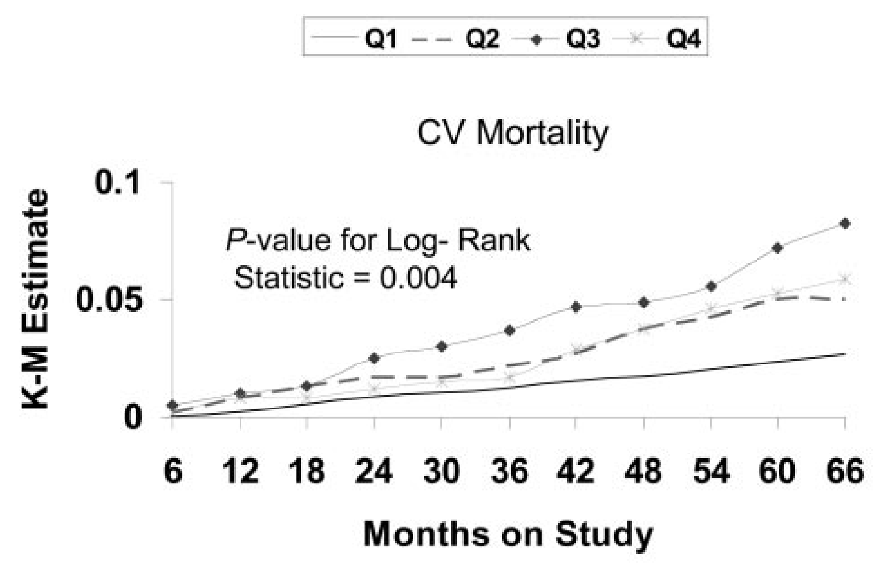
[1] Figure 1 하단 · 심혈관 사망 대상: Health ABC 2,488명 70–79세 · 지역사회 거주 노인
초기 보행·계단·일상생활 기능 양호
평균 4.6년 추적
Q1–Q4 = 제1–제4 사분위군 성별 PWV를 낮은 순으로 4등분
Q1 Q2 Q3 Q4
PWV 낮음 → 높음
Q1: 낮은 1/4 · Q4: 높은 1/4
각 군의 선 높이: 그 시점까지의 심혈관 사망확률
가로는 추적 개월, 세로는 심혈관 사망확률입니다. 같은 시점에서 Q1과 나머지 군의 선을 비교합니다.
[1] Sutton-Tyrrell et al. (2005), Circulation 111:3384–3390 · 대상자 p.3385 · Figure 1 p.3387
높은 기저 대동맥 PWV군에서 이후 심혈관 사망확률이 높았다.
PWV는 혈관 경직과 이후 심혈관 위험을 연결하는 예측 지표이다.
PWV를 먼저 측정하고 이후 사망을 추적한 자료이므로 예측 관계라는 시간 구조에 직접 대응한다. Q1이 낮고 상위군이 높다는 패턴을 보여 준다.
인쇄 p.3384 / PDF 1쪽 / Abstract, Conclusions
Among generally healthy, community-dwelling older adults, aPWV, a marker of arterial stiffness, is associated with higher CV mortality, CHD, and stroke.
대체로 건강한 지역사회 거주 노인에서 동맥 경직도의 지표인 aPWV는 더 높은 심혈관 사망, 관상동맥질환 및 뇌졸중과 관련된다.
what: Health ABC의 기저 aPWV 측정 가능자 2,488명에서 평균 4.6년 추적한 선행연구의 심혈관 사망 곡선.
how_to_read: 성별 aPWV 사분위군 Q1–Q4를 같은 시점에서 비교한다. Y축 .05는 약 5% 사망확률이며 사망률/년이 아니다. Q1이 대체로 낮고 Q3이 가장 높은 구간도 있어 Q1→Q4가 완전한 단조 증가인 것은 아니다.
key_result: CV 사망 곡선의 log-rank P=.004.
why_supports: 높은 기저 PWV와 이후 CV 사망이 관련된다는 Watson 배경의 직접적인 관찰 근거다.
limits: 미보정 곡선이므로 독립성 자체는 이 그림에서 읽지 않는다. 같은 논문 Table2 최종 보정에서 Q4 CV사망 RR1.31(.62–2.74)는 1을 포함하고, 사건·군에 따라 보정 결과가 다르다. 고혈압을 거친 사망의 매개 인과 또는 PWV 감소 치료효과를 입증하지 않는다.
선행연구 대상자는 Sutton-Tyrrell 등(2005)의 Health ABC 분석집단 2,488명이다. 1997년 3월–1998년 7월 피츠버그·멤피스에서 모집한 70–79세 지역사회 거주 노인 3,075명 중 대동맥 PWV가 유효한 참여자를 분석했다. 모집 시 0.25마일(약 400m) 걷기, 계단 10개 오르기, 기본 일상생활에 어려움이 없다고 보고했고 생명을 위협하는 질환이 없었다. 보행검사 통과 여부로 선정한 것이 아니다. 기능 양호는 고혈압·당뇨병·기존 심혈관질환이 전혀 없다는 뜻은 아니다. 평균 4.6년 추적 중 전체 사망 265명, 심혈관 사망 111명이었다.
주논문 Watson(2011)도 동일한 Health ABC 모집 코호트 기반이나 보행자료를 포함하는 분석 기준 때문에 최종 n=2,172명이다. Sutton-Tyrrell(2005)은 PWV와 이후 사망·심혈관 사건, Watson은 PWV와 반복 보행속도의 연관성을 분석했다. 같은 모집 코호트와 모든 분석 대상자가 동일하다는 것은 구분한다. 화면의 짧은 기능 선정 요약은 원문 Methods p.3385, 표본·추적기간은 Abstract p.3384 및 Results p.3386에 근거한다.
그림·표 읽기 해설 화면 단계 1 자료: Sutton-Tyrrell(2005)의 Health ABC 참여자 2,488명(모집 시 70–79세)에서 평균 4.6년 추적한 심혈관 사망 곡선이다. 우측 위에 대상자를, 아래에 성별 PWV 사분위군을 설명한다.
축·열·범례: 성별 aPWV 사분위군 Q1–Q4를 같은 시점에서 비교한다. Y축 .05는 약 5% 사망확률이며 사망률/년이 아니다. Q1이 대체로 낮고 Q3이 가장 높은 구간도 있어 Q1→Q4가 완전한 단조 증가인 것은 아니다.
관찰 결과: CV 사망 곡선의 log-rank P=.004.
본문과의 연결: 이번 Watson 논문과 같은 Health ABC 모집 코호트를 활용한 선행연구로, 높은 기저 PWV와 이후 심혈관 사망의 관련성을 보여준다. 선행연구의 결과는 사망, 이번 논문의 결과는 보행속도라는 차이를 연결한다.
해석 범위: 미보정 곡선이므로 독립성 자체는 이 그림에서 읽지 않는다. 같은 논문 Table2 최종 보정에서 Q4 CV사망 RR1.31(.62–2.74)는 1을 포함하고, 사건·군에 따라 보정 결과가 다르다. 고혈압을 거친 사망의 매개 인과 또는 PWV 감소 치료효과를 입증하지 않는다.
aPWV : 대동맥 맥파전달속도 · PWV : 맥파전달속도 · CV : 심혈관 · Q1–Q4 : 제1–제4 사분위군 · K–M : 카플란–마이어 추정 · P : 유의확률 · ABC : 건강·노화·신체구성 연구
INTRODUCTION
Introduction : PWV·반사파와 대동맥 완충능 대동맥 경직 증가: 맥파 전달이 빨라지고 완충능은 감소
PWV = 맥파전달속도 · 압력파의 이동 속도 = 거리 ÷ 시간차
반사파 조기 귀환 → 수축기 압력·심장 후부하 증가 대동맥 완충능 감소 → 압력·혈류의 맥동 증가 심장 부담 증가 / 이완기 충만을 돕는 효과 감소 뇌·신장 소혈관에 큰 맥동 전달 → 미세혈관 손상 가능성 [2–5] Watson Introduction p.90 [2–5] · [2] O’Rourke (2007), pp.332–333 · 원문
PWV는 압력파가 혈관을 따라 이동하는 속도다. 같은 거리에서 전달 시간이 짧을수록 PWV가 크다. 대동맥 경직 증가에 따른 완충능 저하와 조기 반사파의 순환계 영향을 문장으로 설명하도록 원리도를 제거했다.
후부하는 심장이 혈액을 밀어내기 위해 이겨내는 부담이다. 이완기 충만은 심장이 이완할 때 혈액이 채워지는 과정이다. 완충능 저하에 따른 높은 맥동이 뇌·신장의 작은 혈관에 전달되는 기전을 Watson의 서론이 설명한다. 이 페이지는 기전 설명이며, Watson이 이 경로를 직접 측정·입증한 결과는 아니다.
그림·표 읽기 해설 화면 단계 1 자료: PWV 정의와 대동맥 경직의 순환계 영향을 정리한 문장이다.
축·열·범례: PWV의 속도 정의를 먼저 읽고 반사파·완충능·심장 부담·소혈관 노출을 차례로 연결한다.
관찰 결과: 이 페이지는 선행문헌의 생리 기전 설명이다.
본문과의 연결: 동맥 경직이 단순한 수치가 아니라 심장·장기관류와 연결될 수 있다는 연구 배경을 보여준다.
해석 범위: 해당 경로를 Watson의 보행 자료에서 직접 측정한 것은 아니다.
PWV : 맥파전달속도
INTRODUCTION
Introduction : PAD와 이후 보행속도 감소 폐쇄성 PAD: 신체장애 발생·보행속도 감소의 예측인자 [9–11]
AAI
= Watson의 PAD 기준: AAI < 0.9
발목 혈압이 팔 혈압의 90% 미만
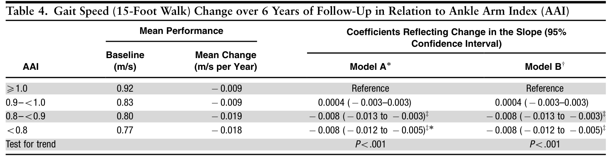
[9] Table 4 본문 발췌 · AAI와 6년간 보행 변화 / 전체 각주는 원본 확대 낮은 AAI군은 연간 보행 감소가 더 큽니다. 오른쪽은 기준군 대비 추가 감소량입니다.
[9] Brach et al. (2008), J Am Geriatr Soc 56:1037–1044 · Table 4, p.1042 · 원문
낮은 AAI 두 군은 기준군보다 보행 속도가 더 빨리 감소했다.
보정 후 추가 감소: 약 0.008 m/s/년
기저 AAI를 먼저 측정하고 이후 보행 속도를 반복 측정했으므로 PAD가 향후 보행 저하의 예측인자라는 Watson 문장에 직접 대응한다.
인쇄 p.1037 / PDF 1쪽 / Abstract, Results
Individuals with an AAI less than 0.9 had on average a mean decrease in gait speed of 0.02 m/s per year, or a decline of 0.12 m/s over the 6-year follow-up.
AAI가 0.9 미만인 사람들은 보행 속도가 평균적으로 연간 0.02 m/s 감소했으며, 이는 6년 추적 동안 0.12 m/s 감소에 해당하였다.
what: Cardiovascular Health Study의 15-foot walk 보행 속도 6년 추적 표. 보행 분석 표본은 4,344명이다.
how_to_read: AAI≥1.0이 Reference다. 왼쪽 Baseline은 처음 속도, Mean Change는 기저 수행을 보정한 각 군의 연간 변화다. 오른쪽 Model B는 기준군에 비해 추가로 얼마나 더 변하는지 나타낸 계수와 CI이다.
key_result: 기준군 연간 변화 −.009 m/s, AAI .8–<.9와 <.8은 −.019·−.018 m/s. 두 낮은 군의 Model B 추가 변화는 각각 −.008(−.013,−.003), −.008(−.012,−.005) m/s/년이다.
why_supports: 단순히 현재 느리게 걷는 사람이 많다는 횡단 결과를 넘어 미래의 감소율 차이를 보여 준다.
limits: 추가 감소 .008과 각 군 총 감소 약 .02는 다른 값이다. 이 연구 기준군≥1.0과 Watson의 비PAD≥.9는 다르다. 선행연구 Model A/B를 Watson Model1/2/3과 혼동하지 않는다. 관찰연구이며 PAD 치료효과나 PWV 효과를 검정한 표는 아니다.
AAI(ankle–arm index, 발목–팔 지수)는 발목 수축기혈압을 팔 수축기혈압으로 나눈 무차원 비율이다. 도식의 위쪽은 발목, 아래쪽은 팔의 수축기혈압이다. 이는 혈압의 비율이지 혈류량의 비율이 아니다.
0.9는 팔 혈압 대비 발목 혈압 90%에 해당한다. 0.9 미만은 90% 미만이라는 수학적 해석이다. Watson은 전통적 진단기준에 따라 AAI<0.9를 PAD로 정의했다고 Methods에서 보고한다. 이 발표가 임의로 새 경계값을 정한 것은 아니다.
Watson은 오른팔과 양쪽 발목의 후경골동맥에서 표준 커프와 펜슬형 도플러 탐촉자로 혈압을 두 번 측정해 평균했다. 양쪽 다리의 AAI 중 낮은 값을 개인의 AAI로 사용했다. AAI≥0.9는 이 연구의 비PAD 비교군이라는 뜻이며 정상 혈관 상태가 확인되었다는 뜻으로 확장하지 않는다.
서론의 Brach 선행연구 표에서는 AAI≥1.0이 기준군이다. Watson의 PAD 경계 0.9 및 비PAD≥0.9와 기준군 정의가 같지 않다. AAI는 말초동맥질환 분류 지표이고 PWV는 대동맥 경직도의 지표다. Q1–Q4는 AAI나 증상이 아니라 기저 PWV로 나눈 군이다.
그림·표 읽기 해설 화면 단계 1 자료: 위쪽 원·분수 도식은 AAI와 Watson의 0.9 기준이다. 아래는 Cardiovascular Health Study에서 AAI와 6년간 보행속도 변화를 비교한 Brach의 실제 Table 4다.
축·열·범례: 도식은 발목 수축기혈압÷팔 수축기혈압으로 읽는다. Watson의 PAD 기준 0.9 미만은 발목 압력이 팔의 90% 미만이라는 뜻이다. 아래 선행연구의 기준군은 AAI≥1.0이다. Baseline은 처음 속도, Mean Change는 각 군의 연간 변화, Model B는 기준군 대비 추가 변화와 CI다.
관찰 결과: 기준군 연간 변화 −.009 m/s, AAI .8–<.9와 <.8은 −.019·−.018 m/s. 두 낮은 군의 Model B 추가 변화는 각각 −.008(−.013,−.003), −.008(−.012,−.005) m/s/년이다.
본문과의 연결: 단순히 현재 느리게 걷는 사람이 많다는 횡단 결과를 넘어 미래의 감소율 차이를 보여 준다.
해석 범위: 추가 감소 .008과 각 군 총 감소 약 .02는 다른 값이다. 이 연구 기준군≥1.0과 Watson의 비PAD≥.9는 다르다. 선행연구 Model A/B를 Watson Model1/2/3과 혼동하지 않는다. 관찰연구이며 PAD 치료효과나 PWV 효과를 검정한 표는 아니다.
PAD : Peripheral Arterial Disease · 말초동맥질환 · AAI : 발목–팔 지수 · CI : 신뢰구간 · CVD : 심혈관질환 · IC : 간헐적 파행
INTRODUCTION
Introduction : 당시 ACE 억제제 보고와 기전 가설 ACE의 작용과 Watson이 인용한 당시 보고 [12]
ACE: Angiotensin-Converting Enzyme · 안지오텐신전환효소
ACE: 안지오텐신 I → 안지오텐신 II → 혈관수축·혈압 상승 ACE 억제제: 안지오텐신 II 생성 감소 → 혈관 이완·혈압 감소 당시 보고 [12]: 대동맥 경직도 감소와 보행지구력 향상
Watson의 기전 가설: PAD에서 중심 대동맥 경직과 보행의 연결
PAD가 있는 상태에서 중심 대동맥 경직 ↑ → 하지 관류 ↓ 또는 심장 이완기 기능 ↓ → 느린 보행의 가능성
이번 분석: 기저 PWV–반복 측정 보행속도의 연관성 · PAD 유무별 분석
인용문헌 [12]: 2015년 철회 근거 연구에서 환자 기록 위조·결과 왜곡 확인
ACE 기능: NIH/NLM · ACE 억제: AHA · [12] 공식 철회 공지
ACE는 안지오텐신 I을 혈관수축 작용을 하는 안지오텐신 II로 전환하는 효소다. ACE 억제제는 이 경로를 억제하여 혈관 이완과 혈압 감소에 기여한다. 이는 약물 작용의 일반적 설명이며 이 발표는 개인 치료를 권고하는 자료가 아니다.
Watson이 2011년 서론에서 인용한 Ahimastos 2008 [12]는 PAD 환자의 대동맥 경직도 감소와 보행 지구력 향상을 보고했다. 공식 2015년 철회 공지는 이 논문의 기반이 된 연구에서 환자 기록 위조와 결과 왜곡이 확인됐다고 설명한다. 철회 대상은 인용문헌 [12]이며 Watson 2011 주논문과 구분한다.
공식 조사에서 철회를 요청한 공동저자들은 연구부정에 관여하지 않은 것으로 확인되었다. 따라서 현재 유효한 중재 근거로 사용하지 않고 당시 연구 질문의 역사적 배경으로만 설명한다.
7쪽 메모에 따라 누락됐던 구체적 가설을 복원했다. 주논문 Introduction p.90은 당시 ACE 억제제 연구가 혈압 강하로 예상되는 정도 이상으로 보행지구력을 개선했다고 보고한 뒤, 대동맥 경직이 PAD에서 하지 관류 저하 또는 이완기 기능 저하에 기여할 가능성을 제시한다. 이완기 기능은 심장의 이완기 기능을 뜻한다. PAD를 낮췄다는 뜻이 아니며, 하지 관류와 이완기 기능은 모두 순차적으로 악화됐다는 뜻도 아니다. 원문의 or를 살려 또는로 표시했다.
본 연구는 PWV와 반복 보행속도의 연관성을 분석했다. 관류·이완기 기능의 매개경로를 직접 검증하거나 ACE 억제제 치료효과를 시험한 연구는 아니다. 화살표는 논문의 가능한 설명을 표시한다. 당시 Ref12의 개선 보고는 2015년 철회됐으므로 현재 유효한 중재효과의 근거로 쓰지 않는다. 철회 표시는 같은 화면에 유지한다.
이 페이지의 연결은 중심 대동맥 경직도와 PAD 환자의 보행이다. PWV는 기저에 측정한 대동맥 경직도의 지표이며, 종속변수는 여러 시점의 보행속도다. PAD는 AAI로 정의한 말초동맥질환 유무로, 상호작용 검정 및 하위집단 분석에 사용된다. 핵심 질문은 기저 PWV와 보행속도 수준·감소율의 관련성, 그리고 그 관련성이 PAD 유무에 따라 다른지이다.
중심 대동맥 경직도가 PAD를 발생시키고 PAD가 보행속도를 매개한다는 3단계 인과모형을 검정한 것은 아니다. 화면에서 PAD가 있는 상태라고 먼저 명시하여 이미 말초 혈류 공급이 제한된 임상적 상황으로 읽게 한다. 하지 관류 또는 심장 이완기 기능 저하는 저자가 제시한 가능한 기전이고 본 연구에서 직접 매개효과를 측정하지 않았다. PAD군의 유의한 계수만으로 군 간 차이를 확정하지 않으며 PWV×PAD P=.21은 마지막 Critical Review에서 다룬다.
그림·표 읽기 해설 화면 단계 1 자료: 위는 ACE의 일반적 작용, 가운데는 당시 개선 보고와 구체적인 기전 가설, 아래는 Ref12의 철회 상태다.
축·열·범례: ACE 작용과 당시 중재 보고를 읽은 뒤, 이미 PAD가 있는 상태에서 중심 대동맥 경직이 하지 관류 또는 심장 이완기 기능을 통해 보행을 제한할 수 있다는 가설을 읽는다. 마지막 한 줄은 기저 PWV가 설명변수, 반복 측정 보행속도가 결과변수, PAD 유무가 하위집단 분류라는 실제 분석 구조다.
관찰 결과: Watson은 혈압 강하만으로 예상되는 정도를 넘어섰다는 당시 보고를 연구배경에 인용했다. 이 중재 보고는 이후 철회됐다.
본문과의 연결: PWV로 측정한 중심 대동맥 경직도와 말초동맥질환이 있는 고령자의 보행속도를 연결하는 연구배경을 명확하게 보여준다.
해석 범위: 하지 관류·이완기 기능을 통한 경로는 가능한 설명이며 직접 검증한 매개모형이 아니다. PWV가 PAD를 유발한다는 화살표로 읽지 않는다. Ref12는 이후 철회됐다.
ACE : 안지오텐신전환효소 · PAD : Peripheral Arterial Disease · 말초동맥질환 · PWV : 맥파전달속도
INTRODUCTION
Introduction : Health ABC에서 검토한 연구 질문 초기 신체 기능이 양호한 노인에서, 동맥 경직도와 보행의 연관성 분석
Health ABC · 유효 PWV·기초 보행 자료가 있는 2,172명
＋ 반복 측정한 보행속도 이후 7년간의 20m 평상시 보행
보행속도 수준의 차이 / 시간에 따른 감소율과의 연관성
전체 코호트 분석 + PAD 유무별 검토
Watson et al. (2011), American Journal of Hypertension 24:90–95 · 원문
초기 기능이 양호한 노인의 기저 PWV와 이후 7년 보행 속도의 관계
보행 속도 수준·감소율을 구분하고 PAD 유무에 따라 평가
이 페이지는 새로운 외부 도판이 필요한 결과가 아니라 Watson의 연구 질문이다. 가상 기울기·임의 데이터를 넣지 않고 실제 측정 변수와 시간 구조만 정리한다.
what: Watson의 실제 목적 문장과 자료 구조.
how_to_read: 기저 PWV는 개인별 설명변수, 반복 보행 속도는 결과변수다. PAD 유무를 나누어 분석한다. 보행 속도 수준 차이와 연간 감소율 차이는 별도 질문이다.
key_result: 아직 결과 추정치가 없는 질문 페이지다.
why_supports: 심혈관 위험 지표와 PAD의 기능 저하 근거를 지역사회 노인의 PWV–보행 관계라는 질문으로 연결한다.
limits: 코호트의 연관성 분석은 경직도 치료효과나 이완기 기능·미세관류의 매개 경로를 직접 검증하는 연구가 아니다.
그림·표 읽기 해설 화면 단계 1 자료: Watson의 실제 목적 문장과 자료 구조.
축·열·범례: 기저 PWV는 개인별 설명변수, 반복 보행 속도는 결과변수다. PAD 유무를 나누어 분석한다. 보행 속도 수준 차이와 연간 감소율 차이는 별도 질문이다.
관찰 결과: 아직 결과 추정치가 없는 질문 페이지다.
본문과의 연결: 심혈관 위험 지표와 PAD의 기능 저하 근거를 지역사회 노인의 PWV–보행 관계라는 질문으로 연결한다.
해석 범위: 코호트의 연관성 분석은 경직도 치료효과나 이완기 기능·미세관류의 매개 경로를 직접 검증하는 연구가 아니다.
PWV : 맥파전달속도 · PAD : Peripheral Arterial Disease · 말초동맥질환 · AAI : 발목–팔 지수 · ABC : 건강·노화·신체조성 연구
METHODS
Methods : 처음의 PWV와 이후 보행 속도 기저 대동맥 PWV와 7년간 반복 측정한 보행 속도의 관계를 분석
역할 이 논문에서의 변수 측정의 시간 구조 설명변수 기저 대동맥 PWV 처음 측정한 개인별 값 결과변수 20 m 평소 보행 속도 연구 1·2·3·4·5·6·8차 연도 추가 비교 PAD 유무 기저 AAI <0.9로 분류
Health ABC: 미국 두 지역의 70–79세 지역사회 거주 노인 코호트
기저 PWV는 개인별 설명변수 / 보행 속도는 같은 사람에게 반복 측정
Watson et al. (2011), American Journal of Hypertension 24:90–95 · 원문
연구 설계는 관찰 코호트 연구이다. Health, Aging and Body Composition(Health ABC)은 노화·건강·신체구성 연구이다. PWV(pulse wave velocity, 맥파전달속도)는 처음 평가한 개인별 값이며, 보행 속도는 추적 방문마다 측정한 결과이다. 같은 사람의 PWV가 증가한 만큼 보행 속도가 변했는지를 분석한 설계와 구분해야 한다. 보행 속도 수준은 처음 또는 연구 기간 전반에서 누가 더 느리게 걷는지를, 감소율은 시간이 흐를 때 누가 더 빠르게 느려지는지를 뜻한다. 이 두 질문을 뒤의 PWV 주효과와 PWV×시간 항이 각각 다룬다. 출처: 본문 Methods, 인쇄 p91, PDF p2; Results, 인쇄 p92, PDF p3. 개인별 원자료와 분석 코드는 제공된 6쪽 논문에 포함되어 있지 않다.
그림·표 읽기 해설 화면 단계 1 자료: 설명변수·결과변수·PAD 분류의 역할을 정리한 표.
축·열·범례: 행마다 무엇을 측정했는지와 측정 시점을 함께 읽는다.
관찰 결과: 기저 PWV와 7년간 보행 속도의 관계를 분석한다.
본문과의 연결: 이후 혼합모형에서 사람별 고정된 PWV와 변하는 시간·보행 속도를 구분하는 근거다.
해석 범위: 관찰 코호트 설계다. PWV를 변화시킨 중재시험이 아니다.
PWV : 맥파전달속도 · PAD : Peripheral Arterial Disease · 말초동맥질환 · AAI : 발목–팔 지수 · Health ABC : 건강·노화·신체구성 연구
METHODS
Methods : 분석 대상자의 선택과 누락 Health ABC 등록 3,075명
70–79세 · 처음 보행 제한 없음 →
장비 문제 354명
→
PWV 보유자 중
Watson et al., American Journal of Hypertension 2011;24:90–95. · Methods p91 / PDF p2; Table 3 p93 / PDF p4 · 원문
등록 대상은 Medicare 자격이 있는 70–79세 남녀로, 처음부터 보행 기능이 비교적 좋은 집단이다. 1/4 mile 걷기, 쉬지 않고 계단 10개 오르기, 기본 일상생활에 어려움이 있거나 보행 보조기가 필요하다고 보고하면 제외했다. PWV 자료는 장비 문제 354명과 사용 불가 파형 233명에서 없어 총 587명이 제외되었고, 남은 2,488명 중 기저 보행 속도 유효 자료가 있는 2,172명을 분석했다. PWV 누락자는 흑인 비율 47% 대 40%, 수축기혈압 134 대 136 mmHg, 심박수 67 대 65회/분으로 자료 보유자와 차이가 있었다. Table 3의 PAD 261명과 비PAD 1,802명을 합하면 2,063명이다. 109명의 차이는 논문에 사유가 명시되어 있지 않아 AAI 결측이라고 확정하지 않는다. PAD 12.7%는 261/2,063에 부합한다. 원문 인쇄 p91과 p93, PDF p2와 p4.
그림·표 읽기 해설 화면 단계 1 자료: Health ABC 등록 집단.
축·열·범례: 맨 왼쪽 상자에서 연령과 등록 인원을 확인한다.
관찰 결과: 처음부터 보행 기능이 비교적 좋은 집단을 모집했다.
본문과의 연결: 연구 결과를 일반화할 대상의 출발 조건을 보여준다.
해석 범위: 이미 기능 제한이 있는 노인 전체를 대표하는 표본은 아니다.
화면 단계 2 자료: PWV 자료 누락과 사용 가능 인원.
축·열·범례: 첫 화살표 아래의 두 제외 인원을 더하고 다음 상자와 비교한다.
관찰 결과: PWV 누락은 총 587명이다.
본문과의 연결: 분석 표본 선택에서 측정 자료의 가용성이 중요했음을 보여준다.
해석 범위: 누락자는 특성이 달랐으므로 완전 무작위 누락으로 단정하지 않는다.
화면 단계 3 자료: 최종 분석 표본.
축·열·범례: PWV 보유 2,488명과 마지막 상자 2,172명을 연결한다.
관찰 결과: 추가 316명 차이가 반영되어 주 분석 인원이 결정된다.
본문과의 연결: 실제 보행–PWV 분석의 분모를 확인할 수 있다.
해석 범위: PAD 층화 합계는 2,063명으로 전체보다 109명 적으며 사유는 명시되지 않았다.
PWV : 맥파전달속도 · PAD : Peripheral Arterial Disease · 말초동맥질환 · Health ABC : 건강·노화·신체구성 연구 · n : 참여자 수
PWV : 맥파전달속도 · PAD : Peripheral Arterial Disease · 말초동맥질환 · Health ABC : 건강·노화·신체구성 연구 · n : 참여자 수
PWV : 맥파전달속도 · PAD : Peripheral Arterial Disease · 말초동맥질환 · Health ABC : 건강·노화·신체구성 연구 · n : 참여자 수
METHODS
Methods : 대동맥 PWV의 측정과 반복 평균 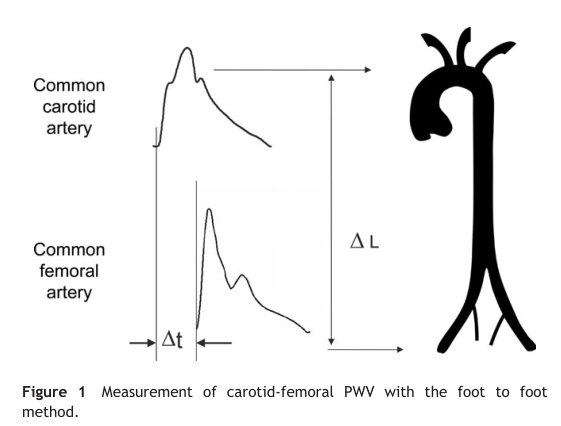
인용문헌 13의 원본 Figure 1: 경동맥–대퇴동맥 PWV 측정 경동맥·대퇴동맥 맥파를 동시에 기록
Doppler: Parks 810A / 9.0–10 MHz 탐촉자
동시 기록 부위마다 최소 10박동 / 참여자마다 별도로 3회 기록
Laurent et al. (2006): 식 p.2591 · Figure 1 p.2592 · DOI: 10.1093/eurheartj/ehl254 · Watson Methods p.91
대동맥 PWV는 경동맥과 대퇴동맥의 맥파를 동시에 Doppler로 기록하여 측정했다. 각 동시 기록에서 최소 10박동을 확보했고, 한 참여자에서 세 번 별도 기록을 실시했다. 최종 PWV는 사용할 수 있는 기록들을 평균하여 계산했다. 이 평균은 같은 방문에서의 PWV 반복 측정 평균이다. 추적 여러 해의 보행 속도를 한 값으로 평균한 것과 혼동하면 안 된다. ICC는 intraclass correlation coefficient, 급내상관계수로 반복 측정의 신뢰도 지표이다. 14명에서 측정자 간 0.88, 판독자 간 0.84가 보고되었지만 이 값만으로 개별 측정의 모든 오차가 사라지는 것은 아니다. 그림은 주논문 자체의 실측 파형이 아니라 주논문이 인용한 Laurent 등(2006)의 Figure 1 원본이다. Watson 인쇄 p91/PDF p2; Laurent 인쇄 p2592/PDF p5.
인용문헌: [13]
화면의 식은 PWV=ΔL/Δt이다. ΔL은 경동맥–대퇴동맥 기록 지점 사이에서 줄자로 측정한 체표 거리, Δt는 두 파형의 시작점(foot)이 나타나는 시각의 차이이다. Foot은 이완기 말 파형의 급한 상승이 시작되는 지점이다. 거리를 cm, 시간을 s로 넣으면 PWV의 단위는 cm/s가 된다. 같은 거리에서 시간 차이가 짧을수록 PWV는 커지며 대동맥이 더 뻣뻣한 방향이다. 이는 맥파 전달 속도이며 혈액 자체의 유속과 구분한다.
주논문 Watson Methods p.91의 시간차를 거리로 나눈다는 서술은 속도의 차원과 반대다. 화면에는 인용문헌13 Laurent(2006) p.2591/PDF4의 표준식 PWV=D/Δt 및 거리/시간의 단위에 맞추어 ΔL/Δt로 제시한다. 저자의 실제 분석 코드나 공식 정오표를 확인한 것은 아니다. 그림의 ΔL과 Δt를 수식과 대응시키기 위해 같은 기호를 사용했다. Watson은 같은 방문에서 최소10박동·3회 기록 후 사용 가능한 기록을 평균했다.
그림·표 읽기 해설 화면 단계 1 자료: Laurent 등(2006) Figure 1의 혈관·파형 도식.
축·열·범례: 왼쪽 도식에서 경동맥·대퇴동맥 사이 거리 ΔL과 두 파형 foot 사이 시간 차이 Δt를 확인한다. 오른쪽 PWV=ΔL/Δt에 대응시키며, 거리 cm÷시간 s=cm/s로 단위를 읽는다.
관찰 결과: 같은 거리에서 두 파형의 시간 차이가 짧으면 PWV가 커진다. 높은 PWV는 더 큰 대동맥 경직도를 나타낸다.
본문과의 연결: Watson이 사용한 중심동맥 경직도 측정의 기본 원리를 뒷받침한다.
해석 범위: 최소 10박동·3회 기록 평균은 Watson Methods의 절차다. 이 도판 자체가 그 반복 기록을 보여주지는 않는다.
PWV : 맥파전달속도 · D 또는 ΔL : 이동거리 · Δt : 파형 시작점 사이 시간차 · ICC : 급내상관계수
METHODS
Methods : AAI로 말초동맥질환을 분류 AAI (Ankle–Arm Index): 발목–팔 지수
AAI < 0.9: 발목 수축기혈압이 팔의 90% 미만
오른팔·양쪽 발목에서 2회 측정한 결과를 평균 · 양쪽 중 낮은 AAI 사용
양쪽 다리 중 낮은 AAI < 0.9 → PAD 이 연구의 비PAD 비교군: AAI ≥ 0.9
AAI는 혈압의 비율입니다. 양쪽 중 낮은 값이 0.9 미만이면 PAD로 분류합니다.
Watson Methods p.91 / PDF 2쪽 · 측정 동맥 보충: NIA 공개 AAI 프로토콜
AAI(ankle–arm index, 발목–팔 지수)는 발목 수축기혈압을 팔 수축기혈압으로 나눈 무차원 비율이다. 도식의 위쪽은 발목, 아래쪽은 팔의 수축기혈압이다. 이는 혈압의 비율이지 혈류량의 비율이 아니다.
0.9는 팔 혈압 대비 발목 혈압 90%에 해당한다. 0.9 미만은 90% 미만이라는 수학적 해석이다. Watson은 전통적 진단기준에 따라 AAI<0.9를 PAD로 정의했다고 Methods에서 보고한다. 이 발표가 임의로 새 경계값을 정한 것은 아니다.
Watson은 오른팔과 양쪽 발목의 후경골동맥에서 표준 커프와 펜슬형 도플러 탐촉자로 혈압을 두 번 측정해 평균했다. 양쪽 다리의 AAI 중 낮은 값을 개인의 AAI로 사용했다. AAI≥0.9는 이 연구의 비PAD 비교군이라는 뜻이며 정상 혈관 상태가 확인되었다는 뜻으로 확장하지 않는다.
서론의 Brach 선행연구 표에서는 AAI≥1.0이 기준군이다. Watson의 PAD 경계 0.9 및 비PAD≥0.9와 기준군 정의가 같지 않다. AAI는 말초동맥질환 분류 지표이고 PWV는 대동맥 경직도의 지표다. Q1–Q4는 AAI나 증상이 아니라 기저 PWV로 나눈 군이다.
Watson은 오른팔과 양쪽 발목의 후경골동맥을 명시했다. 상완동맥이라는 명칭은 Watson 본문에 직접 쓰이지 않았으며 Health ABC 운영 매뉴얼을 바탕으로 작성된 NIA 공개 MrOS AAI 프로토콜로 보충한 해부학적 설명이다. 해당 매뉴얼 p.6은 오른팔의 상완동맥, p.7은 발목의 후경골동맥, p.11은 Health ABC 매뉴얼에서 adapted되었음을 명시한다. 양팔이나 족배동맥을 추가로 측정했다고 확대하지 않는다.
그림·표 읽기 해설 화면 단계 1 자료: AAI의 분자·분모와 Watson이 실제 사용한 혈압 측정·PAD 분류 방법을 정리한 도식이다.
축·열·범례: 분자는 양쪽 발목의 후경골동맥 수축기혈압이고 분모는 오른팔 혈압이다. 팔의 상완동맥 표기는 Health ABC 기반 NIA 공개 프로토콜로 보충한 해부학적 설명이다. 논문은 두 번 측정한 결과를 평균하고 양쪽 중 낮은 AAI를 사용했다고 보고한다. 평균과 비율 계산의 세부 순서는 원문보다 구체화하지 않는다.
관찰 결과: AAI<0.9는 발목 수축기혈압이 팔의 90% 미만이라는 비율 기준이다. 이 페이지는 측정·분류 방법이며 새로운 효과 추정치가 아니다.
본문과의 연결: 이후 Table 2·3에서 AAI<0.9인 PAD군과 AAI≥0.9인 비PAD 비교군이 어떤 기준으로 나뉘는지 설명한다.
해석 범위: 90%는 혈압의 비율이며 혈류량의 비율이 아니다. AAI≥0.9를 혈관 정상으로 단정하지 않는다.
AAI : 발목–팔 지수 · PAD : Peripheral Arterial Disease · 말초동맥질환
METHODS
Methods : 20 m 평소 보행 속도의 추적 일정 시작 시 PWV 측정
같은 사람의 보행 속도를 반복 측정
20 m 보행 1차 t = 0
20 m 보행 2차 t = 1
20 m 보행 3차 t = 2
20 m 보행 4차 t = 3
20 m 보행 5차 t = 4
20 m 보행 6차 t = 5
검사 없음 × 7차 t = 6
20 m 보행 8차 t = 7
개인별·시점별 보행 기록을 모형에 유지
8차 연도는 기저시점 이후 7년 / 7차 연도에는 측정 없음
Watson et al., American Journal of Hypertension 2011;24:90–95. · Gait speed p91 / PDF p2 · 원문
보행 속도는 20 m 직선 코스에서 usual pace, 즉 평소 보행 속도로 걸을 때 평가했다. 출발선을 넘는 첫 발 착지에서 시간을 시작하고, 도착선을 넘는 첫 발 착지에서 종료했다. 일반적인 속도 정의는 이동거리/소요시간이며 이 연구는 결과를 m/s로 분석했다. 원문은 기저시점과 매년 연구 8차 연도까지 측정했으며, 연구 7차 연도는 제외했다고 명시한다. 그림에서는 이해를 위해 기저시점의 경과시간 t를 0, 연구 8차 연도를 t=7로 표현한다. 이는 설명용 시간 코딩이며 실제 Stata 코드에서 사용한 원점과 변수명을 확인한 것은 아니다. 연구 연도 7의 미측정은 모든 참여자가 그 방문에서 탈락했다는 뜻이 아니라 그 연도에 해당 검사를 하지 않았다는 일정이다. 원문 인쇄 p91/PDF p2.
그림·표 읽기 해설 화면 단계 1 자료: 시간표의 출발점.
축·열·범례: 1차 연도 아래 t=0을 읽는다.
관찰 결과: PWV는 처음 측정한 개인별 설명변수다.
본문과의 연결: 시간의 기준점을 알아야 Time 계수와 처음 속도를 구분할 수 있다.
해석 범위: t 코딩은 설명용 재표현이며 원 분석 변수명을 재현한 것은 아니다.
화면 단계 2 자료: 방문별 보행 측정과 미측정 표시.
축·열·범례: 검은 점은 20 m 검사, 회색 ×는 7차 연도의 미측정이다.
관찰 결과: 8차 연도는 기저 이후 7년이다.
본문과의 연결: 여러 시점의 결과를 종단 분석하는 실제 측정 일정을 보여준다.
해석 범위: 검사 일정이 있다는 뜻이며 모든 사람이 모든 검사를 완료했다는 뜻은 아니다.
화면 단계 3 자료: 종단 자료의 시간 구조.
축·열·범례: 연구 연도와 t=0…7을 나란히 비교한다.
관찰 결과: 반복 측정값에 시간 정보를 유지한다.
본문과의 연결: 보행 속도의 수준과 감소율을 서로 다른 모형 항으로 분석할 수 있게 한다.
해석 범위: 연구 7차의 계획된 미측정과 참여자별 결측을 구분한다.
PWV : 맥파전달속도 · Time : 경과시간
PWV : 맥파전달속도 · Time : 경과시간
PWV : 맥파전달속도 · Time : 경과시간
METHODS
Statistics : PWV가 낮은 순서로 네 군을 구성 전체 분석표본 2,172명
→ 기저 PWV 낮음 → 높음
→ 약 1/4씩 네 군
PWV군 원문 범위 (cm/s) 인원 (명) Q1 312–636 543 Q2 636–800 545 Q3 801–1,046 541 Q4 1,047–2,998 543
PWV Q1–Q4: 기저 특성 비교용 네 군 / AAI<0.9: PAD 분류용 기준
Q1은 PWV가 가장 낮은 군, Q4는 가장 높은 군입니다.
Watson et al. (2011) · Table 1·2, pp.92–93 / PDF 3–4쪽 · 원문
Q는 quartile의 약자다. 전체 유효 PWV·기저 보행 자료가 있는 2,172명을 본논문 표의 네 군으로 설명한다. 성별 사분위수라는 말은 사용하지 않는다.
범위를 부등호로 재정의하면 636 중복을 임의로 해결하는 셈이 된다. 따라서 312–636과 636–800이라는 원문 표제 그대로 제시하고 원문 중복을 각주로 밝힌다.
네 군의 인원 합계는 543+545+541+543=2,172명이다. 정확히 같은 543명씩으로 바꾸거나 차이가 생긴 이유를 동률 때문이라고 단정하지 않는다.
AAI는 별도의 지표다. Q4라고 반드시 PAD라는 뜻이 아니며, 각 PWV군 안에 PAD가 있을 수 있다. Table2의 AAI<.9 비율은 Q1 8.1%, Q2 10.3%, Q3 14.3%, Q4 18.2%로 보고되었다.
기저특성 네 군 비교와 7년 종단 회귀분석을 구분한다. 본논문의 PWV 회귀계수는 이 Q범주의 한 단계 변화가 아니라 PWV 1표준편차 차이의 보행속도 연관성이다.
그림·표 읽기 해설 화면 단계 1 자료: Watson의 Table1·2 열 제목에 제시된 기저 PWV 사분위군과 인원을 그대로 옮긴 표이다. 새 대상자 값이나 임의 관측값을 만들지 않았다.
축·열·범례: 기저 PWV가 작은 사람부터 큰 사람 쪽으로 네 군을 생각하면 된다. 각 군은 약 1/4이며 실제 인원은 543·545·541·543명이다. 같은 행에서 PWV 범위와 n을 함께 읽는다. Q1–Q4는 시간 경과 단계가 아니라 사람 간 PWV 수준의 범주다.
관찰 결과: 원문 범위와 네 군의 n 합계가 2,172명이라는 분류 정보다. 이 페이지 자체는 효과나 유의성을 새로 계산한 결과가 아니다.
본문과의 연결: 뒤 Table1·2의 나이·혈압·질환·보행 속도 등이 어느 PWV군끼리 비교되는지 알게 한다.
해석 범위: Watson 본논문은 성별로 따로 사분위군을 만들었다고 보고하지 않는다. 인트로 Ref1의 성별 사분위수와 혼동하지 않는다. Q1의 끝과 Q2의 시작에 636이 중복된 원문 표기를 임의로 고치지 않는다. 동일값의 배정 알고리즘·경계 처리·군 크기가 다른 이유는 보고하지 않았다. PWV 사분위 비교는 Table1·2용이고 주분석 혼합모형은 연속 PWV를 1 SD 단위로 해석한다.
Q1–Q4 : 제1–제4 사분위군 · PWV : 맥파전달속도 · AAI : 발목–팔 지수 · PAD : Peripheral Arterial Disease · 말초동맥질환
METHODS
Statistics : PWV 네 군의 기저 특성 비교 변수 유형 Table1·2의 비교 항목 Methods에 기재된 검정 범주형 (%) 남성 · 흑인 · 현재·과거 흡연 · 활동 여부: ≥1,000kcal/주 χ² 검정 범주형 (%) 관상동맥질환 · 당뇨병 · 고혈압 · 뇌혈관질환 · AAI<0.9 χ² 검정 연속형 (평균±SD) 나이 · BMI · 수축기·이완기혈압 · 맥압 · 심박수 · 총콜레스테롤 ANOVA 또는 Kruskal–Wallis 연속형 (평균±SD) 보행속도 · DSST 점수 ANOVA 또는 Kruskal–Wallis
주분석 · 7년 종단 분석 연속 PWV + 반복 보행속도 → 혼합효과모형
Watson et al. (2011) · Statistical analysis pp.91–92 · Tables 1·2 각주 · 원문
검정은 결과의 P값을 보고 붙이는 것이 아니라 자료 유형과 분석 질문에 연결한다. 다만 이 논문에서는 보고의 불일치 때문에 실제 행별 수행 내역까지 재구성할 수 없다.
범주형: 남성, 흑인, 현재 또는 과거 흡연, 신체활동 ≥1000kcal/주, 관상동맥질환, 당뇨, 고혈압, 뇌혈관질환, AAI<.9. 표에는 각 PWV군의 비율이 표시된다.
연속형: 나이, BMI, 수축기혈압, 이완기혈압, 맥압, 심박수, 총콜레스테롤, 보행속도, DSST 점수. 표에는 평균±SD가 표시된다. 연속형 변수별로 ANOVA와 KW 중 무엇을 골랐는지, 선택 기준을 어떤 절차로 평가했는지는 보고되어 있지 않다.
ANOVA의 귀무가설은 비교군의 평균이 모두 같다는 것이고, χ²는 범주 비율 분포가 같다는 것이다. KW는 순위 기반 비교이며 분포 모양이 같은 등의 조건 없이 곧바로 중앙값 차이라고만 해석하지 않는다.
P<.05이면 전체 네 군 비교에서 적어도 일부 차이에 대한 증거가 있다는 뜻이다. 사후 쌍별 비교가 보고되지 않았으므로 모든 조합의 차이를 확정하지 않는다.
실제 보고 예: Table1 관상동맥질환 P=.11, 콜레스테롤 P=.74; Table2 뇌혈관질환 P=.25. 이를 근거로 질환이나 콜레스테롤이 보행에 중요하지 않다고 결론내릴 수는 없다.
표 각주의 단일 ANOVA 문구를 근거로 모든 범주형 변수에도 ANOVA를 실행했다고 단정하거나, 반대로 각 범주형 행에 χ²를 실제 실행했다고 확정하지 않는다. 발표에서는 “Methods에 따르면”이라고 설명한다.
그림·표 읽기 해설 화면 단계 1 자료: 새 분석 결과가 아니라 Watson Methods의 검정 설명을 Table1·2의 실제 변수 유형에 연결한 표다. 원문은 범주형에 χ², 연속형에 Kruskal–Wallis 또는 분산분석을 썼다고 설명한다.
축·열·범례: 첫 열에서 자료 유형을 고르고 둘째 열에서 실제 변수를 찾은 뒤 셋째 열의 검정 범주를 읽는다. 남성·흡연·질환 여부는 사람 수/비율 비교이고, 나이·혈압·보행속도·DSST는 연속 수치 비교다. 신체활동은 소비열량 자체가 아니라 ≥1000kcal/주 여부, AAI는 연속값 자체가 아니라 <.9 비율로 보고되어 범주형이다. χ²는 네 군의 범주 분포, ANOVA는 평균, Kruskal–Wallis는 순위 기반 분포를 비교하는 검정이다.
관찰 결과: 이 페이지는 Table1·2의 P값이 어떤 비교를 나타내는지 설명한다. 원문 유의수준은 P<.05이다. 예를 들어 Table1 연령 P<.01, 콜레스테롤 P=.74는 각기 네 군 전체의 비교다.
본문과의 연결: 기저 비교 표의 P값과 뒤 혼합모형의 PWV 회귀계수 P값이 다른 질문임을 구분하게 한다. 기저 비교는 Q1–Q4의 출발 상태 차이, 혼합모형은 공변량을 고려한 반복 보행속도의 연관성을 다룬다.
해석 범위: Methods와 표 각주가 일치하지 않는다. Table1·2는 모든 P값에 붙은 각주를 “Analysis of variance”로만 설명한다. 따라서 Methods상 검정 범주는 매핑할 수 있으나 개별 행에 실제로 어떤 검정이 적용됐는지는 확정할 수 없다. P<.05는 네 군 모두 서로 다르다는 뜻이나 Q1 대 Q4만의 유의차를 뜻하지 않는다. 비유의 P값도 차이가 정확히 0임을 증명하지 않는다. Kruskal–Wallis를 일반적으로 평균 차이 검정 또는 언제나 중앙값 검정이라고 부르지 않는다.
χ² : 카이제곱 검정 · ANOVA : 분산분석 · KW : 크루스칼–왈리스 검정 · SD : 표준편차 · BMI : 체질량지수 · DSST : 숫자–기호 치환검사 · AAI : 발목–팔 지수 · P : 유의확률 · PWV : 맥파전달속도
METHODS
Statistics : 반복 측정과 공변량 보정 이 논문은 혼합효과모형 안에서 공변량을 보정했다.
혼합효과모형Mixed-effects model 같은 사람의 보행속도를
여러 해 반복 측정한 구조 반영
고정효과 + 무작위효과
개인별 출발 속도·시간 기울기 차이 고려
공변량 보정 나이·성별·혈압 등
다른 특성을 모형에 함께 포함
포함한 다른 조건이 같을 때
PWV와 보행속도의 연관성 추정
Model 1 → 2 → 3: 같은 혼합모형에서 보정 조건을 단계적으로 추가
혼합효과모형은 반복 기록을, 공변량 보정은 함께 고려할 다른 특성을 다룹니다.
Watson et al. (2011) · Methods, Statistical analysis pp.91–92 · 원문
“혼합”은 고정효과와 무작위효과를 함께 포함한다는 뜻이다. 이 연구는 같은 사람에게 반복 측정한 보행속도를 분석하고 개인별 출발 수준과 시간 변화율 차이를 무작위 절편·무작위 시간 기울기로 반영했다. 혼합모형이라는 말 자체가 공변량 보정을 의미하는 것은 아니다.
공변량 보정은 측정한 다른 특성을 모형에 함께 포함해 그 조건을 통계적으로 같게 놓았을 때의 PWV 연관성을 추정하는 역할이다. 실제 사람들의 나이·혈압 값을 같게 바꾸거나 원자료에서 빼는 절차가 아니다. 측정하지 않은 교란까지 제거되는 것은 아니다. 이 설명은 보고된 분석을 풀이한 것이며 새 자료나 새 식을 재구성하지 않는다.
논문은 참여자별 무작위 절편, 시간의 무작위 기울기, 연구기관과 PWV의 고정효과, PWV×시간 상호작용을 사용했다고 기술한다. Table 3의 Time은 경과시간 주효과다. 고정효과 계수는 기저 및 연구기간 전반의 보행속도 수준, 각 변수×시간 계수는 연간 변화율과의 관계로 해석한다고 Methods가 설명한다.
보행속도는 추적 방문마다 측정한 값으로 모형에 반영되며 한 사람의 여러 해 보행속도를 하나의 평균으로 만든 분석이 아니다. 단, 원자료나 실행 코드는 공개된 6쪽 논문에 포함되지 않아 누락 처리의 세부 구현을 임의로 재구성하지 않는다.
연속 공변량을 중심화했고 무작위효과 공분산행렬에는 특정 구조를 강제하지 않았다. 전체군 및 PAD별 분석을 수행했다. 보정 후 계수의 감쇠만으로 어떤 변수가 인과적으로 그 관계를 설명했다고 증명할 수는 없다.
그림·표 읽기 해설 화면 단계 1 자료: 혼합효과모형(Mixed-effects model)의 반복 측정·개인차 처리와 공변량 보정의 역할을 구분한 도식이다.
축·열·범례: 왼쪽은 같은 참여자의 반복 기록과 개인차, 오른쪽은 나이·성별·혈압 등을 함께 포함하는 보정이다. 아래 문장은 두 역할이 같은 분석 안에서 수행된다는 뜻이다.
관찰 결과: 혼합효과모형은 분석의 구조이고 Model 1–3은 보정 조건의 단계다.
본문과의 연결: Results의 세 모델을 서로 다른 대상자 집단이나 서로 다른 검정으로 오해하지 않게 한다.
해석 범위: “다른 조건이 같을 때”는 모형에 포함한 측정 변수에 관한 통계적 조건이다. 측정하지 않은 교란 제거·인과효과 증명이 아니다.
PWV : 맥파전달속도
METHODS
Statistics : Model 1–3의 누적 보정 조건 Model 1부터 연구기관을 보정 · Model 2·3은 앞 모형에 누적
모형 보정 조건 이 단계의 시간 상호작용 Model 1 연구기관
Memphis / Pittsburgh 기본 구성: PWV × 시간 Model 2 Model 1 + 나이·성별·인종 나이 × 시간
성별 × 시간 · 인종 × 시간 Model 3 Model 2 + BMI·수축기혈압·심박수·흡연·신체활동·관상동맥질환·당뇨·고혈압 고혈압 × 시간
공통: 기저 PWV·경과시간 / 개인별 무작위 절편·시간 기울기
Model 3: 후보를 추가한 뒤 후진제거법(Pout = 0.05)으로 최종 모형 선택
Model 1 → 2 → 3은 앞 모형에 보정 변수를 추가한 누적 관계입니다.
Watson et al. (2011) · Table 3 각주 p.93 / PDF 4쪽 · Methods pp.91–92 · 원문
세 모형은 같은 혼합효과모형에서 보정 조건을 단계적으로 추가한 분석이다. Model 1도 Memphis 대 Pittsburgh 연구기관을 보정하므로 완전 무보정이라고 부르지 않는다.
Table 3 각주: Model 2는 Model 1에 나이·성별·인종과 각 변수×시간을 추가한다. Model 3는 Model 2에 체질량지수, 수축기혈압, 안정시 심박수, 흡연, 신체활동, 관상동맥질환, 당뇨병, 고혈압 및 고혈압×시간을 추가한다고 보고한다. 표의 오른쪽 열은 각 단계의 추가 항으로 앞 단계의 시간항도 누적된다.
공변량 후보는 문헌상 알려진 교란변수 또는 이 코호트에서 동맥 경직도와 보행속도에 P<0.15로 관련된 변수였다. 기저 표에서 P<0.05인 변수만 골랐다고 설명하지 않는다. Methods는 추가 위험요인·만성질환과 각 변수×시간, PWV×PAD를 검토하고 후진제거법 Pout=0.05로 최종 모형을 선택했다고 서술한다. 개별 제거 순서와 미공개 분석 코드는 재구성하지 않는다.
총콜레스테롤은 고려한 후보에 있으나 최종 Table 3 보정 목록에는 없다. PAD별 분석을 반복하고 뇌혈관질환, DSST, AAI를 추가 보정한 분석은 별도로 평가했다. 이들을 Table 3 Model 3의 기본 최종 보정 목록에 임의로 넣지 않는다.
PWV×PAD P=0.21과 PWV×시간 결과는 Results 본문에 보고된다. 전체 추적을 4년으로 제한한 민감도 분석은 연구 5차 연도까지의 분석이다. 맥압과 PWV의 종단 보행 연관성도 비교했다. 연속 공변량 중심화, 무작위효과 공분산의 구조 비제약, 유의수준 P<0.05 및 Stata 10 사용이 보고되어 있다.
PWV 계수는 1표준편차 차이에 따른 보행속도(m/s) 수준의 차이다. Q1→Q2 한 단계 이동이나 매년 PWV 변화의 계수가 아니다. 같은 표에서 계수가 줄더라도 그 자체로 인과적 매개를 증명하지 않는다.
그림·표 읽기 해설 화면 단계 1 자료: Methods와 Table 3 각주에 명시된 보정 조건을 세 모형에 대응한 표다.
축·열·범례: 위에서 아래로 누적한다. Model 2는 Model 1을 포함하고 Model 3는 Model 2를 포함한다. 오른쪽 열은 해당 단계에서 추가로 설명하는 시간 상호작용이다.
관찰 결과: Model 1부터 연구기관 보정이 있으며 최종 모형에는 혈관 위험요인·만성질환을 추가했다.
본문과의 연결: 같은 PWV 계수의 Model 1–3 변화가 어떤 보정 조건에서 나온 것인지 Results 직전에 확인한다.
해석 범위: 후보 변수와 최종 Table 3 각주를 구분한다. 최종 모형에 모든 후보 시간항이 남았다고 단정하지 않는다.
PWV : 맥파전달속도 · BMI : 체질량지수 · Pout : 후진제거 기준
RESULTS
Results : PWV 사분위별 기저 특성 항목 전체(n=2,172) Q1(n=543) Q2(n=545) Q3(n=541) Q4(n=543) P 연령(세) 73.6±2.9 73.3±2.8 73.5±2.8 73.9±2.9 73.9±2.8 <0.01 남성(%) 48.1 44.9 44.2 50.1 53.2 <0.01 흑인(%) 38.5 33.5 37.3 39.9 43.5 <0.01 BMI(kg/m²) 27.3±4.7 26.1±4.4 27.4±4.5 28.1±4.8 27.4±4.8 <0.01 수축기혈압(mmHg) 135.5±19.3 129.8±19.3 133.9±18.6 137.5±19.0 140.6±19.5 <0.01 이완기혈압(mmHg) 71.6±10.9 70.5±10.4 71.6±10.6 71.8±11.2 72.6±11.4 0.02 맥압(mmHg) 63.9±16.8 59.3±15.6 62.3±15.9 65.7±16.9 68.0±17.5 <0.01 심박수(bpm) 64.5±10.6 62.0±9.9 64.4±9.9 65.4±10.5 66.4±11.5 <0.01 콜레스테롤(mg/dl) 203.7±37.8 203.0±35.0 204.7±36.3 204.5±40.8 202.7±38.9 0.74 현재·과거 흡연(%) 55.4 49.5 54.1 59.7 58.2 <0.01 신체활동≥1,000kcal/주(%) 32.9 37.6 33.0 31.1 29.8 0.04 관상동맥질환(%) 18.4 15.9 17.2 21.3 19.3 0.11 당뇨병(%) 14.0 8.3 12.0 17.0 19.6 <0.01 고혈압(%) 49.0 36.9 46.6 52.2 60.5 <0.01
Watson et al., American Journal of Hypertension 2011;24:90–95. · Table 1 p92 / PDF p3 · 원문
Table 1은 PWV를 네 사분위로 나누어 기저 특성을 비교한다. Q1 범위는 312–636, Q2는 636–800, Q3는 801–1,046, Q4는 1,047–2,998 cm/s이며 표에 인쇄된 범위를 그대로 따른다. 각 군의 수는 543, 545, 541, 543명이다. 전체 평균 연령 73.6±2.9세, 남성 48.1%, 흑인 38.5%이다. 수축기혈압과 고혈압 비율은 높은 PWV군에서 높고, 당뇨도 Q1 8.3%에서 Q4 19.6%로 증가한다. 이처럼 PWV와 함께 달라지는 변수를 고려해야 한다. 표는 관찰된 기저 특성의 비교이며 PWV가 각각의 차이를 일으켰다는 인과 결과가 아니다. 전 항목이 단조롭게 증가하거나 유의한 것은 아니다. 예를 들어 콜레스테롤 P=0.74, 관상동맥질환 P=0.11이다. 원표의 각 P값과 평균±SD 또는 백분율 구분을 보존했다. 표 주석은 analysis of variance라고 기재되어 있으며, 방법 절은 범주형 χ² 및 연속형 Kruskal–Wallis 또는 ANOVA를 서술한다. 원문 Table 1 p92/PDF p3.
그림·표 읽기 해설 화면 단계 1 자료: 박스나 단계 강조 없이 제시한 원문 기저 특성 표다.
축·열·범례: 행의 변수와 단위를 확인하고 PWV Q1→Q4의 값을 비교한다. 각 행의 수치와 P값은 원문 그대로 유지했다.
관찰 결과: PWV군은 보행 분석 전부터 여러 특성이 다르다.
본문과의 연결: 이후 보정 모형이 필요한 배경을 보여준다.
해석 범위: 기저 관찰 비교이며 원인·결과 순서나 중재효과를 증명하지 않는다.
PWV : 맥파전달속도 · Q1–Q4 : 사분위군 · SD : 표준편차 · P : 유의확률 · BMI : 체질량지수 · SBP : 수축기혈압 · DBP : 이완기혈압 · CHD : 관상동맥질환 · bpm : 분당 박동수
RESULTS
Results : 보행·인지·PAD의 기저 특성 항목 전체 Q1 Q2 Q3 Q4 P 보행 속도 (m/s) 1.34 ± 0.25 1.38 ± 0.25 1.35 ± 0.25 1.31 ± 0.26 1.32 ± 0.24 <0.01 DSST 점수 36.5 ± 14.5 39.2 ± 15.1 37.6 ± 14.1 34.7 ± 14.3 34.7 ± 13.8 <0.01 뇌혈관질환 (%) 7.4 6.9 6.3 6.9 9.3 0.25 AAI <0.9 (%) 12.7 8.1 10.3 14.3 18.2 <0.01
기저 보행 속도: 전체 1.34 ± 0.25 m/s / Q1 1.38, Q4 1.32 m/s
PAD 비율: Q1 8.1% → Q4 18.2% / 뇌혈관질환의 군 비교 P = 0.25
Watson et al. (2011), American Journal of Hypertension 24:90–95 · 원문
DSST는 Digit Symbol Substitution Test, 숫자기호치환검사로 주의력과 정신운동 속도를 평가하는 검사이다. Table 2는 보행 속도, DSST, 뇌혈관질환 비율, AAI<0.9 비율을 PWV 사분위별로 정리한다. 보행 속도와 DSST는 평균±표준편차, 나머지는 백분율이다. 보행 속도는 Q1 1.38, Q2 1.35, Q3 1.31, Q4 1.32 m/s로 Q3에서 Q4로 약간 증가하므로 완전한 단조 감소라고 표현하지 않는다. 전체군의 PAD 비율은 표에 12.7%로 표시되나, PAD 층화 인원 261+1,802=2,063명과 주 분석 인원 2,172명은 차이가 있다. 이 차이는 누락 슬라이드에서 별도로 확인한다. 표의 원본과 아래의 옮긴 수치는 대조 가능한 형태로 보존한다. 이후 회귀에서는 사분위 범주 계수가 아니라 PWV 1SD 단위의 연속변수 계수를 보고했다. Table 2 p93/PDF p4.
그림·표 읽기 해설 화면 단계 1 자료: 박스나 단계 강조 없이 제시한 원문 기저 특성 표다.
축·열·범례: 행의 변수와 단위를 확인하고 PWV Q1→Q4의 값을 비교한다. 각 행의 수치와 P값은 원문 그대로 유지했다.
관찰 결과: 보행 속도·DSST·PAD 비율이 PWV군과 관련된다.
본문과의 연결: 보행 수준 차이와 PAD 하위집단 분석의 배경을 직접 보여준다.
해석 범위: 아직 보정하지 않은 기저 비교이며 뇌혈관질환의 P는 .25다.
PWV : 맥파전달속도 · Q1–Q4 : 사분위군 · SD : 표준편차 · DSST : 숫자기호치환검사 · AAI : 발목–팔 지수 · PAD : Peripheral Arterial Disease · 말초동맥질환 · P : 유의확률
RESULTS
Results : Table 3 · PWV와 보행속도의 연관성 항목 Model1 β(95%CI) P Model2 β(95%CI) P Model3 β(95%CI) P 전체 코호트(n=2,172) PWV(1SD) −0.021 (−0.029, −0.013) <0.001 −0.015 (−0.023, −0.008) <0.001 −0.005 (−0.012, 0.002) 0.155 Time(년) −0.041 (−0.042, −0.039) <0.001 −0.039 (−0.041, −0.037) <0.001 −0.037 (−0.040, −0.035) <0.001 PAD군 · AAI < 0.9 (n=261) PWV(1SD) −0.032 (−0.052, −0.011) 0.002 −0.030 (−0.049, −0.011) 0.002 −0.028 (−0.047, −0.010)0.003 Time(년) −0.044 (−0.048, −0.040) <0.001 −0.046 (−0.054, −0.037) <0.001 −0.048 (−0.058, −0.038) <0.001 비PAD군 · AAI ≥ 0.9 (n=1,802) PWV(1SD) −0.015 (−0.024, −0.006) 0.001 −0.011 (−0.019, −0.003) 0.009 −0.001 (−0.009, 0.007)0.804 Time(년) −0.040 (−0.042, −0.039) <0.001 −0.038 (−0.041, −0.036) <0.001 −0.037 (−0.039, −0.034) <0.001
Model 3: 전체·비PAD군 유의한 연관성 미확인 / PAD군에서 높은 PWV와 느린 보행이 관련
본문: 감소율(PWV×Time) 전체 P=0.66·PAD P=0.96 / 군 간 관계 차이(PWV×PAD) P=0.21
Watson et al. (2011) · Table 3 p.93 / PDF 4쪽 · 하단 상호작용: Results p.92 / PDF 3쪽 · 원문
왼쪽에 PAD군(AAI<0.9)과 비PAD군(AAI≥0.9)을 직접 표시했다. 네모는 최종 Model 3의 PAD군 PWV 계수 −0.028과 비PAD군 PWV 계수 −0.001이라는 두 숫자만 각각 강조한다. 신뢰구간·P값이나 열 전체를 박스로 묶지 않으며 집단별 순차 강조도 사용하지 않는다. Model 3은 이 논문에서 보고한 보정 변수를 가장 많이 포함한 최종 모형이며, 모든 가능한 교란요인이 제거되었다는 뜻은 아니다.
Table 3 전체를 유지하고 집단별 상세 페이지는 Thanks 뒤 보충으로 옮겼다. 각 집단의 PWV 행은 기저 PWV 1표준편차 차이에 따른 보행속도 수준의 차이(m/s), Time 행은 공변량 기준 조건에서의 연간 변화(m/s/년)다. 세 보정 모형과 모든 계수·95% 신뢰구간·P값을 원문 그대로 보존했다.
전체 코호트의 PWV 계수는 Model 1 −0.021, Model 2 −0.015, Model 3 −0.005 m/s로 감쇠했다. 최종 P=0.155, 95% CI −0.012~0.002이므로 보정 후 독립적 연관성을 뒷받침하는 통계적 증거가 충분하지 않았다. 감쇠만으로 인과적 매개나 특정 변수의 설명 비율을 확정하지 않는다.
PAD(AAI<0.9)군에서는 Model 3 PWV 계수 −0.028 m/s, 95% CI −0.047~−0.010, P=0.003이었다. 다른 보정 조건이 같을 때 처음 PWV가 1SD 높은 사람은 보행속도 수준이 평균 0.028m/s 낮게 추정되었다. 이것은 매년 0.028m/s 더 빠르게 감소한다는 뜻이 아니다. 비PAD(AAI≥0.9)군은 최종 −0.001 m/s, 95% CI −0.009~0.007, P=0.804였다.
표 아래의 상호작용 P값은 Table 3의 새 행이나 새 계산값이 아니라 Results 본문에서 보고한 값이다. PWV×Time은 전체군 P=0.66, PAD군 P=0.96으로, 기저 PWV에 따라 보행속도 감소율이 다르다는 통계적 증거가 확인되지 않았다.
PWV×PAD P=0.21은 PWV와 보행속도 수준의 관계가 PAD 유무에 따라 다른지 검정한 값이다. PAD군 내 유의성과 비PAD군 내 비유의성만으로 두 군의 연관성이 서로 다르다고 확정하지 않는다. Table 3의 Time −0.048 대 −0.037만으로 PAD군이 더 빨리 느려진다는 군 간 검정을 대신할 수도 없다. PAD×Time의 직접 검정 결과는 보고되지 않았다.
원문은 고정 절편, 개인별 관측 궤적, 연도별 집단 평균을 제공하지 않는다. 전체 코호트 n=2,172와 AAI 층화군 n=261+1,802의 합계 차이도 원문 표기대로 보존했다. 주 분석 질문의 계수 해석은 이 표와 Results 본문에 근거한다.
전체 코호트 PWV는 898±396cm/s로 보고되었다. 396cm/s가 전체 표본의 SD라는 점은 확인되지만, PAD·비PAD 하위군 계수에 공통 396을 사용했는지 군별 SD로 재표준화했는지는 명시되지 않았다. 하위군 결과는 PWV 1SD당 관계로 표현하고, 396cm/s당 관계로 확정하지 않는다.
그림·표 읽기 해설 화면 단계 1 자료: 원문 Table 3을 옮긴 전체 표.
축·열·범례: 왼쪽 PAD군·비PAD군 이름과 AAI 기준을 먼저 확인하고, Model 3의 두 네모 숫자 −0.028(PAD)과 −0.001(비PAD)을 읽는다. 옆의 95% CI와 P값을 함께 확인한다. Model 1·2는 보정 전후 변화 비교용으로 유지했다. PWV 행은 속도 수준 차이, Time 행은 연간 변화다. 하단 상호작용 P값은 Results 본문에서 가져온 별도 검정이다.
관찰 결과: Model 3의 PWV 계수: 전체 −0.005(P=.155), PAD −0.028(P=.003), 비PAD −0.001(P=.804) m/s다.
본문과의 연결: 추가 결과 페이지 없이 전체군의 감쇠, PAD군 내 연관성, 비PAD군 결과를 한 표에서 설명한다.
해석 범위: 절편·개별 관측 궤적·PWV×시간 계수는 이 표에 실려 있지 않다. 하단 PWV×Time 및 PWV×PAD P값은 원문 Results 본문에 보고된 값이며 Table 3에 원래 포함된 행은 아니다.
PWV : 맥파전달속도 · SD : 표준편차 · Time : 경과시간 · CI : 신뢰구간 · P : 유의확률 · AAI : 발목–팔 지수 · PAD : Peripheral Arterial Disease · 말초동맥질환 · β : 회귀계수
RESULTS
Results : PWV 1SD당 계수의 기울기 회귀계수 β: PWV 1SD 차이에 따른 보행속도 차이
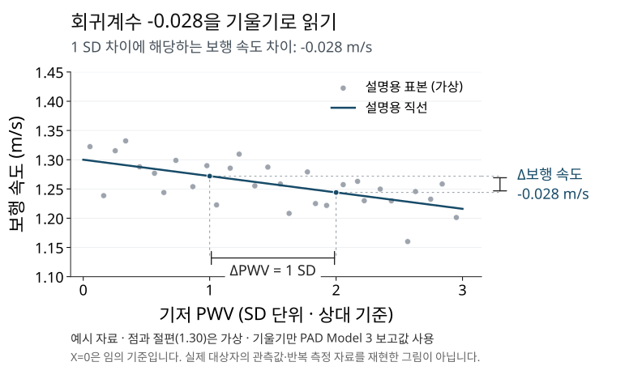
교육용 가상 점·절편 / PAD군 Model 3의 보고 기울기만 반영 PAD군 · Model 3 가로축: 처음의 PWV
세로축: 같은 시점·보정 조건의 보행속도
PWV 차이 = +1SD
보행속도 차이 = −0.028 m/s
Watson et al. (2011), Table 3 p.93 / PDF 4쪽 · 교육용 가상 자료로 계수의 의미 설명
이 페이지는 사용자가 요청한 회귀계수 설명용 예시다. 산점도 점과 절편은 가상이며 논문의 개인별 관측값이나 실제 모형 예측선이 아니다. 실제 보고된 PAD군 Model 3의 PWV 계수 −0.028m/s/SD만 직선의 기울기에 반영했다.
같은 시점과 모형에 포함한 다른 조건이 같을 때, 기저 PWV가 1SD 높은 사람은 보행속도가 0.028m/s 낮게 추정된다는 의미를 가로 1SD·세로 −0.028m/s의 변화량으로 읽는다. PWV와 보행의 인과효과나 같은 사람의 실제 연간 변화라는 뜻으로 확장하지 않는다.
혼합효과모형은 반복 측정의 개인별 출발 수준·시간 기울기 차이를 함께 다룬다. 이 단일 산점도는 그 전체 자료 구조를 재현하지 않고 고정효과 PWV 계수의 조건부 의미를 설명한다. 고정효과라는 말 자체가 PWV가 생리적으로 시간에 따라 변하지 않는다는 뜻은 아니다.
가로축은 상대적인 SD 단위로 표현한다. 전체 코호트 PWV SD가 396cm/s라는 사실은 확인되지만 하위군에 공통 SD를 사용했는지 별도로 재표준화했는지는 보고되지 않아 396cm/s 간격으로 표기하지 않았다. 가상 절편도 실제 Table 3에서 보고한 값이 아니다.
실제 PAD군 계수의 95% CI는 −0.047~−0.010m/s, P=0.003이다. 이 그림에는 가상의 신뢰대나 예측구간을 그리지 않는다. 실제 PWV×시간 검정은 PAD P=0.96으로 수준 차이와 감소율 차이를 구분한다.
그림·표 읽기 해설 화면 단계 1 자료: 점·절편이 가상인 교육용 산점도다. 직선의 기울기는 PAD군 Model 3의 실제 보고 계수 −0.028을 사용했다.
축·열·범례: 가로축의 처음 PWV가 1SD 늘어나는 구간과 직선의 세로 차이 −0.028m/s를 연결한다. 시간은 가로축이 아니다. 같은 시점·보정 조건의 PWV 관계를 설명한다.
관찰 결과: PWV +1SD에 대응하는 보행속도 수준 차이는 −0.028m/s다.
본문과의 연결: Table 3의 PWV 계수가 어떤 가로·세로 차이를 뜻하는지 이해하게 한다.
해석 범위: 실제 참여자 자료·절편·반복 측정 자료 구조·모형 예측선을 재현하지 않는다. PWV를 변화시킨 치료효과로 읽지 않는다.
PWV : 맥파전달속도 · SD : 표준편차 · PAD : Peripheral Arterial Disease · 말초동맥질환 · β : 회귀계수
DISCUSSION
Discussion : 결과의 해석 PAD에서 관찰된 느린 보행과 가능한 설명
01 PAD에서는 높은 PWV와 느린 보행속도의 연관성 유지 ＋ 전체 코호트에서는 충분한 보정 후 독립적 연관성이 없었다. PAD군에서는 고혈압·기타 혈관 위험요인을 보정해도 높은 PWV와 느린 보행속도가 연관됐다.
02 가능한 기전: 대동맥 완충능 저하 + 말초저항 증가 ＋ 대동맥의 완충기능 저하와 PAD의 말초 혈관 저항 증가가 함께 작용하면, 보행 중 하지 근육으로의 혈류 공급을 제한할 가능성이 있다.
03 높은 PWV와 더 빠른 보행속도 감소율의 연관성은 미확인 ＋ PWV×시간은 유의하지 않았다. 처음 이동능력이 높은 표본이었거나, 높은 PWV와 관련된 보행기능 저하가 관찰 시작 전에 이미 진행됐을 수 있다.
04 PWV가 AAI에 더해 기능 평가 정보를 제공할 가능성 ＋ PAD에서 PWV와 느린 보행속도의 연관성은 AAI를 추가 보정한 뒤에도 유지됐다. AAI만으로 설명되지 않는 기능 관련 정보를 PWV가 제공할 가능성이 있다.
05 효과의 상대적 의미: PWV 1SD 차이에 보행속도 0.028 m/s 차이 ＋ PAD에서 기저 PWV가 1SD 높은 경우 보행속도가 0.028 m/s 느렸다. 저자는 기저연령이 2세 높은 경우와 같은 크기의 연관성이라고 설명했다.
06 초기 선정·추적 탈락으로 연관성이 과소평가됐을 가능성 ＋ 처음 기능 제한이 없는 참여자만 포함했고, 만성질환이 있는 참여자가 비무작위적으로 중도탈락했을 수 있어 저자는 연관성이 과소평가됐을 가능성을 제시했다.
Watson et al. (2011), Discussion / Study limitations pp.93–94 · 원문
PAD에서는 높은 PWV와 느린 보행속도의 연관성 유지 전체 코호트에서는 충분한 보정 후 독립적 연관성이 없었다. PAD군에서는 고혈압·기타 혈관 위험요인을 보정해도 높은 PWV와 느린 보행속도가 연관됐다. 군별 유의성의 차이만으로 군 간 차이를 확정할 수는 없다. PWV×PAD 상호작용은 P=0.21이었다.
가능한 기전: 대동맥 완충능 저하 + 말초저항 증가 대동맥의 완충기능 저하와 PAD의 말초 혈관 저항 증가가 함께 작용하면, 보행 중 하지 근육으로의 혈류 공급을 제한할 가능성이 있다. 하지 관류 저하와 이완기 기능 저하는 저자가 제시한 설명이다. 이 연구에서 매개기전을 직접 검정한 것은 아니다.
높은 PWV와 더 빠른 보행속도 감소율의 연관성은 미확인 PWV×시간은 유의하지 않았다. 처음 이동능력이 높은 표본이었거나, 높은 PWV와 관련된 보행기능 저하가 관찰 시작 전에 이미 진행됐을 수 있다. 추적 내내 보행속도 수준이 낮은 것과, 이후 매년 더 빠르게 감소하는 것은 서로 다른 결과다.
PWV가 AAI에 더해 기능 평가 정보를 제공할 가능성 PAD에서 PWV와 느린 보행속도의 연관성은 AAI를 추가 보정한 뒤에도 유지됐다. AAI만으로 설명되지 않는 기능 관련 정보를 PWV가 제공할 가능성이 있다. 예측 정확도나 추가적인 임상 유용성을 직접 평가한 결과는 아니므로, 위험 예측 도구로 확립됐다고 말하지 않는다.
효과의 상대적 의미: PWV 1SD 차이에 보행속도 0.028 m/s 차이 PAD에서 기저 PWV가 1SD 높은 경우 보행속도가 0.028 m/s 느렸다. 저자는 기저연령이 2세 높은 경우와 같은 크기의 연관성이라고 설명했다. 사람 간 보정 속도 차이이며 연간 감소량이 아니다. 이 정도의 차이가 임상적으로 중요한지는 뒤의 Critical Review에서 검토한다.
초기 선정·추적 탈락으로 연관성이 과소평가됐을 가능성 처음 기능 제한이 없는 참여자만 포함했고, 만성질환이 있는 참여자가 비무작위적으로 중도탈락했을 수 있어 저자는 연관성이 과소평가됐을 가능성을 제시했다. 선택과 탈락이 추정치에 미친 방향·크기를 직접 확정한 것은 아니다. 저자의 가능한 해석으로 제시한다.
그림·표 읽기 해설 화면 단계 1 자료: Discussion : 결과의 해석의 6개 핵심 항목을 한 페이지에 정리했다.
축·열·범례: 행을 누르면 해당 설명이 펼쳐지고, 다음 입력으로 항목을 차례로 읽는다. 펼침은 페이지 안에서만 일어난다.
관찰 결과: 항목별로 관찰 결과·가능한 설명·한계를 구분한다.
본문과의 연결: 주논문의 Discussion 및 Study limitations를 발표의 결과 해석과 연결한다.
해석 범위: 일부 항목은 저자의 가설·임상적 시사점이며 직접 검증한 기전이나 중재 효과가 아니다.
해석 항목 pad 자료: PAD에서는 높은 PWV와 느린 보행속도의 연관성 유지
축·열·범례: 전체 코호트에서는 충분한 보정 후 독립적 연관성이 없었다. PAD군에서는 고혈압·기타 혈관 위험요인을 보정해도 높은 PWV와 느린 보행속도가 연관됐다.
관찰 결과: 전체 코호트에서는 충분한 보정 후 독립적 연관성이 없었다. PAD군에서는 고혈압·기타 혈관 위험요인을 보정해도 높은 PWV와 느린 보행속도가 연관됐다.
본문과의 연결: 군별 유의성의 차이만으로 군 간 차이를 확정할 수는 없다. PWV×PAD 상호작용은 P=0.21이었다.
해석 범위: 군별 유의성의 차이만으로 군 간 차이를 확정할 수는 없다. PWV×PAD 상호작용은 P=0.21이었다.
해석 항목 perfusion 자료: 가능한 기전: 대동맥 완충능 저하 + 말초저항 증가
축·열·범례: 대동맥의 완충기능 저하와 PAD의 말초 혈관 저항 증가가 함께 작용하면, 보행 중 하지 근육으로의 혈류 공급을 제한할 가능성이 있다.
관찰 결과: 대동맥의 완충기능 저하와 PAD의 말초 혈관 저항 증가가 함께 작용하면, 보행 중 하지 근육으로의 혈류 공급을 제한할 가능성이 있다.
본문과의 연결: 하지 관류 저하와 이완기 기능 저하는 저자가 제시한 설명이다. 이 연구에서 매개기전을 직접 검정한 것은 아니다.
해석 범위: 하지 관류 저하와 이완기 기능 저하는 저자가 제시한 설명이다. 이 연구에서 매개기전을 직접 검정한 것은 아니다.
해석 항목 decline 자료: 높은 PWV와 더 빠른 보행속도 감소율의 연관성은 미확인
축·열·범례: PWV×시간은 유의하지 않았다. 처음 이동능력이 높은 표본이었거나, 높은 PWV와 관련된 보행기능 저하가 관찰 시작 전에 이미 진행됐을 수 있다.
관찰 결과: PWV×시간은 유의하지 않았다. 처음 이동능력이 높은 표본이었거나, 높은 PWV와 관련된 보행기능 저하가 관찰 시작 전에 이미 진행됐을 수 있다.
본문과의 연결: 추적 내내 보행속도 수준이 낮은 것과, 이후 매년 더 빠르게 감소하는 것은 서로 다른 결과다.
해석 범위: 추적 내내 보행속도 수준이 낮은 것과, 이후 매년 더 빠르게 감소하는 것은 서로 다른 결과다.
해석 항목 aai 자료: PWV가 AAI에 더해 기능 평가 정보를 제공할 가능성
축·열·범례: PAD에서 PWV와 느린 보행속도의 연관성은 AAI를 추가 보정한 뒤에도 유지됐다. AAI만으로 설명되지 않는 기능 관련 정보를 PWV가 제공할 가능성이 있다.
관찰 결과: PAD에서 PWV와 느린 보행속도의 연관성은 AAI를 추가 보정한 뒤에도 유지됐다. AAI만으로 설명되지 않는 기능 관련 정보를 PWV가 제공할 가능성이 있다.
본문과의 연결: 예측 정확도나 추가적인 임상 유용성을 직접 평가한 결과는 아니므로, 위험 예측 도구로 확립됐다고 말하지 않는다.
해석 범위: 예측 정확도나 추가적인 임상 유용성을 직접 평가한 결과는 아니므로, 위험 예측 도구로 확립됐다고 말하지 않는다.
해석 항목 size 자료: 효과의 상대적 의미: PWV 1SD 차이에 보행속도 0.028 m/s 차이
축·열·범례: PAD에서 기저 PWV가 1SD 높은 경우 보행속도가 0.028 m/s 느렸다. 저자는 기저연령이 2세 높은 경우와 같은 크기의 연관성이라고 설명했다.
관찰 결과: PAD에서 기저 PWV가 1SD 높은 경우 보행속도가 0.028 m/s 느렸다. 저자는 기저연령이 2세 높은 경우와 같은 크기의 연관성이라고 설명했다.
본문과의 연결: 사람 간 보정 속도 차이이며 연간 감소량이 아니다. 이 정도의 차이가 임상적으로 중요한지는 뒤의 Critical Review에서 검토한다.
해석 범위: 사람 간 보정 속도 차이이며 연간 감소량이 아니다. 이 정도의 차이가 임상적으로 중요한지는 뒤의 Critical Review에서 검토한다.
해석 항목 selection 자료: 초기 선정·추적 탈락으로 연관성이 과소평가됐을 가능성
축·열·범례: 처음 기능 제한이 없는 참여자만 포함했고, 만성질환이 있는 참여자가 비무작위적으로 중도탈락했을 수 있어 저자는 연관성이 과소평가됐을 가능성을 제시했다.
관찰 결과: 처음 기능 제한이 없는 참여자만 포함했고, 만성질환이 있는 참여자가 비무작위적으로 중도탈락했을 수 있어 저자는 연관성이 과소평가됐을 가능성을 제시했다.
본문과의 연결: 선택과 탈락이 추정치에 미친 방향·크기를 직접 확정한 것은 아니다. 저자의 가능한 해석으로 제시한다.
해석 범위: 선택과 탈락이 추정치에 미친 방향·크기를 직접 확정한 것은 아니다. 저자의 가능한 해석으로 제시한다.
PWV : 맥파전달속도 · PAD : Peripheral Arterial Disease · 말초동맥질환 · AAI : 발목–팔 지수
PWV : 맥파전달속도 · PAD : Peripheral Arterial Disease · 말초동맥질환 · AAI : 발목–팔 지수
PWV : 맥파전달속도 · PAD : Peripheral Arterial Disease · 말초동맥질환 · AAI : 발목–팔 지수
PWV : 맥파전달속도 · PAD : Peripheral Arterial Disease · 말초동맥질환 · AAI : 발목–팔 지수
PWV : 맥파전달속도 · PAD : Peripheral Arterial Disease · 말초동맥질환 · AAI : 발목–팔 지수
PWV : 맥파전달속도 · PAD : Peripheral Arterial Disease · 말초동맥질환 · AAI : 발목–팔 지수
PWV : 맥파전달속도 · PAD : Peripheral Arterial Disease · 말초동맥질환 · AAI : 발목–팔 지수
LIMITATIONS
Limitations : 한계·강점·향후 연구 관찰된 연관성을 어디까지 해석할 수 있는가
01 건강한 고령자의 미세한 기능 변화를 놓칠 수 있음 ＋ 보행속도와 일반적인 하지 수행능력 검사는 기능이 좋은 고령자의 작은 변화를 포착하기 어려울 수 있다. 장시간 보행검사가 더 민감할 가능성이 있다.
02 뇌혈관 이상이 연관성을 매개하는지 평가하지 못함 ＋ 뇌조직·소혈관 상태를 직접 평가할 자료가 없어, 뇌혈관 이상이 PAD에서 동맥 경직도와 느린 보행속도의 연관성을 매개하는지 검정하지 못했다.
03 전체 코호트 분석 이후의 PAD 하위집단 결과: 재현 필요 ＋ 전체 코호트의 사전 계획 분석 이후 PAD 하위집단 분석을 수행했다. PAD에서 관찰된 연관성은 다른 고령자 집단에서도 확인할 필요가 있다.
04 강점: 대규모 지역사회 표본·보정·보행속도 반복 측정 ＋ 대규모 지역사회 기반 표본에서 여러 잠재적 교란요인을 보정했고, 신뢰도·타당도가 확보된 신체기능 지표인 보행속도를 반복 측정했다.
05 핵심 결론: PAD에서 느린 보행과 연관, 전체군 독립적 연관은 미확인 ＋ PAD 참여자에서는 높은 동맥 경직도와 느린 보행속도가 연관됐다. 전체 코호트에서는 보행속도 수준 및 감소율과 독립적인 연관성이 확인되지 않았다.
06 임상적 시사점: 노년기 기능 유지를 위한 혈압 관리 ＋ 고혈압과 더 빠른 보행속도 감소의 연관성은 노년기 신체기능 유지를 위한 혈압 관리의 중요성을 뒷받침한다는 것이 저자의 해석이다.
07 향후 연구: 경직도 감소가 PAD의 관류·보행·장애를 개선하는가? ＋ 동맥 경직도 감소가 PAD의 말초 관류와 보행능력을 개선하고 기능 저하·장애 위험을 줄이는지 평가해야 한다. 혈압 감소 효과와 독립적인지도 검증해야 한다.
Watson et al. (2011), Discussion / Study limitations pp.93–94 · 원문
건강한 고령자의 미세한 기능 변화를 놓칠 수 있음 보행속도와 일반적인 하지 수행능력 검사는 기능이 좋은 고령자의 작은 변화를 포착하기 어려울 수 있다. 장시간 보행검사가 더 민감할 가능성이 있다. 특히 대동맥 경직과 관련된 이완기 기능 저하를 평가할 때의 검사 민감도 문제를 저자가 제시했다.
뇌혈관 이상이 연관성을 매개하는지 평가하지 못함 뇌조직·소혈관 상태를 직접 평가할 자료가 없어, 뇌혈관 이상이 PAD에서 동맥 경직도와 느린 보행속도의 연관성을 매개하는지 검정하지 못했다. DSST 인지검사 자료는 있었고 추가 보정에 사용됐다. 이 한계는 인지 평가 전체의 부재를 뜻하지 않는다.
전체 코호트 분석 이후의 PAD 하위집단 결과: 재현 필요 전체 코호트의 사전 계획 분석 이후 PAD 하위집단 분석을 수행했다. PAD에서 관찰된 연관성은 다른 고령자 집단에서도 확인할 필요가 있다. PWV×PAD 상호작용은 유의하지 않았다. PAD에서 연관성이 특별히 더 강하다는 결론은 신중하게 해석한다.
강점: 대규모 지역사회 표본·보정·보행속도 반복 측정 대규모 지역사회 기반 표본에서 여러 잠재적 교란요인을 보정했고, 신뢰도·타당도가 확보된 신체기능 지표인 보행속도를 반복 측정했다. 반복 측정된 것은 보행속도다. PWV는 기저값 한 번을 사용했으므로 PWV 자체의 장기 변화를 분석한 연구는 아니다.
핵심 결론: PAD에서 느린 보행과 연관, 전체군 독립적 연관은 미확인 PAD 참여자에서는 높은 동맥 경직도와 느린 보행속도가 연관됐다. 전체 코호트에서는 보행속도 수준 및 감소율과 독립적인 연관성이 확인되지 않았다. PAD군에서도 높은 PWV가 이후 더 빠른 감소율과 관련된다는 증거는 확인되지 않았다.
임상적 시사점: 노년기 기능 유지를 위한 혈압 관리 고혈압과 더 빠른 보행속도 감소의 연관성은 노년기 신체기능 유지를 위한 혈압 관리의 중요성을 뒷받침한다는 것이 저자의 해석이다. 이 연구는 관찰연구다. 혈압을 낮추면 보행속도 감소가 예방된다는 치료 효과를 직접 입증하지는 않았다.
향후 연구: 경직도 감소가 PAD의 관류·보행·장애를 개선하는가? 동맥 경직도 감소가 PAD의 말초 관류와 보행능력을 개선하고 기능 저하·장애 위험을 줄이는지 평가해야 한다. 혈압 감소 효과와 독립적인지도 검증해야 한다. 이번 연구의 연관성을 중재 효과로 바꾸어 말하지 않는다. 효과 크기와 임상적 의미를 함께 확인하는 후속 연구가 필요하다.
그림·표 읽기 해설 화면 단계 1 자료: Limitations : 한계·강점·향후 연구의 7개 핵심 항목을 한 페이지에 정리했다.
축·열·범례: 행을 누르면 해당 설명이 펼쳐지고, 다음 입력으로 항목을 차례로 읽는다. 펼침은 페이지 안에서만 일어난다.
관찰 결과: 항목별로 관찰 결과·가능한 설명·한계를 구분한다.
본문과의 연결: 주논문의 Discussion 및 Study limitations를 발표의 결과 해석과 연결한다.
해석 범위: 일부 항목은 저자의 가설·임상적 시사점이며 직접 검증한 기전이나 중재 효과가 아니다.
해석 항목 sensitivity 자료: 건강한 고령자의 미세한 기능 변화를 놓칠 수 있음
축·열·범례: 보행속도와 일반적인 하지 수행능력 검사는 기능이 좋은 고령자의 작은 변화를 포착하기 어려울 수 있다. 장시간 보행검사가 더 민감할 가능성이 있다.
관찰 결과: 보행속도와 일반적인 하지 수행능력 검사는 기능이 좋은 고령자의 작은 변화를 포착하기 어려울 수 있다. 장시간 보행검사가 더 민감할 가능성이 있다.
본문과의 연결: 특히 대동맥 경직과 관련된 이완기 기능 저하를 평가할 때의 검사 민감도 문제를 저자가 제시했다.
해석 범위: 특히 대동맥 경직과 관련된 이완기 기능 저하를 평가할 때의 검사 민감도 문제를 저자가 제시했다.
해석 항목 brain 자료: 뇌혈관 이상이 연관성을 매개하는지 평가하지 못함
축·열·범례: 뇌조직·소혈관 상태를 직접 평가할 자료가 없어, 뇌혈관 이상이 PAD에서 동맥 경직도와 느린 보행속도의 연관성을 매개하는지 검정하지 못했다.
관찰 결과: 뇌조직·소혈관 상태를 직접 평가할 자료가 없어, 뇌혈관 이상이 PAD에서 동맥 경직도와 느린 보행속도의 연관성을 매개하는지 검정하지 못했다.
본문과의 연결: DSST 인지검사 자료는 있었고 추가 보정에 사용됐다. 이 한계는 인지 평가 전체의 부재를 뜻하지 않는다.
해석 범위: DSST 인지검사 자료는 있었고 추가 보정에 사용됐다. 이 한계는 인지 평가 전체의 부재를 뜻하지 않는다.
해석 항목 subgroup 자료: 전체 코호트 분석 이후의 PAD 하위집단 결과: 재현 필요
축·열·범례: 전체 코호트의 사전 계획 분석 이후 PAD 하위집단 분석을 수행했다. PAD에서 관찰된 연관성은 다른 고령자 집단에서도 확인할 필요가 있다.
관찰 결과: 전체 코호트의 사전 계획 분석 이후 PAD 하위집단 분석을 수행했다. PAD에서 관찰된 연관성은 다른 고령자 집단에서도 확인할 필요가 있다.
본문과의 연결: PWV×PAD 상호작용은 유의하지 않았다. PAD에서 연관성이 특별히 더 강하다는 결론은 신중하게 해석한다.
해석 범위: PWV×PAD 상호작용은 유의하지 않았다. PAD에서 연관성이 특별히 더 강하다는 결론은 신중하게 해석한다.
해석 항목 strengths 자료: 강점: 대규모 지역사회 표본·보정·보행속도 반복 측정
축·열·범례: 대규모 지역사회 기반 표본에서 여러 잠재적 교란요인을 보정했고, 신뢰도·타당도가 확보된 신체기능 지표인 보행속도를 반복 측정했다.
관찰 결과: 대규모 지역사회 기반 표본에서 여러 잠재적 교란요인을 보정했고, 신뢰도·타당도가 확보된 신체기능 지표인 보행속도를 반복 측정했다.
본문과의 연결: 반복 측정된 것은 보행속도다. PWV는 기저값 한 번을 사용했으므로 PWV 자체의 장기 변화를 분석한 연구는 아니다.
해석 범위: 반복 측정된 것은 보행속도다. PWV는 기저값 한 번을 사용했으므로 PWV 자체의 장기 변화를 분석한 연구는 아니다.
해석 항목 conclusion 자료: 핵심 결론: PAD에서 느린 보행과 연관, 전체군 독립적 연관은 미확인
축·열·범례: PAD 참여자에서는 높은 동맥 경직도와 느린 보행속도가 연관됐다. 전체 코호트에서는 보행속도 수준 및 감소율과 독립적인 연관성이 확인되지 않았다.
관찰 결과: PAD 참여자에서는 높은 동맥 경직도와 느린 보행속도가 연관됐다. 전체 코호트에서는 보행속도 수준 및 감소율과 독립적인 연관성이 확인되지 않았다.
본문과의 연결: PAD군에서도 높은 PWV가 이후 더 빠른 감소율과 관련된다는 증거는 확인되지 않았다.
해석 범위: PAD군에서도 높은 PWV가 이후 더 빠른 감소율과 관련된다는 증거는 확인되지 않았다.
해석 항목 bp 자료: 임상적 시사점: 노년기 기능 유지를 위한 혈압 관리
축·열·범례: 고혈압과 더 빠른 보행속도 감소의 연관성은 노년기 신체기능 유지를 위한 혈압 관리의 중요성을 뒷받침한다는 것이 저자의 해석이다.
관찰 결과: 고혈압과 더 빠른 보행속도 감소의 연관성은 노년기 신체기능 유지를 위한 혈압 관리의 중요성을 뒷받침한다는 것이 저자의 해석이다.
본문과의 연결: 이 연구는 관찰연구다. 혈압을 낮추면 보행속도 감소가 예방된다는 치료 효과를 직접 입증하지는 않았다.
해석 범위: 이 연구는 관찰연구다. 혈압을 낮추면 보행속도 감소가 예방된다는 치료 효과를 직접 입증하지는 않았다.
해석 항목 future 자료: 향후 연구: 경직도 감소가 PAD의 관류·보행·장애를 개선하는가?
축·열·범례: 동맥 경직도 감소가 PAD의 말초 관류와 보행능력을 개선하고 기능 저하·장애 위험을 줄이는지 평가해야 한다. 혈압 감소 효과와 독립적인지도 검증해야 한다.
관찰 결과: 동맥 경직도 감소가 PAD의 말초 관류와 보행능력을 개선하고 기능 저하·장애 위험을 줄이는지 평가해야 한다. 혈압 감소 효과와 독립적인지도 검증해야 한다.
본문과의 연결: 이번 연구의 연관성을 중재 효과로 바꾸어 말하지 않는다. 효과 크기와 임상적 의미를 함께 확인하는 후속 연구가 필요하다.
해석 범위: 이번 연구의 연관성을 중재 효과로 바꾸어 말하지 않는다. 효과 크기와 임상적 의미를 함께 확인하는 후속 연구가 필요하다.
PAD : Peripheral Arterial Disease · 말초동맥질환
PAD : Peripheral Arterial Disease · 말초동맥질환
PAD : Peripheral Arterial Disease · 말초동맥질환
PAD : Peripheral Arterial Disease · 말초동맥질환
PAD : Peripheral Arterial Disease · 말초동맥질환
PAD : Peripheral Arterial Disease · 말초동맥질환
PAD : Peripheral Arterial Disease · 말초동맥질환
PAD : Peripheral Arterial Disease · 말초동맥질환
CRITICAL REVIEW
Critical Review : 0.028 m/s의 임상적 의미 0.028 m/s ≈ 0.10 km/h: 임상적 중요성을 판단할 추가 결과가 필요
전체 코호트 기저 PWV(평균±SD): 898 ± 396 cm/s
비교 값 해석 PWV 1SD당 사람 간 차이 −0.028 m/s ≈ −0.10 km/h PAD군 Model 3의 보정 속도 수준 차이 시간에 따른 변화 −0.048 m/s/년 PAD군 모형의 기준 조건에서 추정한 연간 변화 개인 내 변화의 참고치 약 0.05 / 0.10 m/s 작은 / 상당한 변화 · 추가문헌 Perera 2006
추가 보고: PWV 절대단위당 차이·PWV의 추가 설명력·환자 체감/기능과의 연결
Watson Table 3 p.93 · Discussion p.94 · 추가: Perera 2006, 개인 내 변화 참고치
전체 코호트의 기저 PWV는 898±396cm/s(평균±SD)다. 이 수치를 강조하고 아래에는 기존 세 행의 편집 비교표를 정적으로 제시한다. 원표 이미지와 비교 요약/원표 전환은 현재 슬라이드에서 제외했다.
단위 환산: 0.028m/s×3.6=0.1008km/h, 약 0.10km/h다. 통계적 유의성과 별도로 환자 체감·보행거리·장애 위험과 연결되는 크기인지 검토해야 한다. 단위 환산이 작게 보인다는 이유만으로 임상적으로 무의미하다고 확정할 수는 없다.
Perera 2006(추가 검토 문헌, PMID 16696738)은 이동장애 노인 근력훈련 자료 100명, 아급성 뇌졸중 자료 100명, 지역사회 노인 자료 492명을 분석하여 개인 내 의미 있는 작은 변화 약 0.05m/s, 상당한 변화 약 0.10m/s라는 초기 참고치를 제시했다. PAD에 특이적인 확정 MCID가 아니며 Watson의 인용문헌 [40] Perera 2005와 다른 논문이다.
Watson의 −0.028m/s는 PWV 1SD 차이에 따른 사람 간 보정 속도 수준의 차이이며 개인의 치료 후 개선량이나 연간 감소량이 아니다. 따라서 개인 내 변화 참고치보다 작다는 이유만으로 임상적 의미를 판정할 수 없다. 저자는 기저 연령 2세 차이와 동등한 연관성 크기로 해석했다.
PAD군 Time 계수 −0.048m/s/년은 포함된 공변량의 기준·중심화 조건에서 추정한 관찰 추적의 시간 기울기다. 무처치 대조군을 통해 자연 경과만 분리한 값이 아니므로 아무것도 하지 않으면 반드시 그만큼 감소한다고 단정하지 않는다. −0.028m/s와는 단위·질문이 다르므로 두 값을 나누어 몇 개월 노화 같은 값으로 환산하지 않는다.
회귀계수와 95% CI 자체가 이미 효과 크기와 불확실성의 보고다. 이 검토는 효과 크기가 전혀 제시되지 않았다는 비판이 아니라 임상적 중요성을 더 잘 판단할 결과를 요청한다. 예를 들어 절대 PWV 단위당 보행속도 차이와 CI, PWV의 추가 설명력, 환자 체감·보행거리·장애 발생과의 연결을 제시하면 해석에 도움이 된다. 추가 설명력은 같은 표본·공변량·무작위효과 구조에서 PWV 포함 전후를 비교해야 하며, 이 자료만으로 새 지표를 계산하지 않는다.
전체 PWV SD 396cm/s가 평균 898cm/s에 비해 크다는 사실만으로 보행속도 계수 −0.028m/s가 작거나 무의미하다고 판정할 수는 없다. PWV와 보행속도는 서로 다른 변수·단위다. 검토 질문은 PWV 1SD 차이에 대응하는 보행속도 수준 차이가 환자에게 얼마나 중요한가이다. 하위군의 절대 PWV 단위당 환산은 표준화 기준이 확인되어야 가능하다.
전체 코호트 PWV는 898±396cm/s로 보고되었다. 396cm/s가 전체 표본의 SD라는 점은 확인되지만, PAD·비PAD 하위군 계수에 공통 396을 사용했는지 군별 SD로 재표준화했는지는 명시되지 않았다. 하위군 결과는 PWV 1SD당 관계로 표현하고, 396cm/s당 관계로 확정하지 않는다.
그림·표 읽기 해설 화면 단계 1 자료: 전체 코호트 PWV 평균±SD를 강조한 뒤, 기존 세 행의 편집 비교표를 항상 보여주는 페이지다. 원표 이미지는 표시하지 않는다.
축·열·범례: 898±396cm/s는 전체 코호트의 PWV 평균과 SD다. 아래 첫 행 −0.028m/s는 PAD군의 사람 간 보정 속도 차이, 둘째 −0.048m/s/년은 시간 기울기, 셋째는 Perera 2006의 개인 내 변화 참고치다. 서로 다른 비교를 구분한다.
관찰 결과: 통계적 유의성과 별도로 임상적 중요성을 판단할 추가 결과가 있으면 해석에 도움이 된다.
본문과의 연결: 기존 β와 CI를 효과 크기 보고로 인정하면서, 절대 단위·추가 설명력·환자 기능과의 연결을 통해 임상적 해석을 보완하도록 제안한다.
해석 범위: −.028은 연간 감소율이나 PWV를 낮춘 치료 효과가 아니다. “2년 빨리 늙었다”는 뜻도 아니다. .1m/s 기준이 모든 인구·검사·기간에서 확정된 단일 기준이라고 확대하지 않는다.
PWV : 맥파전달속도 · SD : 표준편차 · CI : 신뢰구간 · PAD : Peripheral Arterial Disease · 말초동맥질환 · β : 회귀계수
DISCUSSION
Critical Review : 하위집단과 상호작용 with / without PAD: 군별 연관성과 군 간 차이는 다른 질문
주요 질문과 결론: 군별 유의성 차이가 군 간 차이인가? 원래 주분석은 전체 코호트의 PWV–보행속도 연관성이다. PAD 유무에 따라 이 관계가 다른지 묻는 직접 검정은 PWV×PAD이며, P=0.21로 유의하지 않았다.
PAD군 P=0.003·비PAD군 P=0.804만으로 PAD에서 더 강한 연관성을 확정할 수 없다. 전체군의 보정 후 비유의 결과와 하위집단 분석이라는 맥락을 함께 평가한다.
Watson et al. (2011), American Journal of Hypertension 24:90–95 · 원문
이 페이지는 하나의 군에서 유의하고 다른 군에서 유의하지 않다는 사실만으로 두 군의 연관성이 서로 다르다고 확정할 수 없다는 점을 다룬다. Results p.92 오른쪽 단은 PWV×PAD 상호작용 P=.21을 본문에만 보고한다. Table3의 두 군 개별 PWV계수 P값은 각 군 안에서 PWV연관성이0인지 검정한 값이며 군 간 차이의 P값이 아니다. PWV×Time은 높은 기저PWV가 이후 더 큰 연간 보행 감소와 관련되는지를 묻고, 전체군 .66/PAD군 .96으로 유의하지 않았다. 이것과 PAD×Time은 다른 항이다. 표의 Time계수−.048(PAD) 대−.037(비PAD)은 각 보정모형의 시간 추세이며, 논문은 PAD×Time의 직접 비교 검정 결과를 제시하지 않는다. 저자는 전체 HealthABC 코호트의 사전 계획 분석 후 하위집단 분석을 했으며 다른 노인집단에서 재현이 필요하다고 인정한다(p.94). 따라서 논의의 clinically important synergistic relationship은 탐색적 해석으로 읽고 통계적으로 입증된 상승작용으로 표현하지 않는다.
주장과 근거의 범위 : Watson의 PAD·비PAD 계수, PWV×PAD(P=.21), PWV×Time(전체 P=.66, PAD P=.96)라는 서로 다른 질문의 결과. PAD군에 더 강한 PWV 효과가 확정됐다는 주장, 표의 Time 계수만으로 PAD군이 더 빠르게 감소한다는 직접 군 비교. 개별 군의 P값을 상호작용 P값 대신 쓰면 잘못된 비교가 된다. PWV×PAD와 PAD×Time 역시 서로 다르다.
제목에with/withoutPAD가 있다고 해서PAD군과비PAD군의 평균보행속도 비교가 반드시 주분석이어야 하는 것은 아니다. Methods의 사전 질문은 전체코호트의 기저PWV와 반복보행속도의 연관성이었다. 그러나 결론을 PAD의 특수한 취약성 또는 PWV연관성의 군차이로 확장하려면 PWV×PAD 검정을 우선 평가해야 한다. 연구자는 이 검정을 수행했고 결과는P=.21이었다. 따라서 군 간 분석을 전혀 안 했다는 비판도 부정확하다. 군별P의 유의/비유의 차이와 직접 상호작용 결과를 혼동하는 결론의 강도를 비판한다. 필요한 것은 단순군평균차이가 아니라 PWV–보행속도 기울기의 군간차이와 그 신뢰구간이다. 이 논문은 상호작용P값만 본문에 제시하며 계수와95%CI를 제시하지 않아 차이 추정치의 정밀도 평가가 제한된다.
그림·표 읽기 해설 화면 단계 1 자료: 주요 질문과 결론: 군별 유의성 차이가 군 간 차이인가?
축·열·범례: 원래 주분석은 전체 코호트의 PWV–보행속도 연관성이다. PAD 유무에 따라 이 관계가 다른지 묻는 직접 검정은 PWV×PAD이며, P=0.21로 유의하지 않았다.
관찰 결과: PWV×PAD P=.21로 군간연관성 차이는 통계적으로 확인되지 않았다.
본문과의 연결: PAD군 P=0.003·비PAD군 P=0.804만으로 PAD에서 더 강한 연관성을 확정할 수 없다. 전체군의 보정 후 비유의 결과와 하위집단 분석이라는 맥락을 함께 평가한다.
해석 범위: 군간검정을 전혀 하지 않았다는 비판이 아니다. 시행한 상호작용 검정의 비유의 결과에 맞추어 PAD특이적 결론을 제한해야 한다.
PWV : 맥파전달속도 · PAD : Peripheral Arterial Disease · 말초동맥질환 · P : 유의확률
감사합니다 Q&A
발표 종료. 질문에 맞춰 원표, 통계식, 인용문헌 원문을 다시 확인한다.
그림·표 읽기 해설 화면 단계 1 자료: 발표 마무리와 질문 페이지이다.
축·열·범례: 전체보기에서 질문과 관련된 표·그림으로 돌아갈 수 있다.
관찰 결과: 새로운 결과를 추가하지 않는다.
본문과의 연결: 질문을 주논문의 실제 근거와 연결하여 확인할 수 있게 한다.
ABL : 응용생체역학 연구실
APPENDIX
Appendix : PAD 평가 환자의 보행 수행 PAD 평가 환자에서도 높은 baPWV는 낮은 보행 수행과 관련됐다.
[24] Figure 1 · 저자원고/PDF 9쪽; 같은 PMC 원그림 고해상도 파일 미완주군의 baPWV 상자가 더 위에 있다. 높은 경직도와 낮은 보행 수행이 함께 관찰됐다.
[24] Figure 1 · 저자원고/PDF 9쪽; 같은 PMC 원그림 고해상도 파일 · 원문
Watson은 Ref.24를 자신의 PAD군 결과와 일치하는 선행 근거로 인용한다(p.93). 원 논문은 PAD 평가를 위해 의뢰된 114명으로, Table 1에서 실제 PAD 환자는 76명이며 전체가 PAD인 것은 아니다. 그림의 y축은 상완–발목 PWV(baPWV, m/s), x축은 최대 5분 트레드밀 검사의 완주 여부이다. 완주 75명, 미완주 39명이며 미완주군의 baPWV가 높았다(P=.008). 원문의 군 평균은 20.36±5.54 대 17.65±3.59 m/s이다. 이는 횡단 비교이므로 경직도를 낮추면 보행이 개선된다는 치료 효과를 의미하지 않는다. 보행거리 AFT 모형의 log baPWV 계수나 검사 중단 Cox 모형의 계수는 Watson의 m/s당 보행 속도 회귀계수와 같은 단위가 아니다. 원고 내 일부 하위 표본수 표기가 불일치하므로 본 슬라이드에는 Figure 1에 직접 제시된 75/39만 쓴다. 원문 확인: 저자원고 PDF 3–4쪽 및 Figure 1(PDF 9쪽).
인용문헌: [24]
원문 주장과 도판의 관계 : PAD 평가 의뢰자 114명에서 5분 트레드밀 미완주군(n=39)의 baPWV 분포가 완주군(n=75)보다 높다는 비보정 군 비교(P=.008). Watson 참여자의 보행속도 추적, PWV 감소 치료 효과, PAD의 조절효과 또는 매개효과. 전체 114명을 모두 PAD 환자라 하거나 baPWV를 대동맥 PWV와 동일한 측정으로 표시하면 부정확하다.
그림·표 읽기 해설 화면 단계 1 자료: Ref.24 Figure 1은 PAD 평가를 위해 의뢰된 114명을 5분 트레드밀 완주 Yes(75명)와 미완주 No(39명)로 나눈 상자그림이다. 한 상자는 여러 사람의 baPWV 분포를 요약하며, 개인 한 명의 전후 변화를 그린 선이 아니다.
축·열·범례: 가로축은 검사 완주 여부이고 세로축은 baPWV(m/s)이다. 오른쪽 No군의 상자와 가운데 선이 왼쪽 Yes군보다 얼마나 위에 있는지 먼저 본다. 상자와 수염은 분포의 퍼짐을 요약하지만, 제시된 원캡션은 수염의 정확한 범위를 정의하지 않아 최소·최댓값이라고 단정하지 않는다. P=.008은 두 군 차이에 대한 검정 결과이며 차이의 크기나 치료 성공률이 아니다.
관찰 결과: 트레드밀 미완주군에서 baPWV가 더 높았다(P=.008). 이는 걷는 수행이 낮은 사람에게 동맥 경직 지표도 높은 방향이라는 관찰이다.
본문과의 연결: Watson의 PAD군에서 높은 기저 대동맥 PWV와 낮은 보행속도가 관련됐다는 결과와 방향이 일치하는 별도 표본의 근거다. 즉 “혈관 경직과 보행 수행의 관련성”을 뒷받침한다.
해석 범위: baPWV는 Watson의 대동맥 PWV와 측정 구간이 다르고, 트레드밀 완주는 20m 평상시 속도와 다른 결과다. 전체 114명이 모두 PAD 확진자는 아니다. 이 횡단 비교로 PWV를 낮추면 보행이 개선된다는 치료 효과를 말할 수 없다.
baPWV : 상완–발목 맥파전달속도 · PAD : Peripheral Arterial Disease · 말초동맥질환 · P : 유의확률 · n : 대상자 또는 관측치 수
APPENDIX
Appendix : 대동맥 경직과 이완기 기능 높은 PWV와 낮은 E′·높은 E/E′가 함께 관찰됐다. 보행 저하를 매개했는지는 검정하지 않았다.
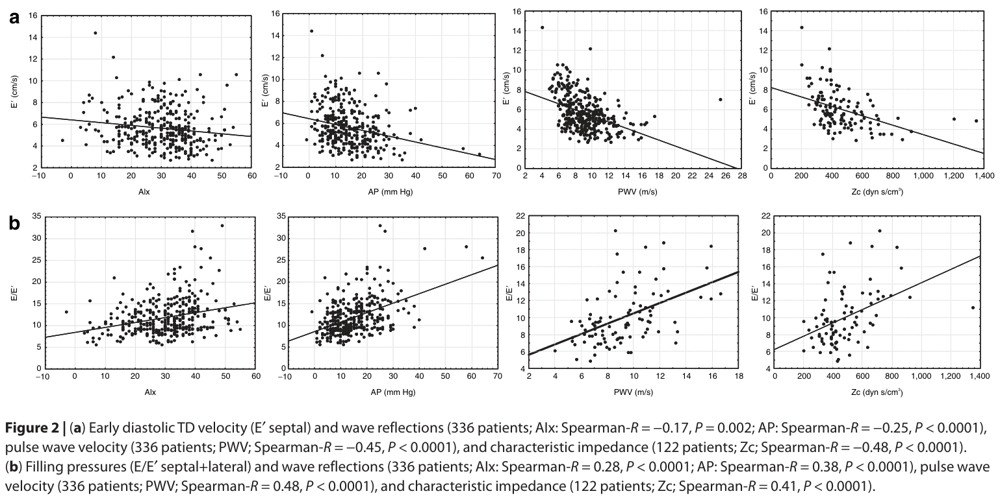
[23] Figure 2 · 출판p.1198; PDF5쪽 PWV가 높을수록 위쪽 E′는 낮고 아래쪽 E/E′는 높다. 이는 비보정 관계이며 Watson의 매개효과 검정은 아니다.
[23] Figure 2 · 출판p.1198; PDF5쪽 · 원문
Ref.23 Figure 2의 위쪽은 조직도플러 초기 이완기 속도 E′(cm/s), 아래쪽은 추정 충만압 E/E′와 혈관지표의 관계이다. PWV 패널의 x축은 PWV(m/s)이다. 상단 septal E′ 분석은 336명이고 PWV와 Spearman r=−.45(P<.0001)이다. 초록의 septal+lateral E′ r=−.64는 별도 96명 분석이므로 혼합하지 않는다. Table 3에서 나이·성별·관상동맥질환을 보정하면 PWV–septal E′의 계수 −.08은 유의하지 않지만, E/E′의 계수 .34(P<.01)와 LVEDP의 .69(P<.0001)는 남는다. Figure 2b 캡션과 Table 2 각주의 표본수도 완전히 일치하지 않는다. 따라서 원도판은 생리학적 가능성을 이해하는 자료로 제시하고 모든 이완기 지표가 보정 후 독립적으로 관련된다고 요약하지 않는다. Watson의 PWV–보행 연관성을 심장 기능이 매개했다는 분석은 보고되지 않았다. 원문: Ref.23 PDF 4–5쪽 / pp.1197–1198; Watson p.93.
인용문헌: [23]
원문 주장과 도판의 관계 : Ref.23 Figure 2의 PWV–septal E′ 음의 비보정 관계와 PWV–E/E′ 양의 비보정 관계. 모든 이완기 지표의 독립 연관성, Watson에서 심장 기능이 보행 저하를 매개했다는 결론. 현재 8개 패널 중 PWV는 세 번째 열의 두 패널뿐이다. 전체를 작게 표시하면 AIx·AP·Zc와 PWV를 혼동하기 쉽다.
그림·표 읽기 해설 화면 단계 1 자료: Ref.23 Figure 2는 혈관 지표와 심장 이완기 지표를 한 번에 보여주는 산점도다. 각 점은 해당 변수의 자료를 가진 사람 한 명을 나타내고, 직선은 관측 관계의 방향을 요약한다. 위쪽 a행의 결과는 E′(cm/s), 아래쪽 b행은 단위 없는 E/E′이다.
축·열·범례: 세 번째 열을 먼저 찾는다. 그 열의 가로축 PWV(m/s)가 오른쪽으로 갈수록 위쪽 선은 내려가고 아래쪽 선은 올라간다. 낮은 E′는 이완 움직임이 느린 방향, 높은 E/E′는 충만압이 높은 방향이다. 다른 열은 AIx, AP(mmHg), Zc를 가로축으로 쓰므로 PWV와 섞지 않는다. 원캡션의 Spearman r는 상관계수이며, 선의 m/s당 회귀계수와 다르다.
관찰 결과: 위쪽 septal E′와 PWV의 비보정 Spearman r는 −.45이다. E/E′와는 양의 관계가 보인다. 나이·성별·관상동맥질환 보정 후에는 PWV–E′ 관계가 유의하지 않았고, E/E′ 등 일부 다른 지표의 관계는 남았다.
본문과의 연결: Watson이 제안한 “대동맥 경직과 이완기 기능장애가 이동능력에 연결될 수 있다”는 생리학적 가능성에 근거를 보탠다. 높은 경직도와 심장 이완기 지표의 관계를 실제 다른 환자 자료에서 보여주기 때문이다.
해석 범위: 그림은 보정 전 산점도이므로 모든 관계가 나이 등과 독립적이라는 뜻이 아니다. 위·아래 분석의 측정법과 표본이 다르며 원캡션과 표의 일부 표본수도 일치하지 않는다. Watson은 이완기 기능을 측정하지 않아 이 경로가 보행속도를 매개했는지는 검정하지 못했다.
PWV : 맥파전달속도 · E′ : 초기 이완기 승모판륜 조직도플러 속도 · E/E′ : E와 E′의 비 · AIx : 증강지수 · AP : 증강압 · Zc : 대동맥 특성 임피던스 · E : 초기 이완기 승모판 유입 혈류속도r : 상관계수
APPENDIX
Appendix : 뇌 소혈관·백질 병변 백질 병변과 이후 보행 변화의 관찰적 연관성 [27–29]
Figure 1 Table 3
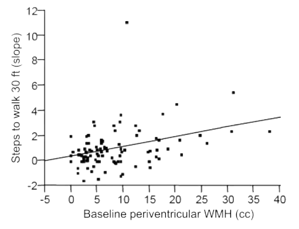
[28] Figure 1 · 기저 WMH와 이후 보행 변화 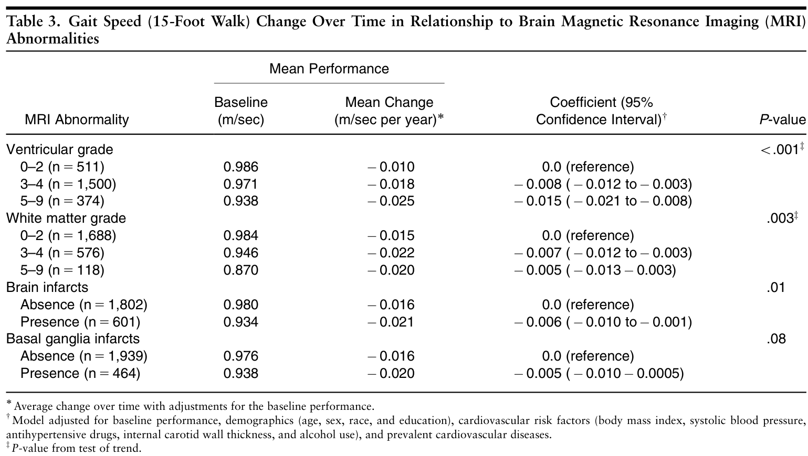
[27] Table 3 · 인쇄 652쪽 / PDF 4쪽 기저 PVWMH가 많을수록 이후 30ft 보행의 걸음수가 더 빠르게 늘었다. 세로축은 속도(m/s)가 아니라 걸음수의 변화율이다.
왼쪽은 MRI 범주, 가운데는 보행속도와 연간 변화, 오른쪽은 기준군과의 보정 차이다. 중증 WMH의 신뢰구간은 0을 포함한다.
[28] Figure 1 · 인쇄 111쪽 / PDF 5쪽 | [27] Table 3 · 인쇄 652쪽 / PDF 4쪽 · 원문
Watson은 뇌 미세혈관 손상과 이완기 기능 저하를 대동맥 경직의 잠재 기능 결과로 논의한다(pp.93–94). Ref.30은 새로운 보행 추적 코호트가 아니라 영상–병리 관계를 종합한 종설이다. Figure 3은 76세 알츠하이머병 환자의 MRI와 같은 부위 trichrome 조직염색을 보여주며 심한 정맥 콜라겐증을 설명한다. 이 한 사례를 PAD 환자의 동맥성 허혈 또는 Watson 표본의 MRI로 설명하면 안 된다. Ref.27은 기능이 양호한 노인 2,450명의 관찰 추적에서 MRI 이상과 기능 저하를 보았으나 백질고신호의 연관성은 중증도·보정 수준에 따라 달랐다. Ref.28은 WMH 진행과 운동·인지 변화, Ref.29는 MRI 병변과 균형·보행의 관련성을 다루며, Ref.31은 수축기혈압과 백질 병변의 연관성을 제공한다. Watson에서 뇌혈관질환 병력이나 DSST를 추가 보정해도 PAD군 계수가 크게 변하지 않았다는 결과만으로 뇌 소혈관 경로가 배제되거나 입증되지는 않는다. 원문: Ref.30 S50–S51, Ref.27 p.652, Watson p.94.
인용문헌: [27], [28], [29], [30], [31]
원문 주장과 도판의 관계 : 새 주도판 Ref.28 Figure 1은 기저 뇌실주위 WMH 부피와 이후 30ft 보행 걸음수 변화율의 관계를 보여준다. 보조 Ref.27 Table 3은 MRI 범주별 보정 연간 보행속도 변화를 보여준다. Watson에서의 PWV→백질 병변→보행 저하 매개효과나 치료 인과. 기존 Ref.30 Figure 3은 76세 알츠하이머병 환자의 MRI·정맥 콜라겐증 사례이다. 보행 변화나 혈압 효과를 그린 자료가 아니므로 현재 주장의 주도판으로는 덜 직접적이다.
그림·표 읽기 해설 화면 단계 1 자료: Ref.28 Figure 1은 기초 시점의 뇌실주위 백질 병변 부피와 이후 보행 수행 변화의 산점도다. 현재 보이는 SVG는 원도판의 그림 영역을 선택해서 보여주는 것으로, 새 가상자료를 그린 그래프가 아니다.
축·열·범례: 가로축 Baseline periventricular WMH(cc)는 연구 시작 때의 병변 부피다. 세로축 Steps to walk 30ft(slope)는 같은 30ft 거리를 걷는 데 필요한 걸음수가 시간에 따라 늘거나 줄어드는 기울기다. 0 위쪽은 걸음수가 늘어나는 방향이고 아래쪽은 줄어드는 방향이다. 점과 직선이 오른쪽 위로 향하므로 병변이 많은 사람에게 더 큰 걸음수 증가가 보이는지 읽는다. 세로축 숫자를 m/s 또는 보행시간 초로 읽으면 안 된다.
관찰 결과: 나이와 두개강내 부피를 고려한 관계는 R²=.13, P=.0075로 보고됐다. 병변량이 큰 사람에게 이후 걸음수 변화가 더 나쁜 방향이었다는 결과이며, R²=.13은 13%의 사람이 악화됐다는 뜻이 아니다.
본문과의 연결: Watson이 제안한 뇌 미세혈관·백질 경로에서 “백질 병변과 보행 변화가 관련될 수 있다”는 연결을 지지한다. 실제 병변 부피와 추적 보행 변화가 함께 분석됐기 때문이다.
해석 범위: 가로축은 병변의 증가율이 아니라 기저 부피다. 걸음수 증가는 보행속도의 연간 감소와 같은 양이 아니며, 이 자료가 PWV→백질 병변→보행 저하의 매개를 검정한 것은 아니다. Watson에는 뇌영상 자료가 없었다.
화면 단계 2 자료: Ref.27 Table 3은 MRI 이상을 뇌실 등급·백질 등급·뇌경색 유무 등으로 나눈 뒤 15ft 보행속도의 수준과 연간 변화를 비교한 표다. 현재 화면에서는 산점도가 원표로 전환된다.
축·열·범례: 왼쪽 MRI Abnormality에서 어떤 병변 범주인지 먼저 정한다. Baseline은 기저속도(m/s), Mean Change는 기저 수행을 고려한 평균 연간 변화(m/s/년)다. Coefficient(95% CI)는 공변량을 추가 보정한 뒤 그 범주의 연간 변화가 기준 범주보다 얼마나 다른지를 뜻한다. 백질 등급 0–2의 coefficient=0은 보행이 전혀 줄지 않았다는 뜻이 아니라 “비교의 기준”이라는 뜻이다. 그 옆 기저 보정 Mean Change는 −.015m/s/년이다.
관찰 결과: 백질 등급 3–4의 보정 계수는 −.007(95% CI −.012~−.003)m/s/년이지만, 5–9는 −.005(−.013~.003)로 0을 포함한다. 따라서 백질 병변이 심해질수록 모든 단계에서 일관되게 더 빠른 감소를 보였다고 말하면 안 된다. 오른쪽 백질 P=.003은 등급 추세 검정이며 개별 범주의 신뢰구간도 함께 읽어야 한다.
본문과의 연결: MRI 이상과 추적 보행 변화의 연관성을 실제 보정 분석으로 확인했다는 점에서 Watson의 후보 뇌 경로를 보충한다. 특히 기저속도와 이후 변화, 기준군 대비 변화 차이를 구분해 보여준다.
해석 범위: 다른 코호트의 15ft 보행 자료이며 Watson의 20m 보행과 다르다. 중증 WMH의 비유의 계수와 보정 수준을 생략하면 과장된다. 이 표가 대동맥 경직의 뇌 매개효과나 병변 치료의 효과를 증명하지는 않는다.
WMH : 백질 고신호강도 병변 · PVWMH : 뇌실주위 백질 고신호강도 병변 · MRI : 자기공명영상 · CI : 신뢰구간 · R² : 결정계수 · ICV : 두개강내 부피 · P : 유의확률
WMH : 백질 고신호강도 병변 · PVWMH : 뇌실주위 백질 고신호강도 병변 · MRI : 자기공명영상 · CI : 신뢰구간 · R² : 결정계수 · β : 회귀계수 · P : 유의확률 · n : 대상자 또는 관측치 수
APPENDIX
Appendix : 고혈압과 기능 저하 고혈압은 이후 더 큰 기능 저하와 관련됐다.
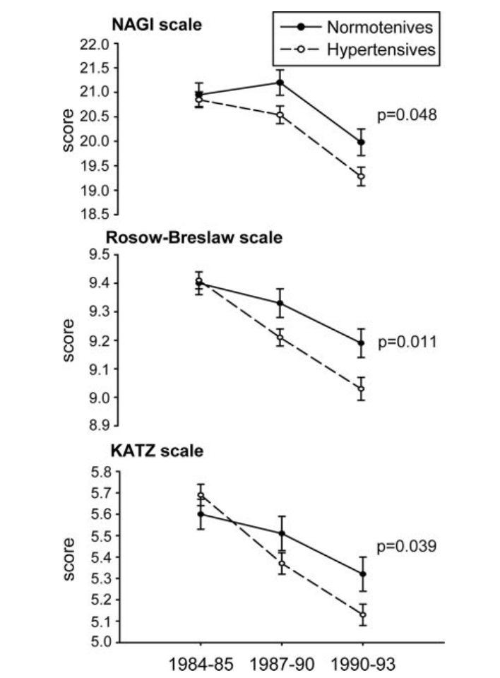
[26] Figure 1 · PDF 4쪽 / p.1029 실선 정상혈압군보다 점선 고혈압군의 기능점수가 더 내려간다. 각 P값은 두 군의 변화율 차이를 검정한다.
[26] Figure 1 · PDF 4쪽 / p.1029 · 원문
Watson p.92는 고혈압×시간 계수가 연간 −.003 m/s로 유의하다고 보고하며 p.94는 이를 혈압 관리와 기능 유지의 임상적 맥락에서 해석한다. Ref.26의 Figure 1에서 y축은 보행 속도가 아니라 Nagi, Rosow–Breslaw, Katz의 기능척도 점수이고 x축은 조사 기간이다. 실선은 정상혈압군, 점선은 고혈압군이며 점수가 내려가는 방향이 기능 악화이다. Charleston Heart Study 999명(평균 68.5세)의 관찰 자료로, 고혈압의 새 장애 위험은 보정 후 각 척도에서 HR 약1.28–1.30이었다(Table 3). 혈압 상승과 기능 저하의 연관성이 있다는 결과와 항고혈압 치료가 장애를 예방한다는 중재 효과는 구분한다. Ref.31의 높은 수축기혈압–백질 병변 관계는 잠재 기전의 다른 관찰 근거이다. Watson에서 혈압을 보정한 후 PWV 계수가 작아졌다는 사실은 정식 매개효과 분석과 같지 않다. 원문: Ref.26 PDF4–5쪽/pp.1029–1030; Watson pp.92,94.
인용문헌: [26], [31]
원문 주장과 도판의 관계 : Ref.26 Figure 1에서 고혈압군의 Nagi·Rosow–Breslaw·Katz 기능척도 저하가 정상혈압군보다 크다. 항고혈압 치료가 장애를 예방했다는 무작위 중재 효과 또는 이 그림의 점수 차이를 m/s로 해석하는 것. 현재 원도판 y축은 기능척도 점수이며 gait speed가 아니다. 패널마다 점수 범위도 다르다.
그림·표 읽기 해설 화면 단계 1 자료: Ref.26 Figure 1은 서로 다른 세 기능척도(Nagi, Rosow–Breslaw, Katz)의 보정 평균을 세 조사 시점에 표시한 그림이다. 위·가운데·아래 패널은 같은 단위를 공유하는 세 반복 그림이 아니라 서로 다른 척도다.
축·열·범례: 가로축 1984–85, 1987–90, 1990–93은 조사 시점이며 세로축 score는 기능점수다. 실선·채운 점은 정상혈압군, 점선·빈 점은 고혈압군이다. 이 그림에서는 점수가 내려갈수록 기능이 나빠지는 방향이다. 두 선이 시작점에서 얼마나 다른지만 보지 말고 시간이 흐를 때 어느 선이 더 크게 내려가는지 본다. 각 P값은 보정 혼합모형에서 두 군의 변화율이 같은지 검정한 것이며, 마지막 시점의 단순 t검정값이 아니다.
관찰 결과: Nagi P=.048, Rosow–Breslaw P=.011, Katz P=.039로 모두 .05보다 작다. 이 표본에서는 고혈압군의 더 큰 기능 저하가 관찰됐다. 패널별 점수 범위가 달라 세 기울기의 수치 크기를 서로 직접 비교하지 않는다.
본문과의 연결: Watson에서 고혈압×시간 계수 −.003m/s/년이 유의했다는 결과와 같은 방향의 종단 관찰 근거다. 혈압과 기능 저하를 연결하는 Discussion의 문장을 다른 연구의 실제 추적 자료가 뒷받침한다.
해석 범위: Ref.26의 기능척도는 Watson의 보행속도와 다르다. 이 자료는 고혈압 치료를 무작위 배정한 시험이 아니므로 혈압을 낮추면 이만큼 기능 저하가 예방된다는 치료 효과는 아니다. 오차막대를 이 화면의 설명만으로 95% CI라고 단정하지 않는다.
BP : 혈압 · SBP : 수축기혈압 · P : 유의확률 · β : 회귀계수 · BMI : 체질량지수
APPENDIX
Appendix : 염증·산화 스트레스의 후보 경로 IL-6가 높을수록 보행시간이 길고 SPPB·악력이 낮았다. Watson의 염증 매개효과는 추정하지 않았다.
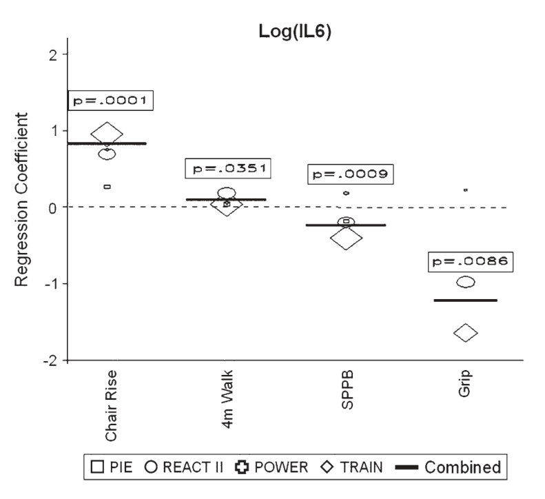
[32] Figure 2 · PDF 4쪽 / p.458 보행·의자 시간은 +, SPPB·악력은 −가 나쁜 수행 방향이다. 검은 선은 네 연구를 합친 회귀계수다.
[32] Figure 2 · PDF 4쪽 / p.458 · 원문
Ref.32 Figure 2는 네 연구의 log(IL-6)와 기능지표 회귀계수를 함께 보여준다. 4 m Walk는 보행 속도가 아니라 보행시간이므로 양의 계수는 느린 수행 방향이며, SPPB와 악력의 음의 계수도 나쁜 수행 방향이다. 이를 같은 단위의 효과크기로 직접 비교하지 않는다. Table 3 Model 1에서 log IL-6 1SD 증가는 악력 −1.22 kg, SPPB −.23점, 보행시간 +.10초, 의자 일어나기 +.83초와 관련되었다. Ref.33에서도 IL-6와 수행의 관계가 남았으나 CRP의 연속 수행점수 회귀는 완전 보정 후 유의하지 않았다. Ref.34는 종설이며 재수록한 선행 연구의 효과를 새로 추정한 결과가 아니다. Ref.35는 여성의 protein carbonyl과 장애 발생을 보았고, IL-6 추가 보정 후 장애 HR의 CI는 1을 포함했다. Ref.38에서 AAI와 CRP·IL-6·TNF-α의 상관이 없었다는 결과가 Watson의 염증 논의에 인용되지만, 이것은 PWV–보행 관계의 염증 매개가 없음을 입증하지 않는다. 원문: Ref.32 p.458–459; Ref.33 p.245–246; Ref.35 저자원고 Tables2–3; Ref.38 p.542.
인용문헌: [32], [33], [34], [35], [38]
원문 주장과 도판의 관계 : Ref.32 Figure 2는 log(IL-6) 1SD 증가와 의자 일어나기 시간·4m 보행시간·SPPB·악력의 회귀계수를 보여준다. CRP 자체의 도판 결과, 산화 스트레스 도판 결과, 염증 감소 치료 효과 또는 Watson에서의 매개효과. 현재 visible의 “IL-6·CRP”는 그림보다 넓다. 현재 그림의 제목은 Log(IL6)이며 CRP를 표시하지 않는다. 4m Walk의 양의 계수는 속도 증가가 아니라 시간 증가, 즉 수행 악화이다.
그림·표 읽기 해설 화면 단계 1 자료: Ref.32 Figure 2는 log(IL-6)가 1SD 더 높은 사람에게 각 신체 수행이 얼마나 다른지를 추정한 회귀계수 그림이다. 가로축은 의자 일어나기·4m 보행·SPPB·악력이라는 서로 다른 결과이고, 세로축은 각 결과의 회귀계수다. 같은 사람의 추적 변화 궤적은 아니다.
축·열·범례: 가운데 점선 0은 IL-6와 결과의 선형 연관성이 0인 기준이다. 위쪽 양수와 아래쪽 음수를 확인한 뒤 결과의 단위를 붙인다. Chair Rise와 4m Walk는 소요시간(초)이므로 양수가 느린 수행이고, SPPB 점수와 Grip(kg)은 음수가 나쁜 수행이다. 사각형·원·십자·마름모는 각각 PIE·REACT II·POWER·TRAIN 연구, 굵은 가로 검은 선은 통합 추정치다. P값은 통합 계수=0을 검정하며 개별 연구의 P값이 아니다.
관찰 결과: IL-6가 높을수록 두 시간은 길고 SPPB·악력은 낮은 방향이었다. 나이·성별·인종을 보정했고 통합분석은 연구도 고려했다. 초·점수·kg가 섞였으므로 가장 큰 계수 막대를 가장 강한 생물학적 효과라고 비교하면 안 된다.
본문과의 연결: Watson이 염증을 신체 기능과 연결되는 후보 경로로 제안하는 데 관찰 근거를 더한다. 염증 지표와 기능이 실제로 관련됐다는 자료이기 때문이다.
해석 범위: 현재 그림은 IL-6 그림이며 CRP·산화 스트레스의 결과를 직접 표시하지 않는다. IL-6가 기능 저하의 원인이라는 결론이나 Watson의 PWV–보행 관계를 염증이 매개했다는 결과는 아니다. 개별 연구 기호에 신뢰구간 막대가 따로 그려진 그림으로 설명하지 않는다.
IL-6 : 인터루킨-6 · SPPB : 간편 신체수행검사 · SD : 표준편차 · CRP : C반응성 단백질 · P : 유의확률 · log : 로그 변환 · PIE : 고령자 약물 중재 연구REACT II : COPD 환자의 운동 재조건화 연구 II · COPD : 만성폐쇄성폐질환 · POWER : 고령자 파워 훈련 연구 · TRAIN : ACE 억제 및 새로운 심혈관 위험인자 연구
APPENDIX
Appendix : RAS와 중재 해석 RAS는 혈관·근육 기능을 연결하는 가능한 경로다. 인용된 Ref.12 약물 연구는 2015년 철회됐다.
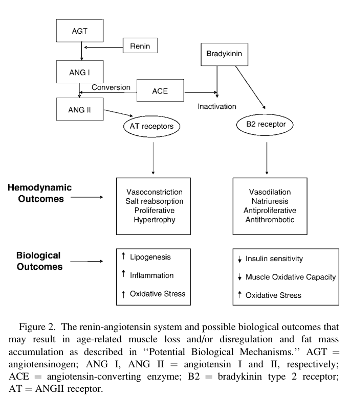
[36] Figure2 · 출판p.1438 / PDF2쪽 RAS 도식은 가능한 기전의 지도다. 특정 약물이 보행을 개선했다는 검증 그래프가 아니다.
[36] Figure2 · 출판p.1438 / PDF2쪽 · 원문
Ref.36은 ACE 억제와 신체 조성·수행에 관한 종설이다. Figure 2는 angiotensin II–AT 수용체와 bradykinin–B2 수용체를 통한 잠재 생물학적 결과를 설명하는 도식이며, 이 그림 자체가 중재 효과크기를 추정한 실험 결과는 아니다. Figure 3도 고혈압 여성의 별도 관찰 연구를 수정 재수록한 것으로 무작위 약물시험 결과가 아니다. Watson은 Ref.12(2008)를 근거로 혈압 감소를 넘어선 보행 개선 가능성을 논의했으나, Ref.12는 2015년 공식 철회되었다. 철회문은 환자 기록 위조와 결과 허위표현을 포함한 문제가 이 논문의 기초 연구에서 발견되었다고 설명한다. 따라서 Watson의 역사적 해석과 오늘날 수용 가능한 약물 중재 근거를 구분한다. 본 발표는 철회 논문의 효능 숫자나 상관계수를 현재의 유효한 치료 근거로 사용하지 않는다. 이 사실은 Watson의 자체 코호트 추정치가 자동으로 철회되었다는 의미가 아니라, 논의에 사용된 특정 중재 근거의 신뢰성을 바꾼다. Ref.36 pp.1438–1439. 철회문: https://pubmed.ncbi.nlm.nih.gov/26536094/ ; DOI 10.1097/01.hjh.0000473689.35464.37.
인용문헌: [12], [36]
원문 주장과 도판의 관계 : Ref.36 종설 Figure 2의 angiotensin II·bradykinin 경로와 가능한 혈역학·생물학적 결과. 새 무작위 치료시험, ACE 억제제의 보행 개선 효과크기, Watson에서의 매개효과. 기전 도식의 화살표를 검증된 치료 인과로 읽으면 안 된다. Ref.12의 역사적 기대와 현재 철회 상태는 분리해야 한다.
그림·표 읽기 해설 화면 단계 1 자료: Ref.36 Figure 2는 종설에서 레닌–안지오텐신계와 bradykinin 경로를 정리한 도식이다. 상단은 물질과 효소, 중간은 수용체, 하단은 혈역학적·생물학적 결과를 배치한다. 세로·가로 숫자 축이나 P값은 없다.
축·열·범례: 왼쪽 위 AGT에서 Renin 작용으로 ANG I, ACE 작용으로 ANG II, 이어 AT receptors 순서로 내려간다. 오른쪽에서는 ACE가 bradykinin을 불활성화하며 bradykinin–B2 receptor 경로가 따로 연결된다. 하단 박스는 혈관 수축·확장, 염증·산화 스트레스·인슐린 감수성·근육 산화능 등 가능한 반응을 보여준다. 원그림의 ↑·↓는 해당 반응의 방향을 뜻하며 실제 Watson의 회귀계수 부호가 아니다.
관찰 결과: RAS가 혈관과 근육 대사에 연결될 수 있다는 기전을 요약한다. 이 그림 자체는 환자에서 그 경로의 크기나 약물의 보행 효과를 추정한 결과가 아니다.
본문과의 연결: Watson이 고혈압–기능 저하의 가능한 설명으로 RAS 변화를 인용한 이유를 이해하게 해준다. 혈압과 신체 수행 사이에 생물학적 연결이 있을 수 있다는 배경 수준의 지지다.
해석 범위: 약물군 ACEI와 ARB가 같지 않고, 원도식에는 ARB의 차단 위치가 따로 표시되지 않는다. Watson이 약물 중재 기대에 인용한 Ref.12(2008)는 2015년 공식 철회됐다. 따라서 그 논문의 효능 숫자를 현재 유효한 치료 근거로 사용할 수 없다. 이는 Watson 자체 코호트 결과가 철회됐다는 뜻은 아니다.
RAS : 레닌–안지오텐신계 · ACE : 안지오텐신전환효소 · ACEI : 안지오텐신전환효소 억제제 · ARB : 안지오텐신 II 수용체 차단제 · ANG II : 안지오텐신 II · AGT : 안지오텐시노겐ANG I : 안지오텐신 I · AT receptor : 안지오텐신 II 수용체 · B2 receptor : 브래디키닌 2형 수용체
APPENDIX
Appendix : 인지기능과 신체 수행 인지기능은 혈압–신체 수행 관계의 후보 경로다. Watson의 DSST 추가 보정 후 PWV 계수 변화는 작았다.
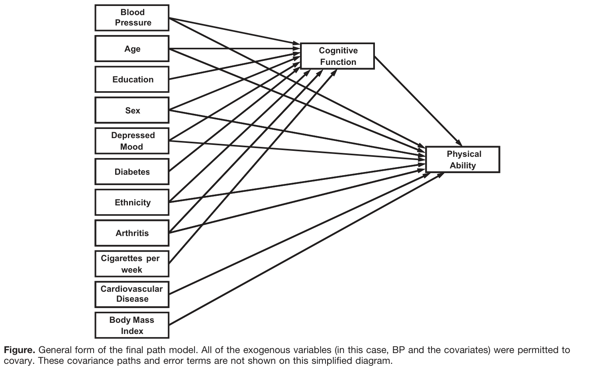
[39] Figure · PDF5쪽 / p.1363 혈압→인지→신체 수행은 저자가 설정한 후보 경로다. 화살표가 있다는 것만으로 매개효과가 입증되지는 않는다.
[39] Figure · PDF5쪽 / p.1363 · 원문
DSST는 Digit Symbol Substitution Test, 숫자기호치환검사로 주의력과 정신운동 속도를 평가한다. Watson은 DSST 점수를 추가 보정해도 PAD군 PWV–보행 계수가 크게 변하지 않았다고 보고한다(p.92). Ref.39는 뇌졸중·치매가 없는 1,025명에서 반복 혈압과 같은 시점의 인지·신체 수행을 경로모형으로 분석하였다. 원 Figure의 화살표는 설정한 모형의 방향이며 모든 경로가 인과적으로 입증되었다는 뜻은 아니다. 인지와 신체 수행이 같은 시점에 측정되어 시간적 매개를 확정하기 어렵다. Ref.37의 잠재성장모형은 실행기능 변화와 IADL 변화의 관련성을 다루지만 PWV 또는 PAD에 특화된 매개분석은 아니다. 따라서 본 논문의 잔여 PWV 연관성을 상세 인지기능이 설명할 가능성은 후속 연구 질문이다. Ref.39 PDF5쪽/p.1363, Ref.37 PDF3–5쪽/pp.348–350; Watson p.94.
인용문헌: [37], [39]
원문 주장과 도판의 관계 : Ref.39 도식은 혈압·인지·신체 수행과 공변량을 함께 고려한 경로모형의 구조를 보여준다. 그림만으로 각 경로의 유의성·크기, 시간적 매개 또는 실험적 인과를 확정하는 것. 인지와 신체 수행은 같은 시점에 측정되었다. 이 그림은 PWV·PAD에 특화된 모형이 아니고, 그림의 화살표 자체는 유의한 효과를 나타내는 표시가 아니다.
그림·표 읽기 해설 화면 단계 1 자료: Ref.39의 Figure는 혈압과 공변량이 인지기능 및 신체 수행에 어떻게 연결되도록 모형을 구성했는지 보여준다. 왼쪽 박스는 혈압·나이·교육·성별·우울·질환 등, 가운데는 Cognitive Function, 오른쪽은 Physical Ability다.
축·열·범례: Blood Pressure에서 Cognitive Function, 다시 Physical Ability로 이어지는 길을 먼저 본다. 동시에 Blood Pressure에서 Physical Ability로 곧장 가는 경로와 여러 공변량의 경로도 남아 있다. 이는 인지와 무관한 직접 관계도 함께 고려한 모형 구조라는 뜻이다. 그림에는 각 화살표의 계수·P값이 없으므로 특정 화살표가 얼마나 크거나 유의한지는 원문의 별도 Tables 2–3에서 확인해야 한다.
관찰 결과: 인지기능과 신체 수행을 함께 고려할 수 있다는 모형 구조를 보여준다. Watson에서는 DSST를 추가 보정해도 PAD군 PWV 계수가 크게 변하지 않았다고 보고했다.
본문과의 연결: Watson이 상세 인지기능을 후속 매개 연구의 대상으로 제안하는 이유를 설명한다. 인지는 혈압과 신체 수행 모두에 연결될 수 있지만 DSST 하나로 모든 인지 경로가 평가되는 것은 아니다.
해석 범위: 인지와 신체 수행은 같은 시점에 측정되어 시간적 매개를 확정하기 어렵다. Ref.39 도식의 혈압을 PWV로 바꿔 읽거나 화살표를 모두 검증된 원인으로 읽으면 안 된다. 공분산 경로와 오차항은 원그림에서 생략됐다.
BP : 혈압 · DSST : 숫자기호치환검사 · PWV : 맥파전달속도 · PAD : Peripheral Arterial Disease · 말초동맥질환
APPENDIX
Appendix : 초기 이동 능력이 좋은 표본 높은 초기 보행 기능 때문에 감소율 차이를 포착하기 어려웠을 수 있다.
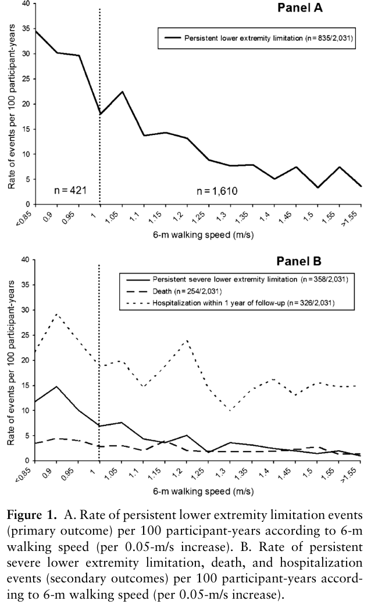
[25] Figure 1 · 출판 p.1677; 저장 PDF4쪽 기저 6m 속도가 느린 구간에서 이후 사건률이 높다. 이 그림이 Watson의 감소율 비유의 원인을 증명하는 것은 아니다.
[25] Figure 1 · 출판 p.1677; 저장 PDF4쪽 · 원문
Watson p.93는 PWV와 보행 속도 감소율의 연관성을 확인하지 못했다고 서술하며, 처음부터 이동 능력이 좋은 사람을 선별한 점을 가능한 이유로 논의한다. 실제로 이 분석에서 기저 보행 속도 <1.0 m/s는 7%이고 보행 어려움을 보고한 참여자는 없었다. 제시한 Ref.25 Figure 1은 다른 Health ABC 분석에서 기저 6 m 보행 속도 구간에 따른 하지 기능 제한·사망·입원 사건률을 보여주며, 주논문의 20 m 보행속도 추적 그래프가 아니다. <1.0 m/s의 예후적 의미는 임상적 절대 경계와 구분한다. 저자는 동맥 경직이 연구 관찰 이전에 이미 보행 기능 저하에 기여해 PWV가 높은 PAD 참여자의 낮은 보행 속도가 추적 내내 유지됐을 가능성도 제시한다. 관찰 이전의 PWV·보행 변화를 직접 추적한 결과나 PWV의 효과가 반드시 존재한다는 증명은 아니다. 감소율의 비유의 결과와 기저·추적 전반의 수준 차이를 분리해서 설명한다. Ref.25 PDF4쪽/p.1677, Watson p.93.
인용문헌: [25]
원문 주장과 도판의 관계 : Watson의 기저 보행 어려움 보고 없음·1.0m/s 미만 7%라는 표본 특성. Ref.25 Figure 1은 1.0m/s 부근 기준의 예후적 맥락을 보여준다. Ref.25 도판 자체가 Watson의 높은 초기 기능 또는 PWV×시간 비유의의 원인을 증명하는 것. 원도판 X는 다른 Health ABC 분석의 기저 6m 보행속도이며 Watson의 20m 반복 보행속도와 다르다. Y는 m/s 감소가 아니라 사건률(100인년당)이다.
그림·표 읽기 해설 화면 단계 1 자료: Ref.25 Figure 1은 다른 Health ABC 분석에서 시작 때의 6m 보행속도를 여러 구간으로 나누고 이후 기능 제한·사망·입원 사건률을 표시한 그림이다. 가로축의 점들은 같은 사람의 시간이 아니라 서로 다른 기저 속도 구간이다.
축·열·범례: 가로축은 기저 6m 보행속도(m/s)로 오른쪽이 빠른 사람들이다. 세로축은 100인년당 사건률로 높을수록 사건이 더 자주 발생한다. Panel A 실선은 지속적 하지 기능 제한, Panel B는 실선 중증 하지 기능 제한·긴 점선 사망·짧은 점선 입원이다. 1.0m/s 세로 점선은 두 속도 범주의 경계를 표시한다. 선을 따라 오른쪽으로 갈 때 사건률이 대체로 낮아지는지 보되 모든 구간이 매끈하게 감소해야 한다고 기대하지 않는다.
관찰 결과: 느린 기저 보행속도 구간에서 이후 기능 제한과 입원 등의 사건률이 높은 경향이었다. 이 원도판의 1.0m/s 미만은 421명으로, Watson 분석의 7%라는 수치와 같은 표본·검사가 아니다.
본문과의 연결: Watson이 1.0m/s 미만을 임상적으로 의미 있는 느린 보행의 기준으로 언급하는 배경을 제공한다. Watson 표본의 대부분이 이 기준보다 빨랐다는 사실은 초기 기능 범위가 좁았을 가능성이라는 저자의 설명과 연결된다.
해석 범위: 세로축은 연간 보행속도 감소가 아니다. 이 원도판은 6m 검사이며 Watson은 20m 반복 검사다. 높은 초기 기능 때문에 PWV×시간이 비유의했다는 이유는 저자가 제안한 가능성일 뿐, 이 그림이 검정한 원인은 아니다.
PWV : 맥파전달속도 · n : 대상자 또는 관측치 수 · P : 유의확률
APPENDIX
Appendix : 통상 보행과 장거리 보행 장거리 보행은 짧은 검사 밖의 기능 정보를 제공할 수 있다. 이완기 기능장애에 더 민감한지는 후속 검증이 필요하다.
① 비교 요약 ② 원표 [41] ③ 예후 결과 [42]
자료 검사 평가 범위 Watson(2011) 20m 평상시 보행 반복 보행 속도 Ref.41,20명 400m / 6분 걷기 속도·종료 심박수·혈압의 검사별 차이 Ref.42,Health ABC 400m 걷기 이후 사건·이동제한·장애와의 예후 연관성
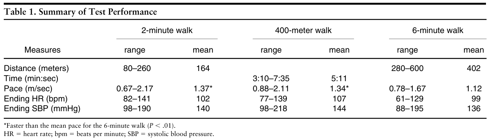
[41] Table 1 · PDF3쪽 / p.1546 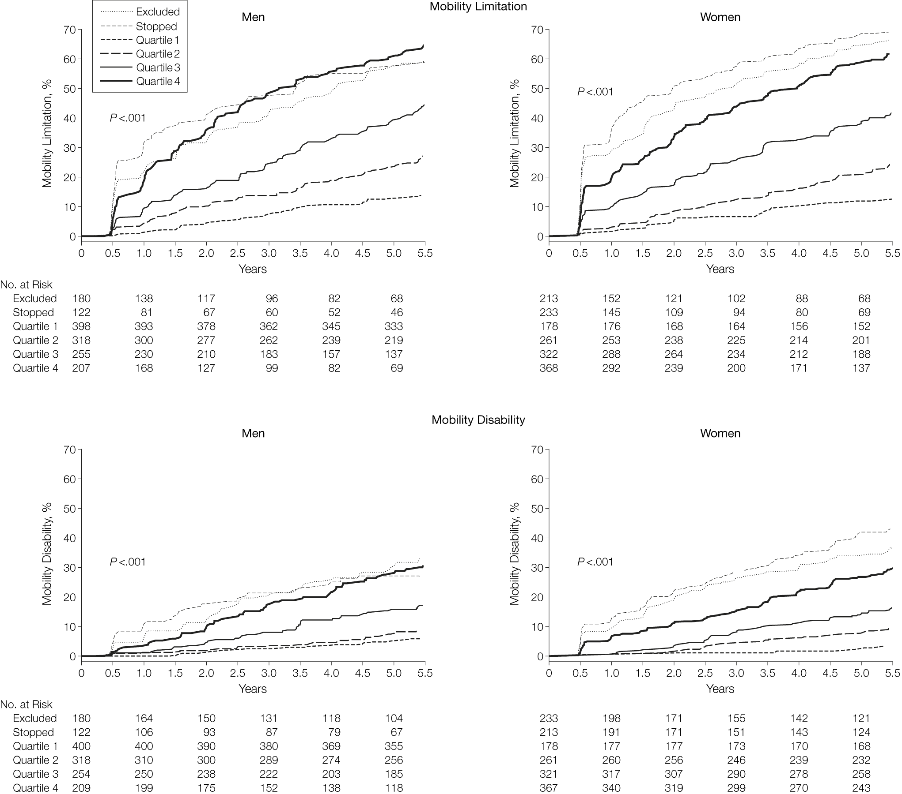
[42] Figure 3 · 인쇄 2024쪽 / PDF 7쪽 20m 통상 보행과 장거리 검사는 평가하는 범위가 다르다. 검사 비교와 이후 사건 예측은 서로 다른 연구 질문이다.
400m·6분 검사는 속도와 종료 생리 반응이 다르다. 여기서 HR는 위험비가 아니라 심박수다.
곡선이 높을수록 이후 이동제한·장애가 더 많이 발생했다. P값은 log-rank 검정이며 보정 위험비가 아니다.
[41] Table 1 · PDF3쪽 / p.1546 | [42] Figure 3 · 인쇄 2024쪽 / PDF 7쪽 · 원문
Watson p.94는 짧은 하지 수행검사가 기능이 좋은 노인의 미세한 변화를 포착하지 못할 수 있고, 장거리 검사가 대동맥 경직과 관련된 이완기 기능 문제에 더 민감할 가능성을 제시한다. Ref.41은 노인 20명의 검사 비교이며 400 m 걷기와 6분 걷기의 속도·종료 심박수·수축기혈압이 달랐다. 제시한 Table1은 집단 평균과 범위이고 개인 내 짝비교 값은 Table2에서 확인해야 한다. 이 연구가 PWV 관련 이완기 기능장애 진단 민감도를 직접 검증한 것은 아니다. Ref.42는 3,075명의 Health ABC에서 400 m 수행과 이후 사망·이동제한·장애의 예후 연관성을 보여준다. 이는 장거리 검사 선택의 근거를 보태지만 Watson의 20 m 결과를 대체하거나 PWV의 치료효과를 입증하지 않는다. 원문: Ref.41 PDF3–4쪽/pp.1546–1547; Ref.42 PDF5–7쪽/pp.2022–2024; Watson p.94.
인용문헌: [41], [42]
원문 주장과 도판의 관계 : Ref.41 Table 1은 서로 다른 보행검사의 수행·종료 생리 반응을 비교한다. 추가 Ref.42 Figure 3은 400m 보행 범주에 따른 이후 이동제한·이동장애 누적발생을 직접 보여준다. Watson 표본에서 20m와 400m 검사의 민감도·특이도를 직접 비교한 결과, PWV 관련 이완기 기능장애 진단 민감도의 입증. 현재 Ref.41 원표에는 20m 검사가 없고 2분·400m·6분 검사만 있다. 표의 수치를 Watson의 20m와 직접 대조한 실험으로 설명하면 안 된다.
그림·표 읽기 해설 화면 단계 1 자료: 첫 화면은 Watson과 Ref.41·42를 나란히 정리한 편집 비교표다. Watson은 20m 평상시 보행, Ref.41은 20명에서 여러 보행검사 비교, Ref.42는 큰 Health ABC 표본에서 400m 보행과 이후 사건의 관계를 평가했다.
축·열·범례: 가로의 “자료–검사–평가 범위”를 한 행씩 읽는다. 같은 열에 보행검사가 들어 있어도 연구 참가자·검사 지시·결과가 다르다. Watson 행은 반복 속도, Ref.41 행은 검사별 속도·종료 심박수·혈압, Ref.42 행은 미래 이동제한·장애를 뜻한다. 세 연구가 한 실험에서 20m와 400m를 직접 대조했다는 뜻은 아니다.
관찰 결과: 짧은 통상 보행속도 외에 장거리 검사에서 얻을 수 있는 정보가 있다는 배경이다. 다음 두 화면에서 각각 실제 검사값과 예후 곡선을 확인한다.
본문과의 연결: Watson이 기능이 좋은 노인의 미세한 변화를 짧은 검사로 놓칠 수 있다고 논의한 이유를 구조화한다. 장거리 검사 도입의 근거와 아직 검정하지 않은 민감도 주장을 분리해준다.
해석 범위: 장거리 검사가 PWV 관련 이완기 기능장애에 더 민감하다는 주장은 Watson의 제안이며 직접 검증 결과가 아니다. 이 비교표는 원논문을 정리한 설명용 표이지 하나의 공통 연구표가 아니다.
화면 단계 2 자료: Ref.41 Table 1은 20명의 2분·400m·6분 보행검사 결과를 범위(range)와 평균(mean)으로 요약한 원표다. 행은 거리·시간·속도·종료 심박수·종료 수축기혈압이다.
축·열·범례: 먼저 열에서 검사 이름을 고르고 각 행의 단위를 붙인다. Pace는 m/s, Ending HR은 bpm, Ending SBP는 mmHg다. 예를 들어 평균 속도는 400m 1.34m/s, 6분 1.12m/s이고 종료 심박수는 107 대 99bpm이다. 속도 평균의 별표는 각주에서 6분 검사보다 빠름(P<.01)을 뜻하며 모든 행에 붙는 유의성 표시는 아니다. 빈 칸을 0으로 읽지 않는다. 고정 거리·시간인 검사에서는 해당 요약값이 별도로 제시되지 않는다.
관찰 결과: 검사 지시와 형식이 달라지면 평균 속도와 종료 생리 반응이 달랐다. 표의 반올림 평균 차이와 원문 Table 2의 개인 내 짝비교 차이는 별개이므로 이 표의 1.34−1.12만으로 정확한 짝비교 추정치를 재현하지 않는다.
본문과의 연결: 장거리 보행검사는 단순 통상 속도와 다른 부하·생리 정보를 포함할 수 있다는 설명을 보탠다. Watson이 장거리 검사를 후속 측정으로 제안한 배경의 한 부분이다.
해석 범위: 이 원표에는 Watson의 20m 검사가 없다. 20명의 검사 비교로 대동맥 경직과 이완기 기능장애의 진단 민감도가 입증된 것은 아니다. Ending HR의 높고 낮음을 치료 효능이나 사망 위험비로 읽으면 안 된다.
화면 단계 3 자료: Ref.42 Figure 3은 기저 400m 검사 완주시간 사분위와 미완주·의학적 제외군에 따라 이후 사건 누적발생을 비교한 Kaplan–Meier 그림이다. 위 두 패널은 이동제한, 아래 두 패널은 이동장애이며 각각 남녀를 나눈다.
축·열·범례: 가로축 Years는 추적 연수, 세로축은 해당 사건의 누적발생 비율(%)이다. Quartile 1은 완주시간이 짧은 빠른 군, Quartile 4는 시간이 긴 느린 군이다. Stopped는 검사 도중 중단, Excluded는 의학적 안전 등의 기준으로 검사를 하지 않은 군이다. 범례의 선 모양을 찾은 뒤 같은 시점에 어떤 곡선이 더 높은지 본다. 아래 No. at Risk는 그 시점 직전 아직 사건 관찰의 위험집단에 남아 있는 수로, 사건 발생 수가 아니다. P<.001은 여러 군의 시간별 사건 양상이 같은지 보는 log-rank 검정이다.
관찰 결과: 느린 400m 수행군과 미완주·제외군에서 이후 이동제한·장애의 누적발생이 대체로 높았다. 보정 HR가 필요하면 이 곡선의 높이가 아니라 논문의 별도 Tables 2–3를 읽어야 한다.
본문과의 연결: 초기에는 걷기 어려움이 없던 노인에서도 장거리 수행이 이후 기능 위험을 구분한다는 실제 예후 자료다. 짧은 기능검사 외 장거리 보행을 고려할 수 있다는 Watson의 논의에 근거를 보탠다.
해석 범위: 곡선은 PWV 효과나 혈압 치료 효과를 그린 것이 아니다. Figure 3의 log-rank P값은 보정된 회귀계수 검정이 아니고 여러 군 전체의 비교이므로 모든 두 군 사이 차이가 각각 유의하다는 뜻도 아니다. 장거리 검사의 이완기 기능장애 민감도를 직접 검정한 것은 아니다.
HR : 심박수 · SBP : 수축기혈압 · bpm : 분당 박동수 · PWV : 맥파전달속도 · ABC : 건강·노화·신체구성 연구
HR : 심박수 · SBP : 수축기혈압 · bpm : 분당 박동수 · PWV : 맥파전달속도 · ABC : 건강·노화·신체구성 연구 · P : 유의확률
HR : 심박수 · SBP : 수축기혈압 · bpm : 분당 박동수 · PWV : 맥파전달속도 · ABC : 건강·노화·신체구성 연구 · P : 유의확률 · n : 대상자 또는 관측치 수
APPENDIX
Appendix : 반복 보행 측정의 가치 보행속도는 이후 장애 위험의 예후 정보를 제공한다. Watson은 이를 2,172명에서 반복 측정했다.
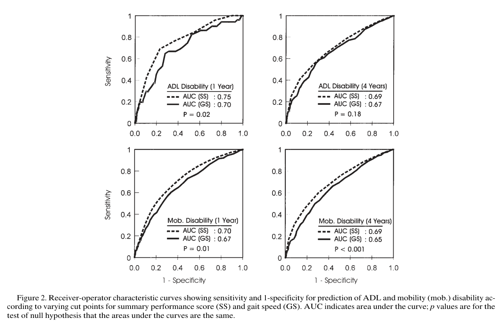
[43] Figure 2 · PDF 6쪽 / M226 실선은 보행속도, 점선은 종합 수행점수의 예측 ROC다. AUC는 구분 능력이며 보행속도 단위가 아니다.
[43] Figure 2 · PDF 6쪽 / M226 · 원문
Watson은 대규모 지역사회 표본, 여러 잠재 교란요인 보정, 신뢰도와 타당도가 있는 보행 속도의 반복 평가를 강점으로 제시한다(p.94). Ref.43 Figure2는 보행속도(GS)와 종합 수행점수(SS)의 ADL·이동장애 예측 ROC를 비교한다. 곡선이 대체로 가깝지만 모든 비교에서 통계적으로 같다는 뜻은 아니다. 예를 들어 4년 ADL AUC는 .69 대 .67(P=.18), 1년 ADL은 .75 대 .70(P=.02)이다. Ref.43은 8ft 정지 출발 보행 등을 사용했으므로 Watson의 20 m 통상 보행과 측정 조건은 다르다. 예후 예측력이 유사하다는 결과를 두 검사의 변화 민감도가 완전히 같다는 주장으로 확장하지 않는다. 반복 측정의 장점도 결측·선택과 관찰연구의 인과 한계를 자동으로 해결하지 않는다. 원문: Ref.43 PDF6쪽/M226; Watson p.94.
인용문헌: [43]
원문 주장과 도판의 관계 : Ref.43 Figure 2는 GS와 SS의 이후 ADL·이동장애 예측 ROC 및 AUC를 비교한다. Watson의 표본·반복 측정은 Watson Methods와 강점 문단에서 별도로 확인된다. ROC 그림이 Watson의 2,172명 자료이거나 반복 측정 자체의 통계적 장점을 검증했다는 주장. GS와 SS가 모든 경우 통계적으로 동등하다는 결론. 기존 visible이 “지역사회2,172명/7년간 반복 평가”만 제시하면 원도판이 그 표본의 결과처럼 보일 수 있다. 실제 축은 X=1−특이도, Y=민감도이며 시간에 따른 보행속도가 아니다.
그림·표 읽기 해설 화면 단계 1 자료: Ref.43 Figure 2는 보행속도(GS)만 쓴 모형과 종합 수행점수(SS)를 쓴 모형의 이후 ADL·이동장애 예측을 비교한다. 위는 ADL 장애, 아래는 이동장애이고 왼쪽은 1년, 오른쪽은 4년 결과다. 실제 보행속도 변화 궤적은 아니다.
축·열·범례: 가로축 1−Specificity는 사건이 생기지 않을 사람을 잘못 위험군으로 분류하는 비율, 세로축 Sensitivity는 사건이 생길 사람을 위험군으로 잡아내는 비율이다. 분류 기준을 달리하면 한 곡선 위의 점이 달라진다. 대체로 왼쪽 위에 가까울수록 구분이 좋다. 실선 GS와 점선 SS를 비교하고 각 패널의 AUC와 P값을 함께 읽는다. AUC .5는 무작위 수준, 1은 완전 구분이며 P값은 두 AUC가 같다는 귀무가설에 대한 값이다.
관찰 결과: 예를 들어 1년 ADL은 SS .75 대 GS .70(P=.02), 4년 ADL은 .69 대 .67(P=.18)이다. 보행속도만으로도 예후 정보를 얻을 수 있지만 모든 비교에서 두 검사가 통계적으로 같다는 뜻은 아니다.
본문과의 연결: Watson이 보행속도를 신뢰할 수 있고 임상적으로 유용한 기능 지표로 선택한 근거를 뒷받침한다. Watson 자체의 강점은 이 결과를 2,172명에서 반복 측정했다는 설계에 있고, ROC는 다른 표본에서의 예후적 유용성 근거다.
해석 범위: Ref.43은 8ft 정지 출발 보행 등을 사용한 다른 표본이다. 이 곡선을 Watson 2,172명의 ROC로 소개하면 안 된다. P=.18은 동등성이 입증됐다는 뜻이 아니며, 예후 구분력과 작은 변화에 대한 측정 민감도도 같은 성질이 아니다.
ROC : 수신자 조작 특성 곡선 · AUC : ROC 곡선 아래 면적 · GS : 보행속도 · SS : 종합 수행점수 · ADL : 일상생활활동 · P : 유의확률
APPENDIX
Appendix : 표본과 추적자료 누락 8차 연도 보행자료는 참여자의 56%에서 남았다. 제한 추적 분석만으로 결측 편향을 배제할 수는 없다.
구분 인원·비율 해석 등록 → 기저 분석 3,075 →2,172명 PWV·보행자료 유효 여부로 선택 연구5차 연도 1,673명(77%) 보행 검사 완료 연구8차 연도 1,219명(56%) 보행 검사 완료 PAD별 표본 합 261+1,802=2,063명 전체보다109명 적음; 이유 설명 부족
56%는 8차 연도 보행검사 자료의 보유 비율이다. 나머지 모두가 같은 이유로 탈락했다는 뜻은 아니다.
Watson et al. (2011), American Journal of Hypertension 24:90–95 · 원문
주논문 p.91에 따르면 PWV는 장비 문제 354명과 사용 불가 파형 233명에서 누락되어 2,488명이 남았고, 이 중 기저 유효 보행속도 자료가 있는 2,172명이 포함됐다. PWV 누락군은 인종 구성, 혈압, 심박수가 달라 선택이 완전히 무작위였다고 볼 근거가 없다. p.92는 제5차 연도 1,673명(77%), 제8차 연도 1,219명(56%)이 보행 검사를 완료했다고 보고한다. 이는 검사 자료 보유율이며 나머지가 모두 동일한 이유로 탈락한 것으로 단정하지 않는다. 제5차 연도까지 제한한 추정치가 유사한 것은 민감도 확인에 도움이 되지만 비무작위 결측 편향이 없다는 증명은 아니다. Table3의 PAD261명+비PAD1,802명=2,063명으로 전체보다109명 적다. PAD 12.7%는261/2,063과 부합하지만, 이109명 차이를 AAI결측이라고 확정할 정도의 설명은 원문에 없다. 따라서 하위집단 분모 차이를 보고 불충분 항목으로 명시한다. 원문: Watson pp.91–93, Tables2–3.
원문 주장과 도판의 관계 : Watson의 등록·기저 분석 표본, 5·8차 연도 보행 검사 완료 인원, 제한 추적 민감도 분석. 검사 자료가 없는 모든 사람이 같은 이유로 중도탈락했다는 주장, 109명이 모두 AAI 결측이라는 확정. 외부 논문의 장식 도판은 이 표본 문제를 지지하지 못한다. 현재 숫자 표 자체가 직접적인 근거다.
그림·표 읽기 해설 화면 단계 1 자료: 이 표는 Watson의 등록 인원·기저 분석 인원·추적 검사 완료 수·PAD별 분석 인원을 정리한 검토용 표다. 개별 사람의 속도나 효과크기를 그린 표는 아니다.
축·열·범례: 첫 행 3,075→2,172는 PWV·기저 보행자료 유효 여부를 거친 분석 표본이다. 그다음 1,673명(77%)과 1,219명(56%)은 각각 연구 5차·8차 연도에 보행 검사를 마친 수로, 분모는 기저 분석 2,172명이다. 연구 8차 연도는 기저인 1차 연도 이후 경과시간 약 7년에 해당한다. 마지막 행은 PAD 261+비PAD 1,802=2,063이 전체보다 109명 적다는 산술 비교다.
관찰 결과: 추적 자료 보유율이 낮아졌고 PAD별 분석의 분모도 전체와 다르다. 5차 연도까지 제한한 분석에서 PWV 및 PWV×시간 추정값은 크게 변하지 않았다.
본문과의 연결: Watson의 표본 선택·결측 한계를 직접 수치로 보여준다. 결과가 어느 집단과 어떤 관측자료를 바탕으로 추정됐는지 확인해야 신뢰 범위를 설명할 수 있다.
해석 범위: 자료가 없는 이유가 모두 사망·중도탈락 등 한 가지였다고 단정하지 않는다. 원문 설명만으로 109명을 모두 AAI 결측이라고 확정할 수 없다. 제한 추적 분석에서 계수가 유사해도 비무작위 결측에 따른 모든 편향이 사라졌다는 증거는 아니다.
PWV : 맥파전달속도 · PAD : Peripheral Arterial Disease · 말초동맥질환 · AAI : 발목상완지수 · n : 대상자 또는 관측치 수
APPENDIX
Appendix : Conclusion 01 혈관 위험요인 보정 후,높은 기저 PWV와 낮은 보행 속도의 연관성은 PAD군에서 관찰되었다.
02 PWV에 따른 보행 속도 감소율 차이와 PAD에 따른 PWV 효과 차이는 통계적으로 확인되지 않았다.
03 관찰된 연관성의 재현과 관류·인지·심장 기능 및 중재 효과에 대한 후속 검증이 필요하다.
Watson et al. (2011), Table 3 및 Results/Discussion, 인쇄 pp.92–94 · 원문
이 연구의 가장 직접적인 결론은 PAD가 있는 기능 양호 노인에서 높은 기저 대동맥PWV가 추적 전반의 낮은 보행 속도와 관련되었다는 것이다. 전체군에서는 Model3의 PWV계수가−.005(95%CI−.012~.002,P=.155)로 유의하지 않았고, PAD군은−.028(−.047~−.010,P=.003)이었다. 이 값은 다른 사람들 사이의 기저PWV1SD차이에 대응하는 보행 속도 수준 차이이며, PWV의 개인 내 변화나 치료효과가 아니다. PWV×Time의 비유의 결과 때문에 더 빠른 향후 보행 속도 감소를 PWV가 예측했다고 표현하지 않는다. PWV×PAD도 P=.21로 유의하지 않으므로 PAD군에서 더 강한 관계가 입증됐다고 단정하지 않는다. 대동맥 경직도를 중재 표적으로 검토할 가치는 후속 연구 질문이며, Ref.12의 철회 상태를 고려하면 이 논문의 약물 중재 기대를 현재의 확정적 임상 결론으로 사용할 수 없다. 원문: Watson pp.92–94; Ref.12 공식 철회문 PMID26536094.
주장과 근거의 범위 : PAD군의 속도 수준 연관성과 두 상호작용의 비유의 결과를 함께 요약한 결론. 높은 PWV가 보행 저하를 일으킨다는 인과, 더 빠른 감소율 예측, PWV 저하 치료의 효과. 다른 논문의 사진·도식을 마지막 장에 다시 붙이면 핵심 자체 결과보다 기전·치료가 확정된 것처럼 강조될 수 있다.
그림·표 읽기 해설 화면 단계 1 자료: 기본 화면은 결론 01과 02이다. 첫 문장은 PAD군의 기저 PWV–보행속도 수준 연관성, 둘째는 PWV×시간과 PWV×PAD의 비유의 결과를 요약한다.
축·열·범례: “높은 기저 PWV”는 기초 시점에서 평가한 경직도의 사람 간 차이다. “낮은 보행속도”는 반복 측정값을 혼합모형으로 분석한 속도 수준 차이다. PWV 1SD당 −.028m/s를 연간 감소로 읽지 않는다. 또한 군 안에서의 유의한 결과와 군 간 효과 차이의 비유의 결과를 동시에 유지한다.
관찰 결과: PAD군에서 보정 후 음의 수준 연관성은 관찰됐으나 더 빠른 감소율이나 PAD에 따른 효과 차이는 통계적으로 확인되지 않았다.
본문과의 연결: 주논문의 관찰 결과와 검정의 실제 범위에 맞는 요약이다.
해석 범위: 관찰연구이므로 PWV가 보행 저하를 일으켰다고 확정하거나 치료로 .028m/s 개선될 것이라고 예측할 수 없다.
화면 단계 2 자료: 다음 단계에서 결론 03이 나타난다. 다른 노인 집단의 재현, 하지 관류·인지·심장 기능의 직접 평가, 경직도를 낮추는 중재의 효과 검증을 제안한다.
축·열·범례: 관찰된 관련성에서 연구 질문으로 이어지는 문장으로 읽는다. “검증이 필요하다”는 아직 원인·기전·치료 효능을 확정하지 않았다는 뜻이다. 앞의 두 결과를 감추지 않고 함께 남겨서 제안의 근거와 한계를 확인한다.
관찰 결과: 후속 연구의 필요성은 남아 있으며 Ref.12의 철회 상태 때문에 당시 약물 기대를 현재 유효한 효능 근거로 사용할 수 없다.
본문과의 연결: Watson의 마지막 문장도 혈압 강하와 별개인 대동맥 경직 감소가 기능 저하·장애 위험을 줄이는지 추가 평가가 필요하다고 끝난다.
해석 범위: Ref.12 철회가 Watson 자체 분석을 자동으로 무효화하는 것은 아니다. 그러나 그 특정 중재 논문을 근거로 임상 치료 효과를 보장할 수는 없다.
PWV : 맥파전달속도 · PAD : Peripheral Arterial Disease · 말초동맥질환 · SD : 표준편차 · β : 회귀계수
PWV : 맥파전달속도 · PAD : Peripheral Arterial Disease · 말초동맥질환 · SD : 표준편차 · β : 회귀계수
APPENDIX
Appendix : 표와 본문의 보고 범위 항목 보고 위치·내용 PWV·Time 계수 Table 3: 계수·95% 신뢰구간·P값 고정 절편 β₀·개인별 절편 수치 미보고 PWV×시간 Results p.92: 전체 P=0.66 / PAD P=0.96 PWV×PAD Results p.92: P=0.21 PAD×시간 직접 검정 결과 미보고
Table 2의 기저 평균 1.34 m/s와 혼합모형 절편은 다른 값
보고된 계수만으로 개인별 실제 궤적·연도별 집단 평균을 복원하기 어려움
Watson et al. (2011), American Journal of Hypertension 24:90–95 · 원문
절편은 모든 설명변수가 그 모형의 기준값일 때의 예상 보행 속도다. 연속 공변량은 중심화했다고 보고되었지만 각 변수의 코딩·모든 중심값·고정 절편·개인별 무작위효과는 제공되지 않는다. Table 2의 1.34 m/s는 기저시점 전체 표본의 기술통계 평균으로 이를 모형 절편으로 대체할 수 없다. Table 3는 PWV와 Time의 계수 및 불확실성을 제시한다. PWV×시간과 PWV×PAD는 표가 아니라 Results 본문 인쇄p.92/PDF3쪽에 보고한다. PWV×시간의 계수는 반올림하여0.000으로 제시되었고 SE는 전체.001/PAD.002이다. 가상 궤적은 임의 시작값을 가정한 교육용 그림이며 실제 관측·예측선과 구별한다.
그림·표 읽기 해설 화면 단계 1 자료: 보고 위치와 누락 항목을 대조한 표.
축·열·범례: 각 행에서 값·출처가 있는지와 미보고 여부를 나눠 읽는다.
관찰 결과: 절편과 PAD×시간 직접 검정값은 미보고다.
본문과의 연결: 가상 예시와 논문이 실제 보고한 숫자의 경계를 명확히 한다.
해석 범위: 기저 평균 1.34 m/s를 혼합모형 절편으로 바꾸어 넣지 않는다.
PWV : 맥파전달속도 · PAD : Peripheral Arterial Disease · 말초동맥질환 · Time : 경과시간 · CI : 신뢰구간 · P : 유의확률 · β₀ : 고정 절편
APPENDIX
Appendix : 전체 코호트의 PWV 계수 모형 PWV β (95% CI) P Time β (95% CI) P Model 1 −0.021 (−0.029, −0.013) <0.001 −0.041 (−0.042, −0.039) <0.001 Model 2 −0.015 (−0.023, −0.008) <0.001 −0.039 (−0.041, −0.037) <0.001 Model 3 −0.005 (−0.012, 0.002) 0.155 −0.037 (−0.040, −0.035) <0.001
PWV 1SD 증가: 보행 속도 −0.005 m/s / 보정 후 P = 0.155
Time 1년 증가: 기준 조건의 보행 속도 −0.037 m/s / P < 0.001
Watson et al. (2011), American Journal of Hypertension 24:90–95 · 원문
이 표는 Table 3의 전체 코호트 여섯 계수와 모든 CI/P를 그대로 옮겼다. PWV 계수는 Model 1 −0.021, Model 2 −0.015, Model 3 −0.005로 감소한다. Model 3의 신뢰구간은 0을 포함하고 P=0.155이다. 따라서 최종 보정 조건에서 PWV와 보행 속도의 독립적인 연관성이 뚜렷하지 않았다. 이것은 PWV의 효과가 정확히 0이라거나 혈관 위험요인이 인과적으로 전부 설명했다는 증거는 아니다. Time 계수는 각각 −0.041, −0.039, −0.037 m/s/년이며 PWV가 높은 만큼 더 빨리 감소한다는 수치가 아니다. PWV×시간 결과는 본문에서 별도로 확인한다. 그림은 원문 보고 계수와 CI를 점과 선으로 표현한 것이고, 환자 원자료나 예측 궤적을 그린 것이 아니다. 모형 주석의 보정 변수는 앞의 Model 1–3 설명을 따른다. 원문 Table 3 p93/PDF p4.
그림·표 읽기 해설 화면 단계 1 자료: 전체 코호트의 보정 단계별 계수·CI·P값.
축·열·범례: 같은 행의 PWV와 Time 단위를 구분하고 Model 1→3을 따라간다.
관찰 결과: PWV −.021→−.015→−.005로 감쇠.
본문과의 연결: 보정 조건을 늘려도 관계가 남는지 비교할 수 있다.
해석 범위: 모형 선택과 측정하지 않은 요인의 영향을 고려해야 한다.
화면 단계 2 자료: 강조된 Model 3의 PWV 계수와 P.
축·열·범례: 1SD당 계수와 CI [−0.012, 0.002]를 함께 읽는다.
관찰 결과: PWV 1SD당 속도 수준 차이 −0.005 m/s.
본문과의 연결: CI가 0을 포함하여 최종 보정 모형의 관계가 뚜렷하지 않다.
해석 범위: 연간 감소량이 아니라 속도 수준 차이다.
화면 단계 3 자료: 강조된 Model 3의 Time 계수.
축·열·범례: CI [−0.040, −0.035]와 연간 단위를 확인한다.
관찰 결과: 기준 조건의 시간 변화는 −0.037 m/s/년.
본문과의 연결: 시간에 따른 속도 변화와 PWV 자체의 연관성을 구분하도록 돕는다.
해석 범위: 모든 사람의 실제 연간 감소량이 같다는 뜻이 아니며, PWV×시간 결과도 아니다.
PWV : 맥파전달속도 · SD : 표준편차 · CI : 신뢰구간 · P : 유의확률 · Time : 경과시간 · βP : PWV 주효과 계수 · βt : 시간 계수
PWV : 맥파전달속도 · SD : 표준편차 · CI : 신뢰구간 · P : 유의확률 · Time : 경과시간 · βP : PWV 주효과 계수 · βt : 시간 계수
PWV : 맥파전달속도 · SD : 표준편차 · CI : 신뢰구간 · P : 유의확률 · Time : 경과시간 · βP : PWV 주효과 계수 · βt : 시간 계수
APPENDIX
Appendix : PAD군의 PWV 계수 모형 PWV β (95% CI) P Time β (95% CI) P Model 1 −0.032 (−0.052, −0.011) 0.002 −0.044 (−0.048, −0.040) <0.001 Model 2 −0.030 (−0.049, −0.011) 0.002 −0.046 (−0.054, −0.037) <0.001 Model 3 −0.028 (−0.047, −0.010) 0.003 −0.048 (−0.058, −0.038) <0.001
PWV 1SD 증가: 보행 속도 −0.028 m/s / 보정 후 P = 0.003
Time 1년 증가: 기준 조건의 보행 속도 −0.048 m/s / P < 0.001
Watson et al. (2011), American Journal of Hypertension 24:90–95 · 원문
PAD군의 PWV 계수는 Model 1 −0.032, Model 2 −0.030, Model 3 −0.028 m/s이다. 최종 계수는 PWV가 1SD 높은 사람들의 보행 속도가 0.028 m/s 낮은 관계를 뜻하며 매년 0.028 m/s 더 감소한다는 뜻이 아니다. 본문은 SE 0.010 m/s, P<0.01로 설명하고 Table 3은 정확한 P=0.003을 제시한다. 뇌혈관질환 유무, DSST 점수, AAI를 추가 고려해도 효과가 크게 변하지 않았다고 서술하지만 각 추가 모형의 계수와 CI 전체는 표로 제공하지 않는다. Time 계수 −0.048 m/s/년은 최종 모형의 조건부 시간 계수다. PWV×시간 P=0.96이므로 PWV가 높은 사람들의 감소율이 더 빠르다는 결과는 얻지 못했다. 이 하위집단 결과가 비PAD군과 통계적으로 다르다고 판단하려면 PWV×PAD 검정 P=0.21을 함께 읽어야 한다. Results p92/PDF p3; Table 3 p93/PDF p4.
그림·표 읽기 해설 화면 단계 1 자료: PAD군의 보정 단계별 계수·CI·P값.
축·열·범례: 같은 행의 PWV와 Time 단위를 구분하고 Model 1→3을 따라간다.
관찰 결과: PWV −.032→−.030→−.028로 유지.
본문과의 연결: 보정 조건을 늘려도 관계가 남는지 비교할 수 있다.
해석 범위: 모형 선택과 측정하지 않은 요인의 영향을 고려해야 한다.
화면 단계 2 자료: 강조된 Model 3의 PWV 계수와 P.
축·열·범례: 1SD당 계수와 CI [−0.047, −0.010]를 함께 읽는다.
관찰 결과: PWV 1SD당 속도 수준 차이 −0.028 m/s.
본문과의 연결: 0을 제외한 음의 CI가 느린 보행 수준과의 관계를 지지한다.
해석 범위: 연간 감소량이 아니라 속도 수준 차이다. 군 간 차이는 별도 상호작용 검정이 필요하다.
화면 단계 3 자료: 강조된 Model 3의 Time 계수.
축·열·범례: CI [−0.058, −0.038]와 연간 단위를 확인한다.
관찰 결과: 기준 조건의 시간 변화는 −0.048 m/s/년.
본문과의 연결: 시간에 따른 속도 변화와 PWV 자체의 연관성을 구분하도록 돕는다.
해석 범위: 모든 사람의 실제 연간 감소량이 같다는 뜻이 아니며, PWV×시간 결과도 아니다.
PWV : 맥파전달속도 · SD : 표준편차 · CI : 신뢰구간 · P : 유의확률 · Time : 경과시간 · βP : PWV 주효과 계수 · βt : 시간 계수 · PAD : Peripheral Arterial Disease · 말초동맥질환
PWV : 맥파전달속도 · SD : 표준편차 · CI : 신뢰구간 · P : 유의확률 · Time : 경과시간 · βP : PWV 주효과 계수 · βt : 시간 계수 · PAD : Peripheral Arterial Disease · 말초동맥질환
PWV : 맥파전달속도 · SD : 표준편차 · CI : 신뢰구간 · P : 유의확률 · Time : 경과시간 · βP : PWV 주효과 계수 · βt : 시간 계수 · PAD : Peripheral Arterial Disease · 말초동맥질환
APPENDIX
Appendix : 비PAD군의 PWV 계수 모형 PWV β (95% CI) P Time β (95% CI) P Model 1 −0.015 (−0.024, −0.006) 0.001 −0.040 (−0.042, −0.039) <0.001 Model 2 −0.011 (−0.019, −0.003) 0.009 −0.038 (−0.041, −0.036) <0.001 Model 3 −0.001 (−0.009, 0.007) 0.804 −0.037 (−0.039, −0.034) <0.001
PWV 1SD 증가: 보행 속도 −0.001 m/s / 보정 후 P = 0.804
Time 1년 증가: 기준 조건의 보행 속도 −0.037 m/s / P < 0.001
Watson et al. (2011), American Journal of Hypertension 24:90–95 · 원문
비PAD군의 PWV 계수는 Model 1 −0.015, Model 2 −0.011, Model 3 −0.001 m/s이다. 최종 95% 신뢰구간은 −0.009~0.007로 0을 포함하고 P=0.804이다. 자료와 해당 보정 모형에서 관계가 뚜렷하지 않았다는 의미이며 진짜 계수가 정확히 0이라고 확정하는 결과는 아니다. Time 계수는 Model 1 −0.040, Model 2 −0.038, Model 3 −0.037 m/s/년이다. 원문 본문은 비PAD군 PWV×시간의 별도 계수와 P값을 제공하지 않으므로 전체군 P=0.66이나 PAD군 P=0.96을 여기에 붙이면 안 된다. PAD와 비PAD의 결과를 각각 읽는 질문과 두 군의 PWV 관계가 다른지를 검정하는 질문은 별개다. 다음 슬라이드에서 비교하되 PWV×PAD P=0.21을 함께 제시한다. 모든 수치는 Table 3 인쇄 p93/PDF p4의 값이다.
그림·표 읽기 해설 화면 단계 1 자료: 비PAD군의 보정 단계별 계수·CI·P값.
축·열·범례: 같은 행의 PWV와 Time 단위를 구분하고 Model 1→3을 따라간다.
관찰 결과: PWV −.015→−.011→−.001로 감쇠.
본문과의 연결: 보정 조건을 늘려도 관계가 남는지 비교할 수 있다.
해석 범위: 모형 선택과 측정하지 않은 요인의 영향을 고려해야 한다.
화면 단계 2 자료: 강조된 Model 3의 PWV 계수와 P.
축·열·범례: 1SD당 계수와 CI [−0.009, 0.007]를 함께 읽는다.
관찰 결과: PWV 1SD당 속도 수준 차이 −0.001 m/s.
본문과의 연결: CI가 0을 포함하여 최종 보정 모형의 관계가 뚜렷하지 않다.
해석 범위: 연간 감소량이 아니라 속도 수준 차이다. 군 간 차이는 별도 상호작용 검정이 필요하다.
화면 단계 3 자료: 강조된 Model 3의 Time 계수.
축·열·범례: CI [−0.039, −0.034]와 연간 단위를 확인한다.
관찰 결과: 기준 조건의 시간 변화는 −0.037 m/s/년.
본문과의 연결: 시간에 따른 속도 변화와 PWV 자체의 연관성을 구분하도록 돕는다.
해석 범위: 모든 사람의 실제 연간 감소량이 같다는 뜻이 아니며, PWV×시간 결과도 아니다.
PWV : 맥파전달속도 · SD : 표준편차 · CI : 신뢰구간 · P : 유의확률 · Time : 경과시간 · βP : PWV 주효과 계수 · βt : 시간 계수 · PAD : Peripheral Arterial Disease · 말초동맥질환
PWV : 맥파전달속도 · SD : 표준편차 · CI : 신뢰구간 · P : 유의확률 · Time : 경과시간 · βP : PWV 주효과 계수 · βt : 시간 계수 · PAD : Peripheral Arterial Disease · 말초동맥질환
PWV : 맥파전달속도 · SD : 표준편차 · CI : 신뢰구간 · P : 유의확률 · Time : 경과시간 · βP : PWV 주효과 계수 · βt : 시간 계수 · PAD : Peripheral Arterial Disease · 말초동맥질환
APPENDIX
Appendix : PWV 연관성의 군 간 차이 점:PWV1SD당 보행속도 차이 /가로선:95%CI 각 군의 유의성과 군 간 차이 검정을 구분
Watson et al., American Journal of Hypertension 2011;24:90–95. · Table 3 p93 / PDF p4; interaction P=0.21 p92 / PDF p3 · 원문
그림의 점은 각 집단에서 보고된 Model 3의 PWV 계수이고 수평선은 95% CI다. 전체 코호트는 하위집단을 포함하므로 세 점이 독립된 세 연구의 결과가 아니다. PAD에서 P=0.003이고 비PAD에서 P=0.804라는 사실은 각 집단에서 계수 0이라는 질문에 답한다. 두 집단의 PWV 계수 자체가 다른지는 PWV×PAD 상호작용 검정이 다루며 P=0.21이었다. 따라서 PAD가 PWV의 영향을 통계적으로 유의하게 증폭한다고 확정하지 않는다. 저자는 PAD군에서 관계가 관찰되었다고 강조하고 상호작용 가능성을 논의하지만, 제한점에서 전체 코호트에 대한 사전 계획 분석 뒤 하위집단 분석을 수행했으며 재현이 필요하다고 밝힌다. P=0.21은 두 군의 관계가 완전히 같다는 증거도 아니다. 이 연구에서 차이를 뚜렷하게 확인하지 못했다는 범위로 해석한다. Results p92/PDF p3; Table 3 p93/PDF p4; Limitations p94/PDF p5.
그림·표 읽기 해설 화면 단계 1 자료: 전체·PAD·비PAD의 PWV 계수 점–구간 도표.
축·열·범례: 가로축은 1SD당 속도 차이, 세로는 집단이며 수직 0선을 기준으로 CI를 읽는다.
관찰 결과: 전체 −.005, PAD −.028, 비PAD −.001 / 군 차이 P=.21.
본문과의 연결: 집단별 추정 크기와 불확실성을 같은 축에서 비교할 수 있다.
해석 범위: 전체군은 두 하위집단을 포함한다. 서로 독립된 세 연구나 메타분석 결과가 아니다.
PWV : 맥파전달속도 · PAD : Peripheral Arterial Disease · 말초동맥질환 · SD : 표준편차 · CI : 신뢰구간 · P : 유의확률 · β : 회귀계수
APPENDIX
Appendix : 세 가지 상호작용 항목 보고 계수 (SE) P 답하려는 질문 전체 PWV×시간 0.000 (0.001) 0.66 PWV에 따른 감소율 차이 PAD군 PWV×시간 0.000 (0.002) 0.96 PAD 내 PWV에 따른 감소율 차이 PWV×PAD 계수 미보고 0.21 PAD 유무에 따른 PWV 관계 차이 PAD×시간 미보고 미보고 PAD 유무에 따른 감소율 차이
PWV×시간: 처음 PWV에 따라 이후 감소율이 다른가
PWV×PAD: PAD 유무에 따라 PWV와 속도 수준의 관계가 다른가
Watson et al. (2011), American Journal of Hypertension 24:90–95 · 원문
PWV×시간은 기저 PWV가 높은 사람의 보행 속도가 시간이 지나며 더 빨리 감소하는지 묻는다. 전체군 β(SE)=0.000(0.001), P=0.66, PAD군 0.000(0.002), P=0.96으로 보고되었다. 0.000은 인쇄된 반올림값이므로 추정치가 수학적으로 정확히 0이라고 말하지 않는다. PWV×PAD는 PAD 유무에 따라 PWV의 속도 수준 관계가 다른지 묻고 P=0.21이다. 본문에 계수와 CI는 보고되지 않았다. PAD×시간은 별개의 질문이며 Table 3의 서로 다른 Time 계수만 보고 이 검정이 유의했다고 말할 수 없다. 원문에 PAD×시간의 공식 비교 계수나 P값이 보고되어 있지 않다. 더 복잡한 PWV×PAD×시간을 분석했다고 원문에 없는 내용을 덧붙이지 않는다. 상호작용이 비유의라는 결과는 완전히 같은 감소율이나 완전히 같은 관계를 증명하지 않는다. Results p92/PDF p3; Table 3 p93/PDF p4.
그림·표 읽기 해설 화면 단계 1 자료: 상호작용별 계수·SE·P와 질문의 대응.
축·열·범례: 행 이름을 먼저 확인하고 같은 행의 P와 질문을 연결한다.
관찰 결과: PWV×시간 전체 .66/PAD .96, PWV×PAD .21.
본문과의 연결: 속도 수준의 관계와 감소율의 관계, 군 차이를 혼동하지 않게 한다.
해석 범위: 0.000은 반올림된 계수다. 비유의 P는 관계가 정확히 0임을 증명하지 않는다.
PWV : 맥파전달속도 · PAD : Peripheral Arterial Disease · 말초동맥질환 · Time : 경과시간 · SE : 표준오차 · P : 유의확률 · βPt : PWV×시간 계수
APPENDIX
Appendix : Time 계수의 해석 Model3 Time β(95%CI),m/s/년 P 전체 −0.037(−0.040,−0.035) <0.001 PAD −0.048(−0.058,−0.038) <0.001 비PAD −0.037(−0.039,−0.034) <0.001
Watson et al., American Journal of Hypertension 2011;24:90–95. · Table 3 p93 / PDF p4 · 원문
세 값은 Table 3 Model 3의 Time 행이다. 전체는 −0.037(95% CI −0.040~−0.035), PAD −0.048(−0.058~−0.038), 비PAD −0.037(−0.039~−0.034) m/s/년이며 각 P<0.001이다. 시간 상호작용이 있는 모형에서 Time의 주효과는 중심화 및 범주 기준에 따른 조건부 추정치다. 모든 참여자의 관측 속도가 매년 정확히 그만큼 줄었다는 뜻이 아니다. PAD와 비PAD는 별도로 적합한 모형이며 두 기울기의 공식 차이 검정값은 보고되지 않았다. 본문은 전체군의 추가 연간 변화로 기저연령 1세당 −0.001, 남성과 백인 각각 −0.006, 기존 고혈압 −0.003, 뇌혈관질환 −0.007 m/s를 보고하며 각각 P<0.05라고 설명한다. 이 수치들은 공변량×시간과 관련되고 PWV 계수와 다르다. 뇌혈관질환이 포함된 이 본문 설명을 Table 3 주석에 없는 동일한 최종 모형이라고 임의로 일치시키지 않는다. p92–93/PDF p3–4.
그림·표 읽기 해설 화면 단계 1 자료: Model 3 시간 계수와 95% CI.
축·열·범례: 행마다 m/s/년 단위와 CI·P를 함께 읽는다.
관찰 결과: 각 Time 계수의 P<.001이다.
본문과의 연결: 보행 속도가 시간과 함께 낮아지는 관계를 보여주되 PWV 수준 효과와 분리한다.
해석 범위: −.048과 −.037의 차이만으로 PAD군이 유의하게 더 빨리 감소한다고 말할 수 없다.
Time : 경과시간 · PAD : Peripheral Arterial Disease · 말초동맥질환 · CI : 신뢰구간 · P : 유의확률 · βt : 시간 계수
APPENDIX
Appendix : 감소율과 다른 혈관 요인 전체 코호트의 변수×시간 연간 추가 변화(m/s/년) 비교 단위 기저 연령 −0.001 기저 연령 1세 높을 때 남성 −0.006 성별 범주 차이 백인 −0.006 인종 범주 차이 기존 고혈압 −0.003 질환 유무 뇌혈관질환 −0.007 질환 유무
위 항목은 모두 P<0.05 / Results 본문의 보행 속도 감소 전체 모형에서 보고
맥압(수축기−이완기혈압)은 전체·PAD군에서 보행 속도와 독립적 연관성 미확인
Watson et al. (2011), American Journal of Hypertension 24:90–95 · 원문
원문 Results p.92/PDF3쪽은 전체 코호트의 보행 속도 감소 전체 모형에서 연령·성별·인종·고혈압·뇌혈관질환과 시간의 상호작용이 유의했다고 보고한다. 기저연령1세 증가당 연간변화계수−.001, 남성과 백인은 각각−.006, 고혈압−.003, 뇌혈관질환−.007 m/s/년이며 각P<.05이다. 이는 PWV×시간 계수나 Time의 주효과와 다른 항이다. 특히 기저연령1세 차이의 추적 기울기 차이를 한 사람이 한 해 나이드는 데 따른 단순 감소량과 혼동하지 않는다. 표본 전체에서 제시한 전체 모형이라는 본문 설명을 Table3 Model3과 정확히 같은 항들의 조합으로 단정하지 않는다. 본문에는 이 추가 계수들의 정확한 신뢰구간·표준오차·범주 코딩이 함께 보고되지 않는다. 맥압은 동맥 경직도의 간접 지표로 수축기혈압−이완기혈압으로 계산했으며 전체와PAD에서 독립적 보행속도연관성이 없었다고 보고한다. 고혈압과 감소율의 관찰적 관계는 Discussion의 기능 유지와 혈압 관리 설명에 연결된다.
그림·표 읽기 해설 화면 단계 1 자료: 변수×시간의 추가 연간 변화와 비교 단위.
축·열·범례: 기저 연령은 1세 차이, 나머지는 표의 범주 차이로 읽는다.
관찰 결과: 추가 변화 −.001/−.006/−.006/−.003/−.007이며 각 P<.05다.
본문과의 연결: PWV×시간이 비유의여도 다른 혈관·개인 특성의 시간 관계는 존재할 수 있음을 보여준다.
해석 범위: 기저 연령 1세 차이는 같은 사람이 1년 늙은 효과와 다르다. 맥압은 독립적 속도 관계가 확인되지 않았다.
Time : 경과시간 · P : 유의확률 · SBP : 수축기혈압 · DBP : 이완기혈압 · PAD : Peripheral Arterial Disease · 말초동맥질환
APPENDIX
Appendix : 추적 완료와 제한 추적 분석 시점 보행검사 자료 기저대비 기저 2,172명 100% 제5차 연도 1,673명 77% 제8차 연도 1,219명 56%
제5차 연도까지 제한해도 PWV·PWV×시간 추정치가 유사
Watson et al., American Journal of Hypertension 2011;24:90–95. · Results p92–93 / PDF p3–4 · 원문
완료 인원은 원문 Results의 1,673명(77%)과 1,219명(56%)이다. 이 비율의 기준은 주 분석 기저 표본 2,172명이며 최초 등록 3,075명과 구분한다. Methods의 follow-up to 4 years와 Results의 through year 5는 기저시점이 연구 1차 연도일 때 같은 기간을 가리킨다. 저자들은 추적을 그 시점까지 제한하여 전체군 분석을 반복했으며 PWV 및 PWV×시간 추정치가 크게 변하지 않았다고 보고한다. 그러나 수치의 전체 표나 누락 유형별 분석은 제시하지 않았다. 이 확인은 특정 추적 구간 선택에 대한 민감도 결과이며, 장기 탈락이 완전히 무작위이거나 모든 편향이 제거되었다는 증명은 아니다. 저자들은 기능 제한이 없는 대상자 선택과 만성질환자의 비무작위 탈락이 효과를 과소평가했을 가능성을 제안하지만, 이 자료만으로 편향의 방향이나 크기를 확정하지 않는다. 최초 PWV 누락도 특성 차이가 있어 시작 단계의 선택과 추적 단계의 누락을 함께 고려해야 한다. p91–94/PDF p2–5.
그림·표 읽기 해설 화면 단계 1 자료: 기저·5차·8차 연도의 완료 인원과 비율.
축·열·범례: 분모 2,172명을 유지하고 1,673·1,219명으로 줄어드는 수를 읽는다.
관찰 결과: 5차 연도까지 제한해도 PWV·PWV×시간 추정치가 크게 변하지 않았다.
본문과의 연결: 특정 추적 기간 선택에 대한 추정치의 안정성을 확인한 민감도 근거다.
해석 범위: 비무작위 탈락이나 모든 누락 편향이 제거됐다는 증명은 아니다. 연구 5차는 기저 이후 4년이다.
n : 참여자 수 · Time : 경과시간 · PWV : 맥파전달속도
APPENDIX
Appendix : 뇌·신장 미세혈관의 맥동 노출 높은 맥동성 혈류가 뇌·신장의 취약한 소혈관에 전달될 가능성 [2–5]
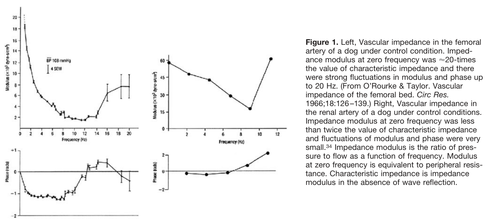
[3] Figure 1 · 동물 선행자료의 대퇴·신장 임피던스 · 인쇄201 / PDF 2쪽 위는 주파수별 임피던스 크기, 아래는 위상입니다. 대퇴와 신장의 0 Hz 저항·파반사 특성을 비교합니다.
[3] Figure 1 · 동물 선행자료의 대퇴·신장 임피던스 · 인쇄201 / PDF 2쪽 · 원문
원문 연결
C03 — These hallmarks of vascular aging increase cardiac afterload while failing to bolster diastolic filling, and allow transmission of highly pulsatile flow to the fragile small vessels of the brain and kidney.
원문 뜻: 이러한 혈관 노화의 특징은 심장 후부하를 증가시키고 이완기 충만을 충분히 돕지 못하며, 뇌와 신장의 취약한 소혈관으로 큰 박동성 혈류가 전달되게 한다.
내용 해설
종설의 핵심 논리는 뇌·신장과 다른 혈관상 사이 입력 임피던스가 다르다는 것이다. Figure 1은 개의 대퇴동맥(왼쪽)과 신장동맥(오른쪽)의 압력/혈류 비인 임피던스를 주파수별로 표시한다. 0 Hz 값은 평균 흐름에 대한 저항이고, 특성 임피던스는 파반사가 없는 경우의 혈관 자체 성질과 관련된다. 종설은 대퇴부의 0 Hz 저항이 특성 임피던스의 약 20배인 반면 신장에서는 2배 미만이라는 대비를 이용한다. 신장의 낮은 저항과 약한 반사는 높은 맥동 노출의 기전적 설명에 쓰인다. 사람의 뇌 미세혈관, 하지 관류, 보행을 이 도판에서 직접 측정한 것은 아니다. 본문 초록도 연관성의 기전을 설명하는 논리로 제시하고 추가 검증 필요성을 남긴다.
인용 범위
C03의 뇌·신장 소혈관 맥동 노출을 뒷받침하는 기전 종설. 도판의 종과 측정부위를 명시하며 사람의 보행 기전 실증과 구분한다.
선행연구 설계와 한계
[3] 연구 설계: 기전적 서술 종설, Hypertension 2005;46:200–204. 새 대규모 인체 연구가 아니라 선행 역학·동물·혈역학 자료를 통합해 원인과 치료 가설을 제시한다.
[3] 해석 범위: 원인·치료의 논리를 제시한 2005년 종설로, 임상 인과효과나 현재의 약물 우열을 검증하는 자료가 아니다. 한 가족의 3명 파형과 전형 연령 추정치를 대규모 표본 결과로 제시하지 않는다. 저자도 가설의 계속 검토와 향후 검증 필요성을 명시했다. 첫 저자는 파형분석기 제조사 AtCor Medical의 창립 이사라고 공개했다.
확인한 출처
[3] Relationship between aortic stiffening and microvascular disease in brain and kidney: cause and logic of therapy (2005); DOI 10.1161/01.hyp.0000168052.00426.65; 로컬 원문 ../인용논문_리딩룸/pdfs/03_ORourke_2005_AorticStiffness_Microvascular.pdf
인용문헌: [3]
원문 주장과 도판의 관계 : 문헌 3 Figure 1은 개의 대퇴·신장 동맥 임피던스 선행자료를 종설에서 재수록한 것이다. 신장은 0 Hz 임피던스가 특성임피던스의 2배 미만, 대퇴는 약 20배라는 기전 비교다. 두 열의 y축 배율이 다르다. 사람의 뇌 손상·신장 손상·보행을 측정한 그림은 아니다.
그림·표 읽기 해설 화면 단계 1 자료: Ref3 종설이 재수록한 개의 대퇴동맥(왼쪽)·신장동맥(오른쪽) 자료. 임피던스는 박동하는 흐름에서 압력과 혈류의 관계를 주파수별로 표현한 값이다.
축·열·범례: 위 두 패널의 X축은 Hz, Y축은 임피던스 크기다. 아래 두 패널은 같은 주파수에서 압력파와 혈류파의 위상차를 보여 준다. 0 Hz는 평균 흐름의 저항에 해당한다. 이를 높은 주파수에서의 특성 임피던스와 비교하면 말초 반사의 정도를 이해하는 데 도움이 된다. 좌우 Y축 배율이 달라 선의 절대 높이를 바로 비교해서는 안 된다.
관찰 결과: 대퇴의 0 Hz 저항은 특성 임피던스의 약 20배인 반면 신장은 2배 미만이라고 원 범례가 설명한다. 신장은 상대적으로 낮은 저항·작은 반사를 보이는 혈관상이다.
본문과의 연결: 낮은 저항의 고혈류 장기에서는 대동맥에서 온 맥동을 말초 반사로 차단하는 효과가 약할 수 있다는 기전적 배경이다. Watson의 뇌·신장 소혈관 맥동 노출 문장을 이해하게 한다.
해석 범위: 개의 대퇴·신장 자료이며 뇌를 측정하지 않았다. 신장/대퇴 자료의 원출처도 다르다. 이 그림만으로 사람의 뇌·신장 손상, 하지 관류 감소 또는 보행 저하를 입증할 수 없다.
Hz : 헤르츠 · SEM : 평균의 표준오차 · BP : 혈압 · PWV : 맥파전달속도
APPENDIX
Appendix : 동맥 순응도와 이완기 기능 동맥 순응도 저하와 이완기 기능장애의 관찰적 연관성 [5]
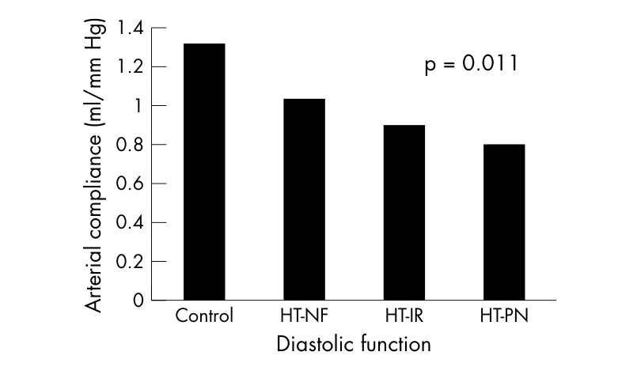
[5] Figure 1 · 이완기 기능별 동맥 순응도 · PDF 3쪽 / p.1553 가로는 이완기 기능군, 세로는 동맥 순응도입니다. 이완기 기능이 저하된 군에서 막대가 낮습니다.
[5] Figure 1 · 이완기 기능별 동맥 순응도 · PDF 3쪽 / p.1553 · 원문
원문 연결
C03 — These hallmarks of vascular aging increase cardiac afterload while failing to bolster diastolic filling, and allow transmission of highly pulsatile flow to the fragile small vessels of the brain and kidney.
원문 뜻: 이러한 혈관 노화의 특징은 심장 후부하를 증가시키고 이완기 충만을 충분히 돕지 못하며, 뇌와 신장의 취약한 소혈관으로 큰 박동성 혈류가 전달되게 한다.
내용 해설
평균 58±8세의 치료 중 고혈압 환자 70명 가운데 정상 이완기 기능 33명, 이완장애 37명(이완지연 28명, 가성정상 충만 9명)이었다. 정상혈압 대조군은 15명이다. Figure 1의 세로축은 arterial compliance(동맥 순응도, mL/mmHg)로 PWV와 같은 수치가 아니다. 순응도는 압력 변화에 따른 용적 변화를 나타내며 낮을수록 전반적으로 덜 유연한 동맥계와 관련된다. 평균값은 대조군 1.32, 고혈압/정상 이완기 기능 1.04, 이완지연 0.89, 가성정상 0.80 mL/mmHg이며 전체 비교 P=.011이다. 연령·성별·체격·혈압·좌심실비대 보정 후에도 관계가 보고됐다. 이는 고혈압성 심장질환에서의 관찰 관계이며 70–79세 지역사회 노인이나 보행 감소를 직접 추적한 결과가 아니다.
인용 범위
C03 묶음 인용 중 [5]가 직접 보완하는 부분은 심장 이완기 기능과 동맥 순응도의 연관성이다. 뇌·신장 손상을 이 연구가 동시에 측정했다고 소개하지 않는다.
선행연구 설계와 한계
[5] 연구 설계: 운동성 호흡곤란이 있는 치료 중 고혈압 환자 70명(58±8세; 여성 40명)과 정상혈압 대조군 15명. 조직 도플러·혈류 전파속도로 이완기 기능을 평가하고 맥압법으로 동맥 순응도를 구했다.
[5] 해석 범위: 소규모 선택 표본의 횡단 연관성. 원문은 인과관계를 직접 조사하지 않았다고 명시한다.
확인한 출처
[5] Relation of arterial stiffness to diastolic dysfunction in hypertensive heart disease (2005); DOI 10.1136/hrt.2004.046805; 로컬 원문 ../인용논문_리딩룸/pdfs/05_Mottram_2005_DiastolicDysfunction.pdf
인용문헌: [5]
원문 주장과 도판의 관계 : 문헌 5 Figure 1은 대조군, 정상 이완기 기능 고혈압, 이완장애, 가성정상화 집단의 동맥 순응도(mL/mmHg)를 비교한다. 집단 간 전체 ANOVA P=.011이다. 네 집단 모두의 쌍별 차이가 유의한 것은 아니며 PWV나 보행 속도의 그래프가 아니다.
그림·표 읽기 해설 화면 단계 1 자료: Mottram 등의 Figure 1. 정상혈압 대조군 15명과 고혈압 70명을 이완기 기능에 따라 나눈 집단의 동맥 순응도를 비교한다.
축·열·범례: 왼쪽부터 Control, HT-NF, HT-IR, HT-PN이다. 세로축 mL/mmHg는 압력이 변할 때 동맥계 용적이 얼마나 변할 수 있는지 나타내며 값이 낮으면 완충능이 낮은 쪽이다. 집단의 막대 높이를 비교하고 P=.011은 네 집단 전체의 ANOVA 검정이라는 점을 확인한다.
관찰 결과: 평균 순응도는 대조군 1.32, HT-NF 1.04, HT-IR .89, HT-PN .80 mL/mmHg이다. 모든 이웃 집단끼리 유의하게 다른 것을 뜻하지는 않는다.
본문과의 연결: 동맥의 완충 특성과 심장 이완기 기능이 관련된다는 인체 자료로, Watson의 “이완기 충만을 충분히 돕지 못한다”는 배경과 연결된다.
해석 범위: 횡단적 집단 비교이며 순응도 저하가 이완기 장애를 일으켰다는 인과 검정이 아니다. 보행을 측정하지 않았고, 각 군이 한 사람의 시간적 진행 단계도 아니다.
HT-NF : 정상 이완기 충만의 고혈압군 · HT-IR : 이완 지연 고혈압군 · HT-PN : 가성정상 충만 고혈압군 · PWV : 맥파전달속도 · P : 유의확률
APPENDIX
Appendix : 고혈압과 저항동맥 구조 고혈압에서 관찰되는 저항동맥의 구조·기능 변화 [6]
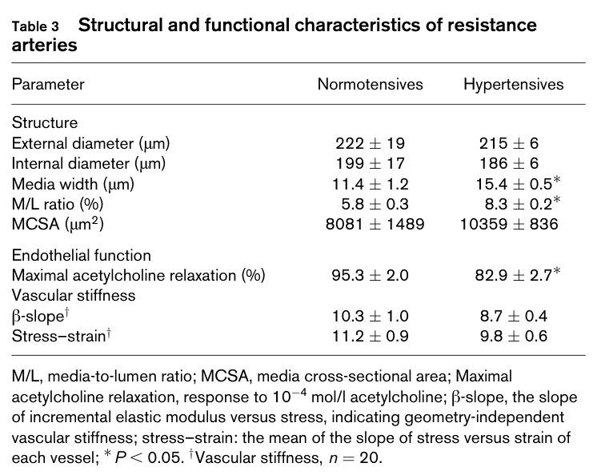
[6] Table 3 · 저항동맥 구조·이완 반응·경직 지표 · 인쇄 923 / PDF 3쪽 행은 혈관의 구조·기능 지표, 열은 두 혈압군입니다. 별표가 있는 차이와 없는 차이를 나눠 봅니다.
[6] Table 3 · 저항동맥 구조·이완 반응·경직 지표 · 인쇄 923 / PDF 3쪽 · 원문
원문 연결
C04 — Associated damaging central pressures may contribute to resistance vessel hypertrophy and increased vascular resistance,
원문 뜻: 이와 관련된 유해한 중심혈압은 저항혈관 비대와 혈관저항 증가에 기여할 수 있다.
내용 해설
둔부 피하 조직에서 내경 150–350 μm의 소동맥을 분리해 압력 근운동기로 평가했다. 현재 미치료 고혈압 환자 38명과 정상혈압 10명의 횡단 비교이며, 고혈압 9명은 과거 치료를 중단한 이력이 있다. Table 3 수치는 평균±SEM이다. 고혈압군에서 중막 두께와 중막/내강 비율은 높았고 최대 아세틸콜린 이완 반응은 낮았다. 반면 기하 독립적 경직 지표 β-slope는 정상 10.3±1.0 대 고혈압 8.7±0.4로 유의한 증가가 표시되지 않았다. 따라서 구조 이상과 모든 경직 지표의 증가를 같은 것으로 설명하지 않는다. 혈관 역학 측정은 정상 8명·고혈압 20명의 부분표본이다. Figure 1에는 원문 범례와 본문 사이 불일치가 있어 이 발표에서는 대조가 명확한 원 Table 3을 선택했다.
인용 범위
C04의 저항혈관 구조 변화에 대한 인체 관찰 근거. 중심동맥 경직→저항혈관 변화→보행 감소의 연속 매개 경로를 이 연구가 검정한 것은 아니다.
선행연구 설계와 한계
[6] 연구 설계: 고혈압 38명(평균 47.3세; 남 27명·여 11명)과 정상혈압 10명(44.2세; 남 4명·여 6명)의 횡단 비교. 둔부 피하 조직에서 내경 150–350 μm 소동맥을 분리해 pressurized myograph(압력 근운동기)로 구조·아세틸콜린 이완 반응을 평가했다. 고혈압군은 현재 미치료 상태이며, 9명은 과거 치료 후 최소 6개월 중단했다. 혈관 역학은 정상혈압 8명·고혈압 20명에서만 평가했다.
[6] 해석 범위: 소표본·횡단 비교이며 정상군이 10명으로 작고 성별 비율도 다르다. 피하 동맥 결과를 하지 근육의 관류로 직접 일반화할 수 없다. Figure 1의 색상 범례(검정=정상, 흰색=고혈압)는 본문·초록의 고혈압군 수치 97/58%, 63/34%와 불일치하므로 원도판을 수정하지 않고 불일치를 명시했다. 비정상 빈도는 1 SD/2 SD 기준 선택에 크게 좌우된다.
확인한 출처
[6] Small artery remodeling is the most prevalent (earliest?) form of target organ damage in mild essential hypertension (2001); DOI 10.1097/00004872-200105000-00013; 로컬 원문 ../인용논문_리딩룸/pdfs/06_Park_2001_SmallArteryRemodeling.pdf
인용문헌: [6]
원문 주장과 도판의 관계 : 문헌 6 Table 3은 고혈압/정상혈압의 저항동맥 구조·아세틸콜린 이완·역학 지표를 비교한다. 중막 두께와 M/L은 높고 최대 Ach 이완은 낮다. MCSA와 β-slope·stress–strain에는 같은 유의차 표시가 없다. 중심 PWV가 이 변화를 유발했다는 매개 분석은 아니다.
그림·표 읽기 해설 화면 단계 1 자료: Park·Schiffrin의 Table 3. 정상혈압 10명과 고혈압 38명의 피하 저항동맥을 비교했고, 역학 측정은 일부 대상자에서 수행했다.
축·열·범례: Normotensives와 Hypertensives 두 열을 같은 행에서 비교한다. Structure에는 바깥/안쪽 직경, 중막 두께, M/L, MCSA가 있고 Endothelial function에는 최대 Ach 이완, Vascular stiffness에는 β-slope·stress–strain이 있다. 값은 평균±SEM이며 별표는 P<.05이다. 굵은 벽·높은 비율과 경직 지표를 같은 뜻으로 읽지 않는다.
관찰 결과: 고혈압군은 중막 두께 15.4 대 11.4 μm, M/L 8.3 대 5.8%로 높고, Ach 이완은 82.9 대 95.3%로 낮다. MCSA·β-slope·stress–strain에는 같은 유의차 표시가 없다.
본문과의 연결: 고혈압에서 저항혈관의 구조·기능 변화가 실제로 관찰된다는 자료다. Watson이 제안한 저항혈관 비대·혈관저항 증가의 생물학적 배경을 제공한다.
해석 범위: 중심 PWV를 원인으로 두고 저항동맥 변화가 매개되는지 검정한 연구는 아니다. 피하 동맥 결과를 하지 근육 관류로 직접 바꿀 수 없으며, 구조 이상이 곧 모든 경직 지표의 증가라는 뜻도 아니다.
M/L : 중막/내강 비율 · MCSA : 중막 단면적 · Ach : 아세틸콜린 · β-slope : 탄성계수–응력 관계의 기울기 · SEM : 평균의 표준오차 · PWV : 맥파전달속도
APPENDIX
Appendix : 대동맥 경직도와 말초 미세혈관 반응 대동맥 PWV와 말초 미세혈관저항의 횡단면 연관성 [8]
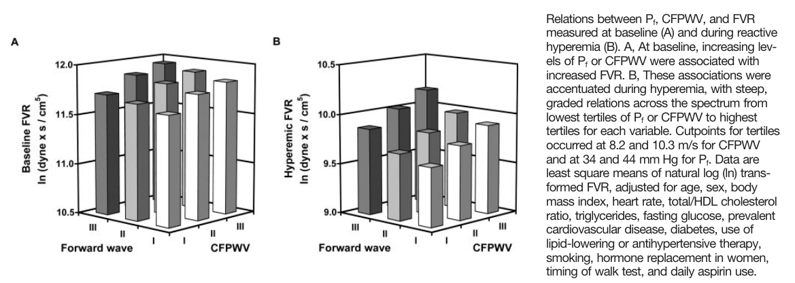
[8] Figure (A–B): PWV·전진파와 전완혈관저항 · 인쇄 p.3726 / PDF p.5, 상단 원본 도판과 범례 A는 안정 상태, B는 반응성 충혈 때의 전완저항입니다. 세로축은 저항을 로그 변환한 값입니다.
[8] Figure (A–B): PWV·전진파와 전완혈관저항 · 인쇄 p.3726 / PDF p.5, 상단 원본 도판과 범례 · 원문
원문 연결
C05 — impeding blood flow to the peripheral microvasculature;
원문 뜻: 그 결과 말초 미세혈관으로 가는 혈류가 제한될 수 있다.
내용 해설
대상자는 평균 61±9세의 Framingham Offspring 참여자 2,045명(여성 1,107명)이다. 5분 전완 허혈 전후 도플러 혈류와 전완혈관저항(FVR)을 측정하고 경동맥–대퇴동맥 PWV(CFPWV) 및 전진 압력파 진폭(Pf)과 비교했다. 그림 A는 기저, B는 충혈 시 ln(FVR)의 보정 평균이다. 두 가로 방향은 CFPWV 삼분위와 Pf 삼분위이며 세로축이 자연로그 변환된 저항임을 확인한다. 원 범례의 보정 변수에는 연령, 성별, BMI, 심박수, 위험요인, 약물 등이 포함된다. Table 5에서는 CFPWV 1 SD 증가당 충혈 혈류속도 계수 −2.27 cm/s(SE .57, P<.001), CFPWV와 Pf 동시 모형에서도 −1.95 cm/s(P<.001)였다. 앞선 FMD 발표의 직경 확장률과 달리 여기서는 충혈 혈류·저항이 주요 결과다. 하지 관류와 보행을 직접 측정하지 않았다.
인용 범위
C05의 말초 미세혈관 혈류 제한 가능성을 뒷받침하는 인간 자료. 전완의 횡단 연관성을 하지 보행의 인과 경로로 확대하지 않는다.
선행연구 설계와 한계
[8] 연구 설계: Framingham Offspring 2,045명(여성 1,107명; 61±9세)의 횡단 연구. 5분 전완 커프 폐쇄 전후의 도플러 혈류와 전완혈관저항(FVR)을 측정하고 경동맥-대퇴동맥 PWV(CFPWV), 맥압, 전진파 진폭(Pf)과 비교.
[8] 해석 범위: 횡단 설계라 인과를 판정할 수 없다. 주로 백인인 중·고령 지역사회 표본이며 전완용적을 직접 측정하지 않았다.
확인한 출처
[8] Cross-sectional relations of peripheral microvascular function, cardiovascular disease risk factors, and aortic stiffness: the Framingham Heart Study (2005); DOI 10.1161/circulationaha.105.551168; 로컬 원문 ../인용논문_리딩룸/pdfs/08_Mitchell_2005_MicrovascularFunction.pdf
인용문헌: [8]
원문 주장과 도판의 관계 : 문헌 8 원그림은 전진파 진폭과 CFPWV 삼분위 조합에 따른 보정 ln(FVR)의 평균을 기저/충혈 조건에서 비교한다. 전완의 횡단 연관성이며 하지 관류·보행 감소를 직접 측정한 그림이 아니다. 두 패널의 y축 범위도 다르다.
그림·표 읽기 해설 화면 단계 1 자료: Mitchell 등의 Framingham Offspring 연구 도판. 2,045명에서 전완 허혈 전후 FVR과 경동맥–대퇴동맥 PWV·전진파 진폭을 비교했다.
축·열·범례: 각 3차원 그래프의 두 가로 방향은 CFPWV I–III와 전진파 I–III의 조합이다. I는 낮고 III는 높은 삼분위군이다. 세로축은 ln(FVR)의 보정 평균이며 단순한 원래 저항값이 아니다. A와 B의 세로 눈금 범위가 다르므로 막대의 절대 높이만으로 두 상태의 저항을 비교하지 않는다. 각 패널 안에서 낮음/높음 조합의 경향을 본다.
관찰 결과: PWV·전진파 진폭이 큰 조합에서 FVR이 높은 경향이 있으며, 이 경향이 B의 반응성 충혈에서 더 뚜렷하다. 혈관이 충분히 확장되어야 할 조건에서도 높은 저항이 남는다는 뜻이다.
본문과의 연결: 대동맥 특성이 말초 미세혈관의 혈류 여건과 관련된다는 실제 인체 결과여서 Watson의 “말초 미세혈관 혈류가 제한될 수 있다”는 절을 뒷받침한다.
해석 범위: 같은 시점의 연관성이므로 경직도가 저항을 높였다고 단정할 수 없다. 전완 측정이며 하지 근육 관류·보행을 직접 검정하지 않았다. FMD의 직경 확장률과도 다른 결과다.
PWV : 맥파전달속도 · CFPWV : 경동맥–대퇴동맥 맥파전달속도 · Pf : 전진 압력파 진폭 · FVR : 전완혈관저항 · ln : 자연로그 · I–III : 제1–제3 삼분위군
APPENDIX
Appendix : 대동맥 탄성구조의 노화 노화에 따른 대동맥 탄성구조 변화 → 완충능 소실의 구조적 배경 [2]
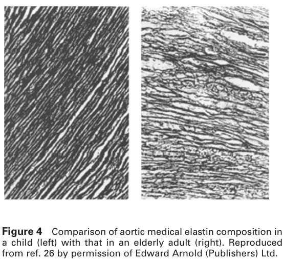
[2] Figure 4: 대동맥 탄성조직 비교 · 인쇄p332 / PDFp4 왼쪽은 소아, 오른쪽은 고령자의 탄성조직입니다. 배열의 차이를 보는 사진이며 수치 그래프가 아닙니다.
[2] Figure 4: 대동맥 탄성조직 비교 · 인쇄p332 / PDFp4 · 원문
원문 연결
C02 — Clinical consequences of arterial stiffness have been attributed to early wave reflection from the periphery and concurrent loss of cushioning capacity of the aorta.
원문 뜻: 동맥 경직의 임상적 결과는 말초에서 돌아오는 반사파의 조기 도착과 대동맥 완충능력의 동시 감소로 설명되어 왔다.
내용 해설
왼쪽은 소아, 오른쪽은 고령자의 대동맥 중막 탄성조직이다. 원 종설은 노화에 따른 탄성판의 피로와 파괴, 상대적으로 단단한 콜라겐 성분으로의 응력 전달을 대동맥 경직의 주요 생리적 설명으로 제시한다. 사진은 원 종설이 이전 문헌에서 재수록한 조직 비교이며, 현재 주논문 대상자의 혈관 조직이나 새 실험 자료가 아니다. 이 사진만으로 개인별 PWV 수치나 보행 속도 변화량을 계산할 수 없다. 동맥 경직이라는 기계적 특성이 실제 조직 수준에서 무엇을 뜻하는지 시각적으로 이해하는 데 사용한다.
인용 범위
C02의 대동맥 완충능 상실에 관한 생리학적 배경. 조직사진은 기전의 시각적 예시이며 보행 결과에 대한 직접 근거가 아니다.
선행연구 설계와 한계
[2] 연구 설계: 동맥 노화의 기계적·생리학적 원리를 설명하는 서술적 문헌고찰. 새로운 개입 실험이 아니다.
[2] 해석 범위: 서술적 기전 고찰이며 여러 도식이 이전 문헌의 재수록이다. Figure3은 개념도이고 Figure4는 재수록 조직사진이므로 이 논문의 새 임상시험 결과로 소개하지 않는다.
확인한 출처
[2] Arterial aging: pathophysiological principles (2007); DOI 10.1177/1358863x07083392; 로컬 원문 ../인용논문_리딩룸/pdfs/02_ORourke_2007_ArterialAging.pdf
인용문헌: [2]
원문 주장과 도판의 관계 : Figure 4는 소아와 고령자의 대동맥 중막 엘라스틴 조성·배열을 비교한 종설 재수록 조직사진이다. 사진에 PWV, 혈압, 보행 속도 측정이나 정량적 콜라겐 양은 없다.
그림·표 읽기 해설 화면 단계 1 자료: O’Rourke 종설 Figure 4에 재수록된 소아/고령자 대동맥 중막 엘라스틴 조직사진.
축·열·범례: 두 패널의 조직층 배열을 비교한다. 가로·세로 좌표를 측정변수의 축처럼 읽거나 검은색 면적을 PWV·콜라겐 양으로 바꾸지 않는다.
관찰 결과: 두 연령의 탄성층 모습이 다르다는 구조적 예시다. 표본 전체의 평균 차이나 정량 효과를 제공하지 않는다.
본문과의 연결: Watson의 대동맥 완충능 소실을 이해하는 구조적 배경을 제공한다.
해석 범위: 사진만으로 노화가 PWV·혈압·보행을 얼마나 바꾸는지, 콜라겐이 얼마 늘었는지 알 수 없다.
APPENDIX
Appendix : 중심동맥 압력파의 연령별 예시 혈관 노화는 중심동맥의 맥동 부담을 키울 수 있다. 이 세 사람의 예시에서는 대동맥 맥압 차이가 더 컸다.
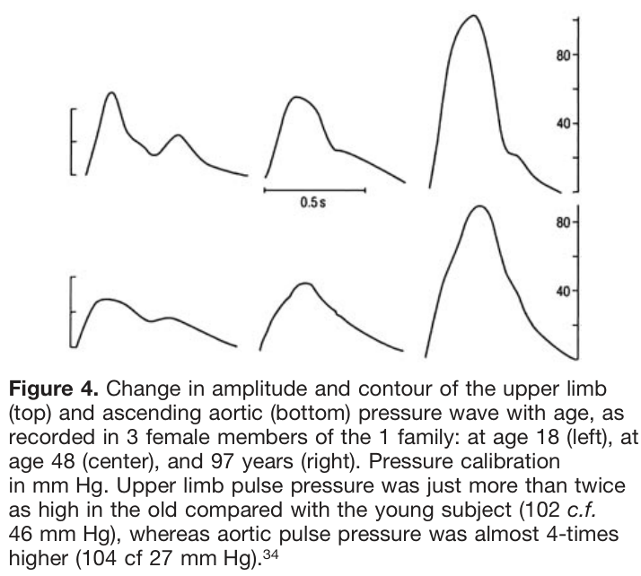
[3] Figure 4 · 한 가족 여성 3명의 파형 예시 · 인쇄202 / PDF 3쪽 세 열은 18·48·97세의 서로 다른 사람입니다. 위 상지와 아래 대동맥의 맥압 차이를 비교합니다.
[3] Figure 4 · 한 가족 여성 3명의 파형 예시 · 인쇄202 / PDF 3쪽 · 원문
원문 연결
C03 — These hallmarks of vascular aging increase cardiac afterload while failing to bolster diastolic filling, and allow transmission of highly pulsatile flow to the fragile small vessels of the brain and kidney.
원문 뜻: 이러한 혈관 노화의 특징은 심장 후부하를 증가시키고 이완기 충만을 충분히 돕지 못하며, 뇌와 신장의 취약한 소혈관으로 큰 박동성 혈류가 전달되게 한다.
내용 해설
Figure 4 위는 상지 압력파, 아래는 상행대동맥 압력파다. 왼쪽부터 한 가족의 18세, 48세, 97세 여성 3명이다. 같은 사람을 18세에서 97세까지 추적한 그림이 아니다. 원 범례는 최연소와 최고령의 상지 맥압 46 대 102 mmHg, 대동맥 맥압 27 대 104 mmHg를 제시한다. 중심 맥압의 연령별 차이가 상완 맥압보다 클 수 있음을 보이는 선택된 예시다. 표본이 3명뿐이므로 일반적인 고령자 평균, 개인의 보행 속도 감소량 또는 4배 변화의 보편 법칙으로 제시하지 않는다. 이 페이지는 대동맥 경직의 기전 설명에 실제 파형 모양을 연결한다.
인용 범위
C03의 맥동성 부담 설명에 대한 시각적 보조 예시. 새 전향 연구나 대표 연령군 비교로 소개하지 않는다.
선행연구 설계와 한계
[3] 연구 설계: 기전적 서술 종설, Hypertension 2005;46:200–204. 새 대규모 인체 연구가 아니라 선행 역학·동물·혈역학 자료를 통합해 원인과 치료 가설을 제시한다.
[3] 해석 범위: 원인·치료의 논리를 제시한 2005년 종설로, 임상 인과효과나 현재의 약물 우열을 검증하는 자료가 아니다. 한 가족의 3명 파형과 전형 연령 추정치를 대규모 표본 결과로 제시하지 않는다. 저자도 가설의 계속 검토와 향후 검증 필요성을 명시했다. 첫 저자는 파형분석기 제조사 AtCor Medical의 창립 이사라고 공개했다.
확인한 출처
[3] Relationship between aortic stiffening and microvascular disease in brain and kidney: cause and logic of therapy (2005); DOI 10.1161/01.hyp.0000168052.00426.65; 로컬 원문 ../인용논문_리딩룸/pdfs/03_ORourke_2005_AorticStiffness_Microvascular.pdf
인용문헌: [3]
원문 주장과 도판의 관계 : Figure 4는 한 가족 여성 18·48·97세의 상지 및 상행대동맥 압력파를 비교한 단면 예시다. 고령자 대 젊은 사람의 상지 맥압 102 대 46 mmHg, 대동맥 맥압 104 대 27 mmHg이다. 대표 연령군 평균이나 동일인의 79년 추적 결과가 아니다.
그림·표 읽기 해설 화면 단계 1 자료: Ref3 Figure 4. 한 가족의 여성 3명에서 기록한 상지(위)와 상행대동맥(아래) 압력파형 예시.
축·열·범례: 왼쪽부터 18세, 48세, 97세다. 각 파형의 가로는 한 심장주기 내 시간, 세로는 압력이다. 같은 행에서 젊은/고령자의 파형을 비교하고, 이어 위·아래 행에서 맥압의 연령별 차이가 얼마나 다른지 본다. 맥압은 파형 최고압과 최저압의 차이다.
관찰 결과: 젊은/고령자 상지 PP는 46 대 102 mmHg, 대동맥 PP는 27 대 104 mmHg로 제시된다. 이 예시에서는 중심 맥압의 차이가 더 크다.
본문과의 연결: 노화와 함께 중심동맥의 맥동 부담이 커질 수 있고 말초 커프 혈압만으로 그 변화를 다 보기 어렵다는 설명을 돕는다.
해석 범위: 3명이라는 사례이며 같은 사람을 18세부터 97세까지 추적한 자료가 아니다. 대표 연령군의 평균·인과 효과나 뇌 손상 자료도 아니다.
PP : 맥압
APPENDIX
Appendix : 대혈관에서 미세혈관으로의 압력 감쇠 대혈관의 맥동 감쇠와 미세혈관 압력 노출을 연결하는 기전 [4]
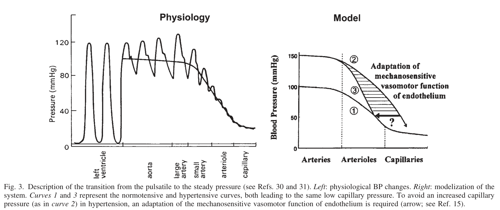
[4] Figure 3 · 박동성 압력의 감쇠와 자기조절 모델 · 인쇄 H3 / PDF 3쪽 가로는 시간이 아니라 혈관의 위치입니다. 오른쪽은 낮은 모세혈관 압력을 유지하는 곡선 1·3과 곡선 2를 비교합니다.
[4] Figure 3 · 박동성 압력의 감쇠와 자기조절 모델 · 인쇄 H3 / PDF 3쪽 · 원문
원문 연결
C03 — These hallmarks of vascular aging increase cardiac afterload while failing to bolster diastolic filling, and allow transmission of highly pulsatile flow to the fragile small vessels of the brain and kidney.
원문 뜻: 이러한 혈관 노화의 특징은 심장 후부하를 증가시키고 이완기 충만을 충분히 돕지 못하며, 뇌와 신장의 취약한 소혈관으로 큰 박동성 혈류가 전달되게 한다.
내용 해설
원 Figure 3 왼쪽의 가로축은 좌심실→대동맥→대동맥 분지→세동맥→모세혈관으로 이어지는 순환 위치, 세로축은 압력(mmHg)이다. 오른쪽은 정상혈압과 고혈압의 압력 감쇠를 설명한 모형이다. 곡선 1과 3은 낮은 모세혈관 압력에 도달하지만, 곡선 2는 보호적 혈관운동 적응이 충분하지 않은 상황이다. 저자는 노인·고혈압 등에서 보호 기전이 둔화될 때 맥압이 미세순환으로 전달되어 장기 손상에 기여할 수 있다는 working hypothesis를 제시한다. 이 곡선들은 같은 표본에서 실측한 세 치료군 평균이 아니며 인과효과나 보행속도 효과크기를 제시하지 않는다.
인용 범위
C03의 맥동 전달과 소혈관 손상 가능성을 설명하는 초청 종설. 실제 장기 손상을 이 도식만으로 확인한 것은 아니다.
선행연구 설계와 한계
[4] 연구 설계: Invited Review(초청 종설), 인쇄 H1–H7. 혈역학 개념과 선행 인체·세포·동물 연구를 통합한다. 선택한 Figure 2–4는 선행 문헌을 바탕으로 한 설명도이며 새 표본의 실험 결과 그래프가 아니다.
[4] 해석 범위: 새 관찰 표본이나 무작위시험이 없는 2007년 서술적 종설이다. Figure 2–3은 선행 참고문헌 30·31을, Figure 4는 19·20을 바탕으로 한 설명도다. 각 도식의 화살표·곡선을 실제 환자에서 추정한 효과나 보행 치료효과로 해석하지 않는다.
확인한 출처
[4] Disturbance of macro- and microcirculation: relations with pulse pressure and cardiac organ damage (2007); DOI 10.1152/ajpheart.00063.2007; 로컬 원문 ../인용논문_리딩룸/pdfs/04_Safar_2007_MacroMicrocirculation.pdf
인용문헌: [4]
원문 주장과 도판의 관계 : 문헌 4 Figure 3의 왼쪽은 박동성 압력에서 정상압으로의 생리학적 이행, 오른쪽은 보호 적응을 설명한 모형이다. 곡선 1·3은 같은 낮은 모세혈관 압력에 도달하며 곡선 2는 보호 적응이 부족한 경우다. x축은 시간이 아니라 혈관의 위치다.
그림·표 읽기 해설 화면 단계 1 자료: Safar·Lacolley의 Figure 3. 왼쪽은 생리학적 압력 이행, 오른쪽은 보호 적응을 설명하는 모형.
축·열·범례: 왼쪽 X축은 좌심실→대동맥→큰/작은 동맥→세동맥→모세혈관의 위치이며 Y축은 압력이다. 박동은 혈관을 따라 작아지고 평균압도 떨어진다. 오른쪽 X축도 혈관 위치이며 곡선 1은 정상혈압, 3은 보호적 적응이 있는 고혈압으로 같은 낮은 모세혈관 압력에 도달한다. 곡선 2는 높은 압력이 더 전달되는 경우다.
관찰 결과: 같은 높은 상류 압력이라도 보호적 조절이 있으면 모세혈관 압력을 낮게 유지할 수 있다는 원리를 제시한다.
본문과의 연결: 큰 동맥의 압력·맥동이 소혈관으로 전달되는 정도에 말초 조절이 관여한다는 Watson 배경 문장의 기전적 설명이다.
해석 범위: 실제 치료 전후의 자료가 아니라 모형이다. x축을 시간으로 읽거나 곡선 2→3을 이 연구가 입증한 치료효과로 소개하지 않는다.
BP : 혈압
APPENDIX
Appendix : 저항동맥 재형성의 유형 저항동맥 재형성과 혈관저항 증가의 구조적 설명 [7]
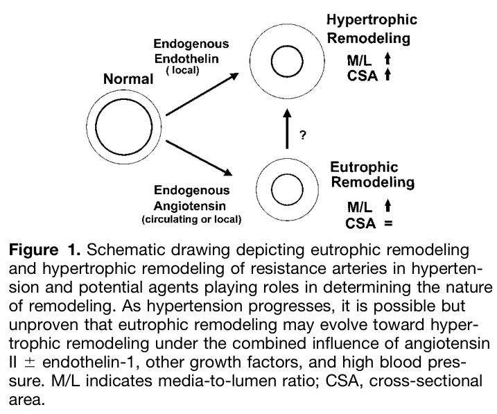
[7] Figure 1 · eutrophic·hypertrophic 재형성 구분 · 인쇄313 / PDF 2쪽 두 유형 모두 M/L은 높아집니다. 실제 벽 조직의 양이 늘어나는지는 CSA로 구분합니다.
[7] Figure 1 · eutrophic·hypertrophic 재형성 구분 · 인쇄313 / PDF 2쪽 · 원문
원문 연결
C04 — Associated damaging central pressures may contribute to resistance vessel hypertrophy and increased vascular resistance,
원문 뜻: 이와 관련된 유해한 중심혈압은 저항혈관 비대와 혈관저항 증가에 기여할 수 있다.
내용 해설
저항혈관의 내강이 작아지면 말초 혈관저항이 증가할 수 있다는 기전 종설이다. 원 Figure 1에서 M/L은 media/lumen ratio(중막/내강 비율), CSA는 cross-sectional area(단면적)다. eutrophic 유형은 기존 벽 물질이 재배열되어 내강과 외경이 작아지지만 중막 단면적은 유지된다. hypertrophic 유형은 중막 물질의 증가가 동반된다. 두 유형 모두 M/L이 커질 수 있으므로 M/L 증가를 곧바로 비대라고 읽지 않는다. 두 유형 사이의 수직 화살표에 물음표가 붙어 있고, 범례도 eutrophic에서 hypertrophic으로 진행할 가능성은 입증되지 않았다고 명시한다. 이 그림은 선행 사람·동물·세포 자료를 통합한 설명도이며 새로운 PAD 보행 실험 결과가 아니다.
인용 범위
C04에서 [6]의 실제 구조 자료와 [7]의 구조·역학 기전을 함께 연결한다. 원문의 may라는 가능성 표현을 유지한다.
선행연구 설계와 한계
[7] 연구 설계: Brief Review(간략 종설), Hypertension 2000;36:312–318. 사람·실험동물·세포 연구의 선행 증거를 통합하며 선택한 Figure1·2는 설명도다. 새 임상 표본이나 보행 결과·치료 효과크기를 제시하지 않는다.
[7] 해석 범위: 사람·동물·세포의 서로 다른 혈관 부위와 측정법을 통합한 2000년 종설이다. 구조와 역학은 혈압·기하·분지 차수에 따라 달라질 수 있다. Figure1의 유형 간 진행은 미검증 가설이고 Figure2는 신호 경로 설명도다. 동맥 경직이 원인이 되어 이 경로로 보행을 저하시킨다는 매개효과를 직접 입증하지 않았다.
확인한 출처
[7] Structure and mechanical properties of resistance arteries in hypertension: role of adhesion molecules and extracellular matrix determinants (2000); DOI 10.1161/01.hyp.36.3.312; 로컬 원문 ../인용논문_리딩룸/pdfs/07_Intengan_2000_ResistanceArteryRemodeling_Review.pdf
인용문헌: [7]
원문 주장과 도판의 관계 : 문헌 7 Figure 1은 eutrophic/hypertrophic remodeling의 개념 분류다. 두 유형 모두 M/L은 증가하지만 CSA 증가는 hypertrophic에서만 나타난다. 두 유형 사이의 물음표 화살표는 시간적 진행이 입증되지 않았음을 뜻한다.
그림·표 읽기 해설 화면 단계 1 자료: Intengan·Schiffrin의 Figure 1. 정상 저항동맥에서 eutrophic 또는 hypertrophic remodeling을 개념적으로 구분했다.
축·열·범례: 왼쪽 Normal의 원과 두 갈래 화살표를 먼저 본다. Eutrophic은 M/L↑·CSA=로 벽 물질의 재배열, Hypertrophic은 M/L↑·CSA↑로 벽 조직의 증가를 표현한다. 원의 내강과 벽을 비교한다. 두 유형 사이의 위쪽 화살표에는 물음표가 있다.
관찰 결과: 벽/내강 비율이 높다는 사실만으로 벽 조직량의 실제 증가를 뜻하지 않는다. 실제 비대와 재배열을 구분해야 한다.
본문과의 연결: Watson의 “resistance vessel hypertrophy”가 어떤 구조 변화를 의미할 수 있는지 구체화한다.
해석 범위: 개념 분류이지 새 환자 자료가 아니다. 물음표 화살표를 확정된 진행 경로로 바꾸지 않는다. 중심 PWV가 이 경로를 통해 보행을 낮춘다는 매개 검정도 아니다.
M/L : 중막/내강 비율 · CSA : 단면적
APPENDIX
Appendix : AAI와 연간 보행 속도 감소 낮은 AAI와 이후 보행 속도 감소의 연관성 [9]
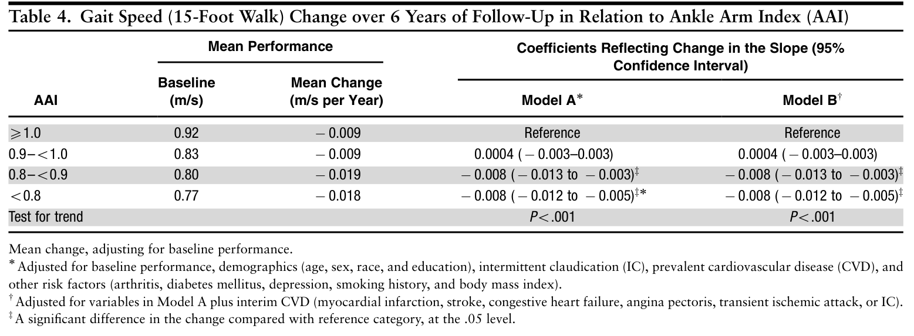
[9] Table 4 · 6년 보행속도 변화 · PDF 6쪽 / p.1042 왼쪽은 각 군의 연간 변화, 오른쪽은 기준군보다 얼마나 더 감소했는지입니다. 두 숫자는 같은 뜻이 아닙니다.
[9] Table 4 · 6년 보행속도 변화 · PDF 6쪽 / p.1042 · 원문
원문 연결
C06 — Several studies of older adults have identified obstructive peripheral arterial disease (PAD) as an important predictor of incident physical disability or gait speed decline.
원문 뜻: 노인 대상 여러 연구는 폐색성 말초동맥질환(PAD)을 새로운 신체장애 발생 또는 보행속도 저하의 중요한 예측요인으로 보고했다.
내용 해설
원 Table 4의 보행 속도 분석 표본은 4,344명이며, 15-foot walk로 매년 측정해 6년 추적했다. 표 왼쪽은 기저 보행 속도와 연간 평균 변화, 오른쪽은 기준 AAI≥1.0 대비 변화 기울기의 차이와 95% CI다. AAI .8–<.9군의 기울기 차이는 Model B −.008(−.013~−.003), AAI<.8군은 −.008(−.012~−.005) m/s/년이다. 따라서 단순히 각 군의 음수 시간계수를 나열하는 것에 더해 군간 기울기 차이를 직접 보고한 선행연구다. Watson 표 3에서 PAD군과 비PAD군 Time 계수만 보고 군간 유의차를 추론하는 것과 구분된다. 이 연구의 원 Model A/B는 현재 주논문의 Model 1/2/3과 보정 변수·목적이 다르다. 기능이 나쁜 사람의 보행 검사 누락 가능성이 남는다.
인용 범위
C06의 gait speed decline을 직접 뒷받침하는 종단 자료. 원표의 연간 변화와 기준군 대비 기울기 차이를 구분한다.
선행연구 설계와 한계
[9] 연구 설계: Cardiovascular Health Study 고령자 4,705명(여성 58%, 흑인 17.6%)을 6년 추적. 기저 AAI와 매년 측정한 보행속도 및 장애를 비교. 전체4705명 중 보행속도 분석4344명, 새 이동장애 분석3048명, ADL/IADL 장애 분석2555명으로 결과별 표본 수가 다르다.
[9] 해석 범위: 이동·ADL/IADL 장애는 자기보고이며 가장 허약한 대상자의 보행검사 누락에 따른 선택편향 가능성이 있다. 보행속도 연간 감소율을 결과별 표본 수·보정 차이와 함께 읽는다.
확인한 출처
[9] Incident physical disability in people with lower extremity peripheral arterial disease: the role of cardiovascular disease (2008); DOI 10.1111/j.1532-5415.2008.01719.x; 로컬 원문 ../인용논문_리딩룸/pdfs/09_Brach_2008_PAD_PhysicalDisability.pdf
인용문헌: [9]
원문 주장과 도판의 관계 : 문헌 9 Table 4는 15-foot 보행의 기저 속도, 연간 평균 변화, 기준 AAI≥1.0 대비 보정 기울기 차이를 구분한다. AAI 0.8–<0.9와 <0.8의 Model B 기울기 차이가 각각 −.008 m/s/년이다. 단면 기저 속도 차이나 Watson의 PWV 계수와 다른 결과다.
그림·표 읽기 해설 화면 단계 1 자료: Brach 등의 Table 4. AAI 범주별 기저 보행 속도, 6년 추적의 연간 변화, 기준 AAI≥1.0 대비 기울기 차이를 보여 준다. 보행 속도 분석 표본은 4,344명이다.
축·열·범례: 행은 AAI 범주다. Baseline은 처음 속도(m/s), Mean Change는 연간 평균 변화(m/s/년)이며 기저 수행을 보정했다. 오른쪽 Model A/B는 기준 AAI≥1.0보다 추가로 얼마 더 변하는지 나타낸 계수와 CI다. Model B는 A에 추적 중 발생한 심혈관질환까지 추가 보정한 선행연구의 모형이다. 음수이면 기준군보다 더 감소한다.
관찰 결과: 기준군의 Mean Change는 −.009, AAI .8–<.9와 <.8은 −.019·−.018 m/s/년이다. 두 낮은 군의 Model B 추가 기울기는 모두 약 −.008 m/s/년이며 CI가 0을 포함하지 않는다.
본문과의 연결: 낮은 기저 AAI와 이후 더 빠른 보행 감소를 직접 연결한 종단 결과다. Watson이 PAD를 향후 기능 저하의 예측인자라고 소개한 근거 중 하나다.
해석 범위: 기저 속도의 사람 간 차이, 각 군의 연간 감소, 군간 감소율 차이를 구분한다. 이 Model A/B는 Watson의 Model 1/2/3과 다르다. PWV를 검정한 결과도 아니며 관찰 자료라 치료 효과로 해석할 수 없다.
AAI : 발목–팔 지수 · CI : 신뢰구간 · CVD : 심혈관질환 · IC : 간헐적 파행
APPENDIX
Appendix : PAD·하지 힘·보행 속도 PAD와 하지 힘 저하·느린 보행·기능 의존의 연관성 [10]
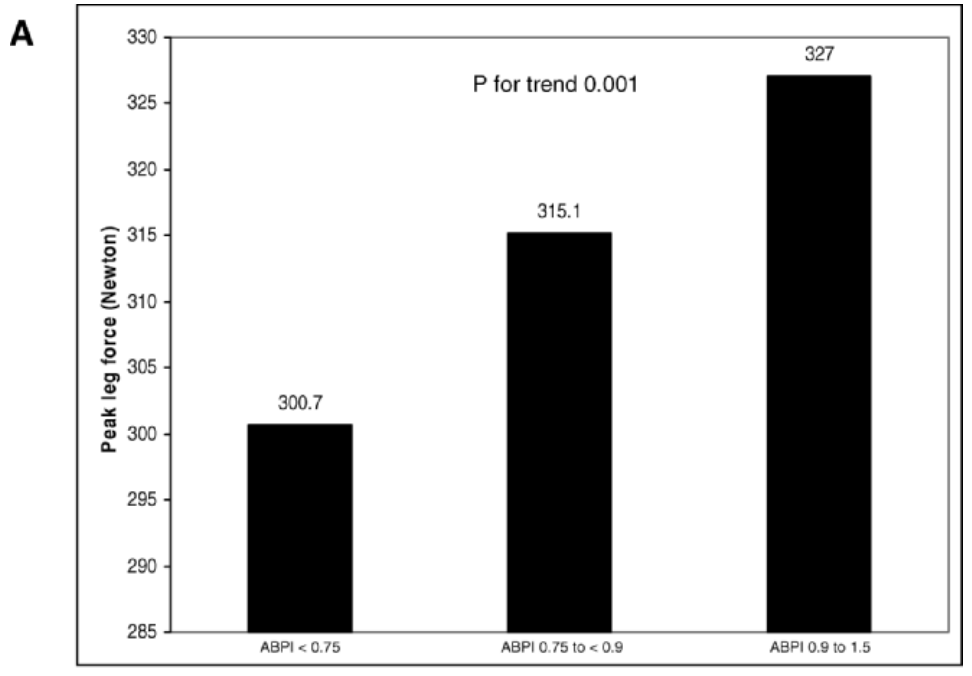
[10] Figure 2 · 패널 A · 인쇄p388 / PDFp5 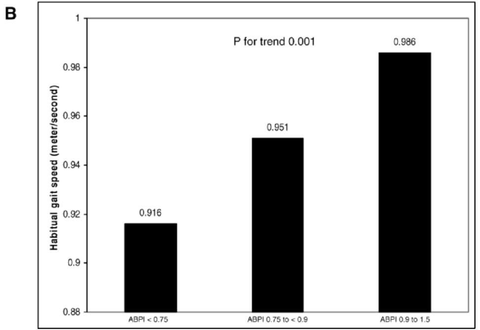
[10] Figure 2 · 패널 B · 인쇄p388 / PDFp5 왼쪽은 다리힘, 오른쪽은 보행 속도입니다. 세 집단의 보정 평균을 각각 같은 그래프 안에서 비교합니다.
A의 세로축은 최대 다리힘(N)입니다. 낮은 ABPI군에서 보정 다리힘이 낮습니다.
B의 세로축은 보행 속도(m/s)입니다. 낮은 ABPI군은 느리지만 연간 감소량을 뜻하지는 않습니다.
[10] Figure 2 · 패널 A · 인쇄p388 / PDFp5 | [10] Figure 2 · 패널 B · 인쇄p388 / PDFp5 · 원문
원문 연결
C06 — Several studies of older adults have identified obstructive peripheral arterial disease (PAD) as an important predictor of incident physical disability or gait speed decline.
원문 뜻: 노인 대상 여러 연구는 폐색성 말초동맥질환(PAD)을 새로운 신체장애 발생 또는 보행속도 저하의 중요한 예측요인으로 보고했다.
내용 해설
ABPI 또는 ABI는 ankle–brachial pressure index(발목–상완 혈압 지수)로 이 주제의 AAI와 같은 계열의 지표다. Figure 2 A는 등속성 검사기의 최대 다리힘(N), B는 20-foot timed walk의 평상시 보행 속도(m/s)이다. ABPI<.75(n=91), .75–<.9(n=115), .9–1.5(n=1,592)의 보정 평균 보행 속도는 .916, .951, .986 m/s이며 추세 P=.001이다. Table 3의 이분형 PAD 계수는 −.050 m/s(SE .016, P=.002), 다리힘까지 보정하면 −.038 m/s(SE .016, P=.016)이다. 원래 1999–2002 NHANES의 횡단 분석으로 같은 사람의 연간 변화율을 측정한 그림이 아니다. 다리힘이 관계를 일부 설명할 가능성은 있지만 시간적 매개 인과를 확정할 수 없다. 최종 표본 선택과 비가중 분석에 따른 일반화 제한도 있다.
인용 범위
C06의 세 인용 중 [10]은 느린 보행·기능 의존성의 횡단 근거다. 이 논문 자체를 향후 보행 감소율의 전향적 예측 연구라고 소개하지 않는다.
선행연구 설계와 한계
[10] 연구 설계: 미국 NHANES 1999–2002의 60세 이상 1,798명을 분석한 횡단 연구. PAD는 어느 한 다리 ABI<0.9로 정의. 등속성 근력검사·20피트 보행검사·자기보고 기능 자료 사용.
[10] 해석 범위: 횡단자료이므로 기능 저하의 선후관계와 매개 인과를 확정할 수 없다. 기능 설문 대상자의 약 51%가 최종 분석에서 제외되었고, 선택된 부분표본이라 NHANES 인구 가중치를 사용하지 않아 전체 미국 고령자로 일반화하는 데 제한이 있다.
확인한 출처
[10] The relation of peripheral arterial disease to leg force, gait speed, and functional dependence among older adults (2008); DOI 10.1093/gerona/63.4.384; 로컬 원문 ../인용논문_리딩룸/pdfs/10_Kuo_2008_PAD_LegForce_Gait.pdf
인용문헌: [10]
원문 주장과 도판의 관계 : 문헌 10 Figure 2 A/B는 ABPI 세 범주의 보정 최대 다리힘·평상시 보행 속도를 비교한 횡단 결과다. 낮은 두 범주는 PAD, 기준은 ABPI .9–1.5다. 두 y축은 0에서 시작하지 않는다. 두 패널은 시간적 매개 인과나 향후 감소율을 검정하지 않는다.
그림·표 읽기 해설 화면 단계 1 자료: Kuo·Yu의 Figure 2 A/B. ABPI 세 범주에서 보정 최대 다리힘과 평상시 보행 속도를 비교한 횡단 자료다.
축·열·범례: 두 X축은 ABPI<.75, .75–<.9, .9–1.5의 세 범주다. A의 Y축은 힘(N), B는 속도(m/s)로 단위가 다르다. 같은 사람의 반복 측정 선이 아니라 각 집단의 보정 평균 막대다. 두 Y축은 0에서 시작하지 않으므로 막대 높이의 비율을 실제 힘·속도의 비율로 해석하지 않는다.
관찰 결과: ABPI가 낮은 범주에서 힘과 보행 속도가 모두 낮다. 두 그래프의 추세 P=.001이다.
본문과의 연결: PAD와 낮은 하지 수행능력의 실제 인체 연관성을 보여 주어 Watson의 기능적 배경을 보완한다.
해석 범위: 횡단 자료이므로 낮은 ABPI 때문에 이후 힘·속도가 감소했다는 선후관계를 검정하지 않는다.
화면 단계 2 자료: Figure 2 패널 A에 초점을 맞춘 단계.
축·열·범례: 동일한 ABPI 범주를 왼쪽에서 오른쪽으로 읽고 막대 위 수치를 확인한다. 값은 300.7, 315.1, 327 N이다. ABPI가 사람 간 범주이므로 X축을 추적 시간으로 읽지 않는다.
관찰 결과: 낮은 ABPI군에서 최대 다리힘이 낮다.
본문과의 연결: 하지 동맥질환과 기능 제한이 관련될 수 있다는 배경 중 근력 측면을 보여 준다.
해석 범위: 이 그림 하나로 다리힘이 ABPI–보행 속도 관계를 매개한다고 입증할 수 없다. 그 보정 비교는 같은 논문의 별도 Table 3이다.
화면 단계 3 자료: Figure 2 패널 B에 초점을 맞춘 단계.
축·열·범례: 세 집단의 보정 평균은 .916, .951, .986 m/s이다. 가장 낮은 범주와 기준 범주 차이는 약 .070 m/s로 읽을 수 있지만, −.070 m/s/년이라고 쓰면 안 된다.
관찰 결과: 낮은 ABPI 범주에서 보정 평상시 보행 속도가 낮다.
본문과의 연결: PAD와 느린 보행의 사람 간 연관성을 보여 준다.
해석 범위: 현재 속도 수준의 차이와 향후 감소율은 다른 질문이다. 다리힘 추가 보정 후 속도 차이 −.038 m/s라는 값은 이 막대가 아니라 별도 회귀 표의 결과다.
ABPI : 발목–상완 혈압 지수 · PAD : Peripheral Arterial Disease · 말초동맥질환 · N : 뉴턴 · P : 유의확률
ABPI : 발목–상완 혈압 지수 · PAD : Peripheral Arterial Disease · 말초동맥질환 · N : 뉴턴 · P : 유의확률
ABPI : 발목–상완 혈압 지수 · PAD : Peripheral Arterial Disease · 말초동맥질환 · N : 뉴턴 · P : 유의확률
APPENDIX
Appendix : 무증상 PAD와 보행 위험 증상이 없는 PAD에서도 이후 보행 기능 저하 위험 관찰 [11]
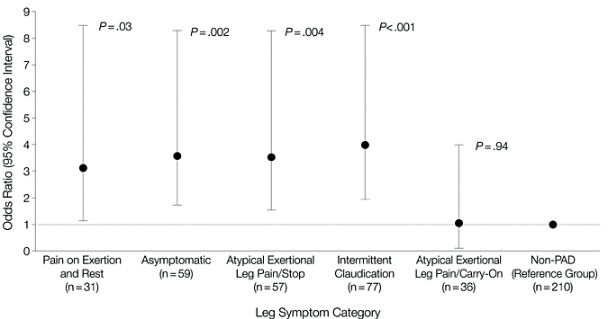
[11] Figure 3: 증상별 6분 연속 보행 불능 · 인쇄p460 / PDFp8 (공식 HTML 원도판과 PDF 대조) 점은 보정 오즈비, 세로선은 95% 신뢰구간입니다. 무증상 PAD의 점과 기준선 1을 비교합니다.
[11] Figure 3: 증상별 6분 연속 보행 불능 · 인쇄p460 / PDFp8 (공식 HTML 원도판과 PDF 대조) · 원문
원문 연결
C06 — Several studies of older adults have identified obstructive peripheral arterial disease (PAD) as an important predictor of incident physical disability or gait speed decline.
원문 뜻: 노인 대상 여러 연구는 폐색성 말초동맥질환(PAD)을 새로운 신체장애 발생 또는 보행속도 저하의 중요한 예측요인으로 보고했다.
내용 해설
전체 표본 676명과 그림의 하위표본 470명을 구분한다. 기저에 6분 연속 보행이 가능했던 사람들에서 2년 후 불가능해지는 사건을 분석했다. 그림의 X축은 기저 증상 범주, Y축은 비PAD를 기준 OR=1로 둔 보정 오즈비와 95% CI다. 무증상 PAD의 점 추정치 3.63과 넓은 신뢰구간 1.58–8.36은 통증이 없다고 기능 저하 위험이 없지는 않다는 배경을 제공한다. 원 Figure 3의 각 증상군 n 합계는 이 하위표본에 해당하며 전체 676명의 군별 n과 다르다. 오즈비는 보행 속도 감소량이나 위험비와 동일하지 않다. 보정 변수에는 연령·성별·인종·동반질환 및 시간변화 흡연·BMI 등이 포함됐다. 관찰연구이며 생존·추적 누락 편향이 남는다.
인용 범위
C06의 향후 보행 기능 저하를 뒷받침하는 직접 추적 근거. 증상에 따른 하위집단과 연속 보행 불가라는 결과 지표의 범위를 유지한다.
선행연구 설계와 한계
[11] 연구 설계: 55세 이상 676명(PAD 417명, 비PAD 259명)의 전향 코호트. 6분 걷기 거리와 4 m 보행속도를 1·2년 후 반복 측정.
[11] 해석 범위: 관찰자료이므로 PAD 치료가 기능감소를 예방한다는 인과는 증명하지 않는다. 기저707명 중31명은 첫 추적 전에 사망하여 분석에서 제외되어 중증 대상자의 생존 편향 가능성이 있다. 결측을 보정했지만 탈락·증상군 크기 차이와 잔여교란이 남는다.
확인한 출처
[11] Functional decline in peripheral arterial disease: associations with the ankle brachial index and leg symptoms (2004); DOI 10.1001/jama.292.4.453; 로컬 원문 ../인용논문_리딩룸/pdfs/11_McDermott_2004_PAD_FunctionalDecline.pdf
인용문헌: [11]
원문 주장과 도판의 관계 : 문헌 11 Figure 3은 기저 6분 연속 보행 가능자 470명에서, 증상 범주별 2년 뒤 연속 보행 불가의 보정 OR을 비PAD와 비교한다. 무증상 PAD는 n=59, OR 3.63(1.58–8.36)이다. 보행 속도의 연간 변화나 위험비가 아니다.
그림·표 읽기 해설 화면 단계 1 자료: McDermott 등의 Figure 3. 기저 6분 연속 보행이 가능했던 470명에서 2년 뒤 불가능해지는 결과를 분석한다.
축·열·범례: X축은 운동·휴식 통증, 무증상, 비전형 운동통증/중단, 간헐적 파행, 비전형 통증/계속 걷기, 비PAD의 여섯 범주다. Y축은 보정 OR이고 Non-PAD가 기준 1이다. 점은 추정치, 위아래 선은 CI다. CI가 1을 포함하는지 확인한다. 각 범주 아래 n은 이 하위분석의 표본 수다.
관찰 결과: 무증상 PAD는 OR 3.63(95% CI 1.58–8.36), P=.002로 비PAD보다 오즈가 높다. 통증이 있어도 계속 걷는 범주의 CI는 1을 포함하여 모든 증상군이 같은 결과는 아니다.
본문과의 연결: 증상이 없더라도 PAD에서 이후 보행 기능 저하를 경험할 수 있음을 보여 주어 PAD의 기능적 예측 가치를 보완한다.
해석 범위: OR은 위험비, 보행 속도 차이, 연간 감소율과 다르다. 전체 코호트 676명과 이 그림 470명을 구분한다. 무증상군 CI가 넓어 효과 크기에 불확실성이 있다.
PAD : Peripheral Arterial Disease · 말초동맥질환 · OR : 오즈비 · CI : 신뢰구간 · P : 유의확률
APPENDIX
Appendix : PAD 증상별 연간 기능 변화 PAD의 기저 상태·증상에 따라 달라지는 이후 보행 기능 변화 [11]
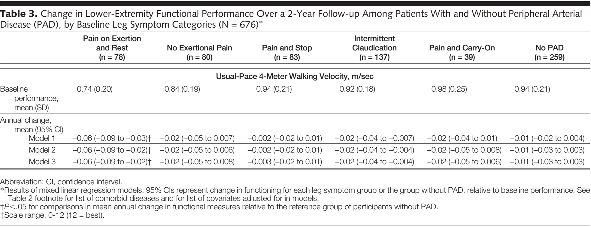
[11] Table 3 일부 · 평상시 4 m 보행 속도 · 인쇄p459 / PDFp7 위는 처음 속도, 아래는 모형별 연간 변화입니다. †는 비PAD와 감소율을 비교한 표시입니다.
[11] Table 3 일부 · 평상시 4 m 보행 속도 · 인쇄p459 / PDFp7 · 원문
원문 연결
C06 — Several studies of older adults have identified obstructive peripheral arterial disease (PAD) as an important predictor of incident physical disability or gait speed decline.
원문 뜻: 노인 대상 여러 연구는 폐색성 말초동맥질환(PAD)을 새로운 신체장애 발생 또는 보행속도 저하의 중요한 예측요인으로 보고했다.
내용 해설
원 Table 3는 증상별 6개 집단의 기저값과 Model 1–3 연간 변화를 모두 제시한다. 평상시 4 m 보행 속도 항목에서 완전 보정 Model 3의 운동·휴식 시 통증군은 −.06(95% CI −.09~−.02) m/s/년, 비PAD는 −.01(−.03~.003) m/s/년이며 초록의 군간 비교 P=.02이다. 이 값은 모든 PAD를 합친 한 가지 평균 감소율이 아니라 특정 증상군의 추정치다. 무증상 PAD군은 평상시 속도 감소가 유의하게 큰 것으로 보고되지 않았지만, 6분 보행거리의 연간 감소는 비PAD보다 컸다. 따라서 보행거리와 속도, 평균 변화와 군간 차이의 검정을 구별한다. 각 모형은 나이·성별·인종·기저/이전 기능·질환·BMI·흡연·결측 양상을 고려한다. 두 해 추적 자료의 근거이며 PWV의 독립 연관성을 검정하지 않았다.
인용 범위
C06에 포함된 PAD·기능 감소 근거를 결과 지표와 증상군 수준에서 세분한다. 특정 증상군의 속도 감소를 전체 PAD에 일반화하지 않는다.
선행연구 설계와 한계
[11] 연구 설계: 55세 이상 676명(PAD 417명, 비PAD 259명)의 전향 코호트. 6분 걷기 거리와 4 m 보행속도를 1·2년 후 반복 측정.
[11] 해석 범위: 관찰자료이므로 PAD 치료가 기능감소를 예방한다는 인과는 증명하지 않는다. 기저707명 중31명은 첫 추적 전에 사망하여 분석에서 제외되어 중증 대상자의 생존 편향 가능성이 있다. 결측을 보정했지만 탈락·증상군 크기 차이와 잔여교란이 남는다.
확인한 출처
[11] Functional decline in peripheral arterial disease: associations with the ankle brachial index and leg symptoms (2004); DOI 10.1001/jama.292.4.453; 로컬 원문 ../인용논문_리딩룸/pdfs/11_McDermott_2004_PAD_FunctionalDecline.pdf
인용문헌: [11]
원문 주장과 도판의 관계 : 문헌 11 Table 3의 평상시 4m 속도 영역은 증상군별 연간 변화와 비PAD 비교를 보여 준다. 완전 보정 Model 3에서 운동·휴식 시 통증군 −.06, 비PAD −.01 m/s/년이다. 모든 PAD군에 같은 추가 감소가 확인된 것은 아니다.
그림·표 읽기 해설 화면 단계 1 자료: McDermott 등의 Table 3 중 평상시 4m 보행 속도 영역. 두 해 동안의 변화 추정치를 증상군 5개와 비PAD에서 비교한다.
축·열·범례: 열은 기저 증상군이다. Baseline 행은 처음 평균(SD), Annual change의 Model 1–3 행은 연간 변화와 CI다. 이 모형 번호는 Watson의 Model 1–3과 다르다. 완전 보정 Model 3에서 운동·휴식 통증 열과 No PAD 열을 비교한다. CI가 0을 포함하는지는 각 군의 변화에 관한 정보이고, †는 비PAD 대비 군간 변화 차이에 관한 정보다.
관찰 결과: 운동·휴식 시 통증군 Model 3은 −.06(−.09,−.02), 비PAD는 −.01(−.03,.003) m/s/년이다. 특정 통증군에 †가 있지만 모든 PAD군이 같은 추가 감소를 보인 것은 아니다.
본문과의 연결: PAD의 기저 증상 양상과 이후 보행 감소가 관련됨을 보여 주는 종단 근거다.
해석 범위: 특정 증상군 결과를 전체 PAD의 한 가지 감소율로 일반화하지 않는다. 무증상군의 6분 보행거리 결과와 평상시 보행 속도 결과도 구분한다. 보정과 누락 고려가 인과를 입증하는 것은 아니다.
PAD : Peripheral Arterial Disease · 말초동맥질환 · SD : 표준편차 · CI : 신뢰구간
APPENDIX
Appendix : 대동맥 경직도와 이동 능력의 연구 공백 PWV의 혈관 영향과 PAD의 보행 저하를 연결할 종단 근거의 공백
알려진 것: PWV–심혈관 사건 / PAD–장애·보행 저하. · 남은 질문: 처음 신체 기능이 양호한 지역사회 노인의 PWV와 이후 보행 변화는 관련되는가?
PWV–심혈관 사건과 PAD–보행 저하는 서로 다른 근거입니다. 두 관계를 합쳤다고 PWV–보행이 입증되는 것은 아닙니다.
Watson et al. (2011), American Journal of Hypertension 24:90–95 · 원문
원문 연결
내용 해설
원 서론 첫 단락의 마지막 절은 “however, the relationship of aortic stiffness with mobility decline, a common consequence of vascular disease, has not been well characterized in older adults living in the community.”이다. 이 부분에는 새로운 인용 번호가 붙지 않는다. 저자는 앞선 심혈관 사건·미세혈관 기전과 PAD 기능 연구를 연결하면서 대동맥 경직도 자체가 이동 능력 저하와 어떻게 관련되는지라는 공백을 제시한다. 여기서 이미 알려진 것은 동일한 질문의 동일한 자료가 아니다. [1]은 심혈관 사건, [8]은 팔의 미세혈관 반응, [9–11]은 PAD와 기능이다. 이 차이가 Health ABC에서 기저 PWV와 반복 보행 속도를 분석하려는 이유다. 이 페이지는 제시한 선행 자료의 종합이며 새 정량 결과를 만든 것이 아니다.
인용 범위
주논문 인쇄 90쪽 서론의 인용 없는 연구 공백 절을 앞선 근거와 연결한 요약이다. 단면 연관성·종단 예측·기전을 같은 종류의 증거로 합치지 않는다.
선행연구 설계와 한계
[1] 연구 설계: Health ABC의 기능이 양호한 지역사회 고령자 중 aPWV 측정이 가능한 2,488명(기저 70–79세)의 전향적 관찰 코호트. 평균 4.6년간 사망·관상동맥질환·뇌졸중·심부전 사건을 추적했다. 성별 aPWV 사분위수로 비교했으며 7쪽 논문과 출판사 후면정보 1쪽을 읽었다.
[1] 해석 범위: 관찰 코호트이므로 aPWV를 낮추면 사건이 줄어든다는 치료 인과는 증명하지 않는다. 기능이 양호한 고령자를 선별했고 3,075명 중 aPWV 자료가 있는2,488명만 분석했다. 최저군 대비 상위군의 문턱 형태와 보정 단계에 따른 신뢰구간 변화가 있어 Q4만 단순한 보편적 위험값으로 쓰지 않는다.
[8] 연구 설계: Framingham Offspring 2,045명(여성 1,107명; 61±9세)의 횡단 연구. 5분 전완 커프 폐쇄 전후의 도플러 혈류와 전완혈관저항(FVR)을 측정하고 경동맥-대퇴동맥 PWV(CFPWV), 맥압, 전진파 진폭(Pf)과 비교.
[8] 해석 범위: 횡단 설계라 인과를 판정할 수 없다. 주로 백인인 중·고령 지역사회 표본이며 전완용적을 직접 측정하지 않았다.
[9] 연구 설계: Cardiovascular Health Study 고령자 4,705명(여성 58%, 흑인 17.6%)을 6년 추적. 기저 AAI와 매년 측정한 보행속도 및 장애를 비교. 전체4705명 중 보행속도 분석4344명, 새 이동장애 분석3048명, ADL/IADL 장애 분석2555명으로 결과별 표본 수가 다르다.
[9] 해석 범위: 이동·ADL/IADL 장애는 자기보고이며 가장 허약한 대상자의 보행검사 누락에 따른 선택편향 가능성이 있다. 보행속도 연간 감소율을 결과별 표본 수·보정 차이와 함께 읽는다.
[10] 연구 설계: 미국 NHANES 1999–2002의 60세 이상 1,798명을 분석한 횡단 연구. PAD는 어느 한 다리 ABI<0.9로 정의. 등속성 근력검사·20피트 보행검사·자기보고 기능 자료 사용.
[10] 해석 범위: 횡단자료이므로 기능 저하의 선후관계와 매개 인과를 확정할 수 없다. 기능 설문 대상자의 약 51%가 최종 분석에서 제외되었고, 선택된 부분표본이라 NHANES 인구 가중치를 사용하지 않아 전체 미국 고령자로 일반화하는 데 제한이 있다.
[11] 연구 설계: 55세 이상 676명(PAD 417명, 비PAD 259명)의 전향 코호트. 6분 걷기 거리와 4 m 보행속도를 1·2년 후 반복 측정.
[11] 해석 범위: 관찰자료이므로 PAD 치료가 기능감소를 예방한다는 인과는 증명하지 않는다. 기저707명 중31명은 첫 추적 전에 사망하여 분석에서 제외되어 중증 대상자의 생존 편향 가능성이 있다. 결측을 보정했지만 탈락·증상군 크기 차이와 잔여교란이 남는다.
확인한 출처
[1] Elevated aortic pulse wave velocity, a marker of arterial stiffness, predicts cardiovascular events in well-functioning older adults (2005); DOI 10.1161/circulationaha.104.483628; 로컬 원문 ../인용논문_리딩룸/pdfs/01_SuttonTyrrell_2005_aPWV_CVEvents.pdf
[8] Cross-sectional relations of peripheral microvascular function, cardiovascular disease risk factors, and aortic stiffness: the Framingham Heart Study (2005); DOI 10.1161/circulationaha.105.551168; 로컬 원문 ../인용논문_리딩룸/pdfs/08_Mitchell_2005_MicrovascularFunction.pdf
[9] Incident physical disability in people with lower extremity peripheral arterial disease: the role of cardiovascular disease (2008); DOI 10.1111/j.1532-5415.2008.01719.x; 로컬 원문 ../인용논문_리딩룸/pdfs/09_Brach_2008_PAD_PhysicalDisability.pdf
[10] The relation of peripheral arterial disease to leg force, gait speed, and functional dependence among older adults (2008); DOI 10.1093/gerona/63.4.384; 로컬 원문 ../인용논문_리딩룸/pdfs/10_Kuo_2008_PAD_LegForce_Gait.pdf
[11] Functional decline in peripheral arterial disease: associations with the ankle brachial index and leg symptoms (2004); DOI 10.1001/jama.292.4.453; 로컬 원문 ../인용논문_리딩룸/pdfs/11_McDermott_2004_PAD_FunctionalDecline.pdf
인용문헌: [1], [8], [9], [10], [11]
원문 주장과 도판의 관계 : Watson 서론의 연구 공백 문장과 앞선 참고문헌들의 종합이다. 이 페이지에는 직접 검증 결과를 나타내는 원도판이 없다. 사건 예측, 횡단 기능 차이, 종단 기능 감소를 하나의 인과 연쇄로 합쳐서는 안 된다.
그림·표 읽기 해설 화면 단계 1 자료: 선행근거와 연구 공백을 정리한 문장·개념 요약.
축·열·범례: PWV가 설명변수인 선행연구의 결과는 심혈관 사건·미세혈관 반응이고, PAD 연구의 결과는 장애·보행 기능이다. 지역사회 노인의 기저 PWV와 장기 보행 변화라는 빈 연결을 확인한다.
관찰 결과: 이 페이지에는 추정계수·그래프 수치가 없다. 이미 알려진 결과와 미확인 질문을 구분한다.
본문과의 연결: Watson이 Health ABC에서 수행한 분석이 어떤 연구 공백을 메우려는지 설명한다.
해석 범위: 서로 다른 관찰 연구를 이어 붙여 하나의 확정된 인과 경로로 만들지 않는다.
PWV : 맥파전달속도 · PAD : Peripheral Arterial Disease · 말초동맥질환
APPENDIX
Appendix : 이완기 기능·미세혈관 관류 가설 가능한 설명: 이완기 기능장애 또는 미세혈관 관류 감소 [12]
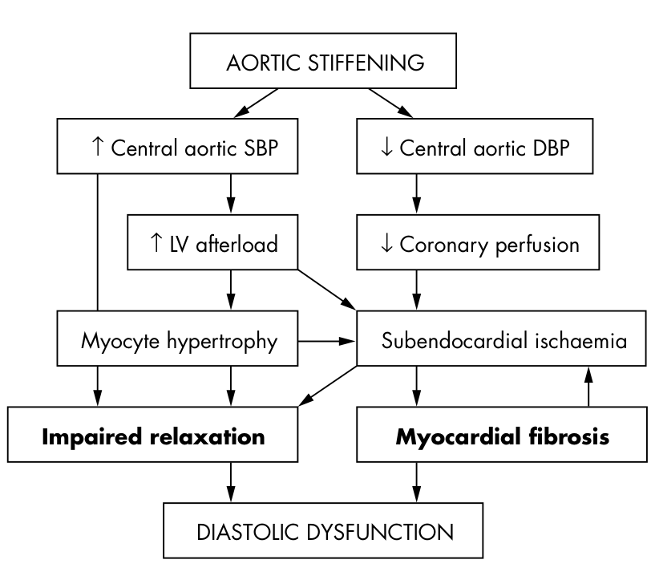
[5] Figure 3 · 경직과 이완기 기능장애의 기전 · PDF 5쪽 / p.1555 위에서 아래로 제안된 경로를 따라갑니다. 도식의 끝은 이완기 기능장애이며 보행 속도는 포함하지 않습니다.
[5] Figure 3 · 경직과 이완기 기능장애의 기전 · PDF 5쪽 / p.1555 · 원문
원문 연결
C08 — Independent associations of PWV with gait speed in this cohort may suggest functional consequences of diastolic dysfunction or reduced microvascular perfusion in the presence of aortic stiffness.
원문 뜻: 이 코호트에서 PWV와 보행속도가 독립적으로 관련된다면, 동맥 경직에 동반된 이완기 기능장애 또는 미세혈관 관류 감소의 기능적 영향을 시사할 수 있다고 보았다.
내용 해설
C08의 원 인용 번호는 [12]이며, 도판은 기전의 이해를 돕기 위해 별도로 선택한 Mottram [5] Figure 3이다. 따라서 이 보조 도식을 Watson이 C08에서 직접 인용한 그림처럼 제시하지 않는다. Mottram 도식은 대동맥 경직, 중심 수축기혈압 증가·이완기혈압 감소, 후부하·관상관류, 이완장애로 이어질 수 있는 경로를 설명한다. Watson은 독립적인 PWV–보행 관계가 확인된다면 이완기 기능이나 미세혈관 관류 저하가 기능적으로 갖는 의미를 시사할 수 있다고 제안했다. 그러나 주논문은 이완기 기능, 하지 미세혈관 관류 또는 해당 매개 경로를 직접 측정·검정하지 않았다. [12]는 2015년 철회되어 현재의 치료 기전 근거로 쓸 수 없다. 따라서 이 문장은 검토 가설과 관찰 결과의 생리적 해석 범위에 놓이며, 보행과 PWV의 연관성이 곧 경로의 입증은 아니다.
인용 범위
C08의 원 인용은 철회된 [12]. 선택한 [5] Figure 3은 별도의 보조 기전 도식으로 출처를 구분한다. 주논문의 직접 측정과 가능한 매개 경로를 구분한다.
선행연구 설계와 한계
[5] 연구 설계: 운동성 호흡곤란이 있는 치료 중 고혈압 환자 70명(58±8세; 여성 40명)과 정상혈압 대조군 15명. 조직 도플러·혈류 전파속도로 이완기 기능을 평가하고 맥압법으로 동맥 순응도를 구했다.
[5] 해석 범위: 소규모 선택 표본의 횡단 연관성. 원문은 인과관계를 직접 조사하지 않았다고 명시한다.
[12] 연구 설계: 원 보고: PAD 환자 40명, 라미프릴 10 mg/일 대 위약 각 20명, 24주 이중눈가림 무작위시험의 같은 코호트 사후 분석. 해당 자료의 신뢰성은 철회로 훼손되었다.
[12] 해석 범위: 2015년 공식 철회된 자료다. 원본을 확보했지만 환자자료 신뢰성이 훼손되었으므로 효과·기전 검증에 사용할 수 없다. 혈압 감소와 독립적인 보행 개선이라는 Watson의 개입 설명은 이 자료로 현재 지지하지 않는다.
확인한 출처
[5] Relation of arterial stiffness to diastolic dysfunction in hypertensive heart disease (2005); DOI 10.1136/hrt.2004.046805; 로컬 원문 ../인용논문_리딩룸/pdfs/05_Mottram_2005_DiastolicDysfunction.pdf
[12] Reduced arterial stiffness may contribute to angiotensin-converting enzyme inhibitor induced improvements in walking time in peripheral arterial disease patients (2008); DOI 10.1097/hjh.0b013e3282f8e3b6; 로컬 원문 ../인용논문_리딩룸/pdfs/12_RETRACTED_Ahimastos_2008_Historical.pdf
인용문헌: [5], [12]
원문 주장과 도판의 관계 : Watson의 마지막 서론 문장은 두 가능한 설명을 제안한다. 현재 문헌 5 Figure 3은 대동맥 경직–중심압–후부하/관상관류–이완기 기능장애의 가설 도식이며, 미세혈관 관류 감소나 보행 속도를 도식 자체에 포함하지 않는다. 원문 해당 문장의 인용은 철회된 문헌 12이고, 문헌 5는 별도 보충 시각자료다.
그림·표 읽기 해설 화면 단계 1 자료: Mottram 문헌 5의 Figure 3. 중심 수축기·이완기압, 좌심실 부하·관상관류와 이완기 기능장애를 연결한 기전 도식이다.
축·열·범례: 위 Aortic stiffening에서 두 갈래로 나뉜다. 왼쪽은 중심 SBP 증가→LV 후부하·심근 비대→이완 저하, 오른쪽은 중심 DBP 감소→관상관류 저하→허혈·섬유화로 이어지는 제안 경로다. 화살표는 설명하는 방향이며 경로마다 이 논문에서 효과 크기를 추정했다는 뜻은 아니다.
관찰 결과: 대동맥 경직이 심장 이완기 기능에 영향을 줄 수 있는 생리학적 설명을 정리한다. 보행 속도나 하지 미세혈관 관류 결과는 이 도식에 없다.
본문과의 연결: Watson이 제안한 “PWV–보행 연관성이 이완기 기능장애의 기능적 의미를 시사할 수 있다”는 가설 중 이완기 기능 부분을 이해하는 데 도움을 준다.
해석 범위: 이 도식은 별도 보충자료 [5]이며 Watson 마지막 서론 문장의 원래 인용은 철회된 [12]다. Watson은 이완기 기능·미세관류를 직접 측정하지 않았으므로 매개 경로를 입증했다고 말하지 않는다.
SBP : 수축기혈압 · DBP : 이완기혈압 · LV : 좌심실 / 좌심실의 · PWV : 맥파전달속도
APPENDIX
Appendix : 그림과 수치의 근거 원도판 · 보고 계수의 재시각화 · 본문 방법 요약을 구분
자료 종류 포함한 내용 해석 기준 원문 Figure / Table 인용논문의 실제 도판과 주논문 Tables 1–3 원 출처·도판 번호·측정 조건 확인 보고 계수의 재시각화 Table 3의 계수와 95% 신뢰구간 원문 요약 추정치 사용 본문 방법 요약 측정 일정·PWV 사분위군·기저 검정·보정 조건 Methods와 표 주석의 보고 내용만 요약
주논문은 절편과 개인별·연도별 원자료를 제공하지 않음
Watson et al. (2011), American Journal of Hypertension 24:90–95 · 원문
원문 Figure/Table은 실제 출처 도판이고 Table 3 계수 그래프는 보고 추정치와 95% 신뢰구간의 재시각화다. 방법 요약은 Methods·표 각주만 정리했다. 가상 개인 자료와 궤적·재구성 수식 페이지는 현재 발표에서 삭제했고 수정 전 백업에만 보존했다.
그림·표 읽기 해설 화면 단계 1 자료: 원도판, 보고된 계수의 재시각화, 본문 방법 요약을 구분한 출처 표다.
축·열·범례: 실제 도판과 보고 계수의 그래프는 원문 결과이며 방법 요약은 본문·표 각주를 정리한 것이다.
관찰 결과: Methods의 가상 개인 자료·궤적·재구성 수식 페이지는 현재 발표에서 제외했다.
본문과의 연결: 그림과 표가 어떤 근거를 사용하는지 구분한다.
해석 범위: 논문에 없는 개인별 원자료나 절편값을 새로 만들지 않았다.
PWV : 맥파전달속도
APPENDIX
Appendix : 참고문헌 1–6 번호 주논문의 인용문헌 [1] Sutton-Tyrrell K, Najjar SS, Boudreau RM, Venkitachalam L, Kupelian V, Simonsick EM, Havlik R, Lakatta EG, Spurgeon H, Kritchevsky S, Pahor M, Bauer D, Newman A; Health ABC Study. Elevated aortic pulse wave velocity, a marker of arterial stiffness, predicts cardiovascular events in well-functioning older adults. Circulation 2005; 111:3384–3390. [2] O’Rourke MF. Arterial aging: pathophysiological principles. Vasc Med 2007; 12:329–341. [3] O’Rourke MF, Safar ME. Relationship between aortic stiffening and microvascular disease in brain and kidney: cause and logic of therapy. Hypertension 2005; 46:200–204. [4] Safar ME, Lacolley P. Disturbance of macro- and microcirculation: relations with pulse pressure and cardiac organ damage. Am J Physiol Heart Circ Physiol 2007; 293:H1–H7. [5] Mottram PM, Haluska BA, Leano R, Carlier S, Case C, Marwick TH. Relation of arterial stiffness to diastolic dysfunction in hypertensive heart disease. Heart 2005; 91:1551–1556. [6] Park JB, Schiffrin EL. Small artery remodeling is the most prevalent (earliest?) form of target organ damage in mild essential hypertension. J Hypertens 2001; 19:921–930.
Watson et al. (2011), References [1–43] · 원문
번호는 Watson 주논문의 인용번호다. 원문 PDF, 확보 버전, 문장별 인용 맥락 및 그림은 상위 폴더의 인용논문 리딩룸에서 확인할 수 있다. Ref.12는 2015년 철회 상태를 포함하여 읽는다.
그림·표 읽기 해설 화면 단계 1 자료: 각 행은 한 편의 참고문헌이다.
축·열·범례: 대괄호 번호가 Watson 본문의 인용 번호와 대응한다. 저자·논문명·학술지·연도·권·쪽을 읽는다.
관찰 결과: 이 페이지는 새로운 결과나 효과 크기를 제시하는 표가 아니다.
본문과의 연결: 발표자료의 출처와 Watson 본문의 인용 근거를 찾아갈 수 있게 한다.
해석 범위: 목록에 포함되었다는 사실만으로 모든 주장이 같은 강도로 입증되는 것은 아니다.
APPENDIX
Appendix : 참고문헌 7–12 번호 주논문의 인용문헌 [7] Intengan HD, Schiffrin EL. Structure and mechanical properties of resistance arteries in hypertension: role of adhesion molecules and extracellular matrix determinants. Hypertension 2000; 36:312–318. [8] Mitchell GF, Vita JA, Larson MG, Parise H, Keyes MJ, Warner E, Vasan RS, Levy D, Benjamin EJ. Cross-sectional relations of peripheral microvascular function, cardiovascular disease risk factors, and aortic stiffness: the Framingham Heart Study. Circulation 2005; 112:3722–3728. [9] Brach JS, Solomon C, Naydeck BL, Sutton-Tyrrell K, Enright PL, Jenny NS, Chaves PM, Newman AB; Cardiovascular Health Study Research Group. Incident physical disability in people with lower extremity peripheral arterial disease: the role of cardiovascular disease. J Am Geriatr Soc 2008; 56:1037–1044. [10] Kuo HK, Yu YH. The relation of peripheral arterial disease to leg force, gait speed, and functional dependence among older adults. J Gerontol A Biol Sci Med Sci 2008; 63:384–390. [11] McDermott MM, Liu K, Greenland P, Guralnik JM, Criqui MH, Chan C, Pearce WH, Schneider JR, Ferrucci L, Celic L, Taylor LM, Vonesh E, Martin GJ, Clark E. Functional decline in peripheral arterial disease: associations with the ankle brachial index and leg symptoms. JAMA 2004; 292:453–461. [12] Ahimastos AA, Dart AM, Lawler A, Blombery PA, Kingwell BA. Reduced arterial stiffness may contribute to angiotensin-converting enzyme inhibitor induced improvements in walking time in peripheral arterial disease patients. J Hypertens 2008; 26:1037–1042.
Watson et al. (2011), References [1–43] · 원문
번호는 Watson 주논문의 인용번호다. 원문 PDF, 확보 버전, 문장별 인용 맥락 및 그림은 상위 폴더의 인용논문 리딩룸에서 확인할 수 있다. Ref.12는 2015년 철회 상태를 포함하여 읽는다.
그림·표 읽기 해설 화면 단계 1 자료: 각 행은 한 편의 참고문헌이다.
축·열·범례: 대괄호 번호가 Watson 본문의 인용 번호와 대응한다. 저자·논문명·학술지·연도·권·쪽을 읽는다.
관찰 결과: 이 페이지는 새로운 결과나 효과 크기를 제시하는 표가 아니다.
본문과의 연결: 발표자료의 출처와 Watson 본문의 인용 근거를 찾아갈 수 있게 한다.
해석 범위: 목록에 포함되었다는 사실만으로 모든 주장이 같은 강도로 입증되는 것은 아니다.
APPENDIX
Appendix : 참고문헌 13–18 번호 주논문의 인용문헌 [13] Laurent S, Cockcroft J, Van Bortel L, Boutouyrie P, Giannattasio C, Hayoz D, Pannier B, Vlachopoulos C, Wilkinson I, Struijker-Boudier H; European Network for Non‑invasive Investigation of Large Arteries. Expert consensus document on arterial stiffness: methodological issues and clinical applications. Eur Heart J 2006; 27:2588–2605. [14] Yao ST, Hobbs JT, Irvine WT. Ankle systolic pressure measurements in arterial disease affecting the lower extremities. Br J Surg 1969; 56:676–679. [15] Madero M, Wassel CL, Peralta CA, Najjar SS, Sutton-Tyrrell K, Fried L, Canada R, Newman A, Shlipak MG, Sarnak MJ; Health ABC Study. Cystatin C associates with arterial stiffness in older adults. J Am Soc Nephrol 2009; 20:1086–1093. [16] Ainsworth BE, Haskell WL, Leon AS, Jacobs DR Jr, Montoye HJ, Sallis JF, Paffenbarger RS Jr. Compendium of physical activities: classification of energy costs of human physical activities. Med Sci Sports Exerc 1993; 25:71–80. [17] Brach JS, Simonsick EM, Kritchevsky S, Yaffe K, Newman AB; Health, Aging and Body Composition Study Research Group. The association between physical function and lifestyle activity and exercise in the health, aging and body composition study. J Am Geriatr Soc 2004; 52:502–509. [18] Henskens LH, Kroon AA, van Oostenbrugge RJ, Gronenschild EH, Fuss‑Lejeune MM, Hofman PA, Lodder J, de Leeuw PW. Increased aortic pulse wave velocity is associated with silent cerebral small-vessel disease in hypertensive patients. Hypertension 2008; 52:1120–1126.
Watson et al. (2011), References [1–43] · 원문
번호는 Watson 주논문의 인용번호다. 원문 PDF, 확보 버전, 문장별 인용 맥락 및 그림은 상위 폴더의 인용논문 리딩룸에서 확인할 수 있다. Ref.12는 2015년 철회 상태를 포함하여 읽는다.
그림·표 읽기 해설 화면 단계 1 자료: 각 행은 한 편의 참고문헌이다.
축·열·범례: 대괄호 번호가 Watson 본문의 인용 번호와 대응한다. 저자·논문명·학술지·연도·권·쪽을 읽는다.
관찰 결과: 이 페이지는 새로운 결과나 효과 크기를 제시하는 표가 아니다.
본문과의 연결: 발표자료의 출처와 Watson 본문의 인용 근거를 찾아갈 수 있게 한다.
해석 범위: 목록에 포함되었다는 사실만으로 모든 주장이 같은 강도로 입증되는 것은 아니다.
APPENDIX
Appendix : 참고문헌 19–24 번호 주논문의 인용문헌 [19] Wechsler D. Wechsler Adult Intelligence Scale-Revised. Psychological: San Antonio, TX, 1981. [20] O’Sullivan M, Morris RG, Markus HS. Brief cognitive assessment for patients with cerebral small vessel disease. J Neurol Neurosurg Psychiatr 2005; 76:1140–1145. [21] Elkins JS, Knopman DS, Yaffe K, Johnston SC. Cognitive function predicts first-time stroke and heart disease. Neurology 2005; 64:1750–1755. [22] Ochi N, Kohara K, Tabara Y, Nagai T, Kido T, Uetani E, Ochi M, Igase M, Miki T. Association of central systolic blood pressure with intracerebral small vessel disease in Japanese. Am J Hypertens 2010; 23:889–894. [23] Weber T, O’Rourke MF, Ammer M, Kvas E, Punzengruber C, Eber B. Arterial stiffness and arterial wave reflections are associated with systolic and diastolic function in patients with normal ejection fraction. Am J Hypertens 2008; 21:1194–1202. [24] Amoh-Tonto CA, Malik AR, Kondragunta V, Ali Z, Kullo IJ. Brachial-ankle pulse wave velocity is associated with walking distance in patients referred for peripheral arterial disease evaluation. Atherosclerosis 2009; 206:173–178.
Watson et al. (2011), References [1–43] · 원문
번호는 Watson 주논문의 인용번호다. 원문 PDF, 확보 버전, 문장별 인용 맥락 및 그림은 상위 폴더의 인용논문 리딩룸에서 확인할 수 있다. Ref.12는 2015년 철회 상태를 포함하여 읽는다.
그림·표 읽기 해설 화면 단계 1 자료: 각 행은 한 편의 참고문헌이다.
축·열·범례: 대괄호 번호가 Watson 본문의 인용 번호와 대응한다. 저자·논문명·학술지·연도·권·쪽을 읽는다.
관찰 결과: 이 페이지는 새로운 결과나 효과 크기를 제시하는 표가 아니다.
본문과의 연결: 발표자료의 출처와 Watson 본문의 인용 근거를 찾아갈 수 있게 한다.
해석 범위: 목록에 포함되었다는 사실만으로 모든 주장이 같은 강도로 입증되는 것은 아니다.
APPENDIX
Appendix : 참고문헌 25–30 번호 주논문의 인용문헌 [25] Cesari M, Kritchevsky SB, Penninx BW, Nicklas BJ, Simonsick EM, Newman AB, Tylavsky FA, Brach JS, Satterfield S, Bauer DC, Visser M, Rubin SM, Harris TB, Pahor M. Prognostic value of usual gait speed in well-functioning older people– results from the Health, Aging and Body Composition Study. J Am Geriatr Soc 2005; 53:1675–1680. [26] Hajjar I, Lackland DT, Cupples LA, Lipsitz LA. Association between concurrent and remote blood pressure and disability in older adults. Hypertension 2007; 50:1026–1032. [27] Rosano C, Kuller LH, Chung H, Arnold AM, Longstreth WT Jr, Newman AB. Subclinical brain magnetic resonance imaging abnormalities predict physical functional decline in high-functioning older adults. J Am Geriatr Soc 2005; 53: 649–654. [28] Silbert LC, Nelson C, Howieson DB, Moore MM, Kaye JA. Impact of white matter hyperintensity volume progression on rate of cognitive and motor decline. Neurology 2008; 71:108–113. [29] Starr JM, Leaper SA, Murray AD, Lemmon HA, Staff RT, Deary IJ, Whalley LJ. Brain white matter lesions detected by magnetic resonance [correction of resosnance] imaging are associated with balance and gait speed. J Neurol Neurosurg Psychiatr 2003; 74:94–98. [30] Black S, Gao F, Bilbao J. Understanding white matter disease: imaging- pathological correlations in vascular cognitive impairment. Stroke 2009; 40(3 Suppl):S48–S52.
Watson et al. (2011), References [1–43] · 원문
번호는 Watson 주논문의 인용번호다. 원문 PDF, 확보 버전, 문장별 인용 맥락 및 그림은 상위 폴더의 인용논문 리딩룸에서 확인할 수 있다. Ref.12는 2015년 철회 상태를 포함하여 읽는다.
그림·표 읽기 해설 화면 단계 1 자료: 각 행은 한 편의 참고문헌이다.
축·열·범례: 대괄호 번호가 Watson 본문의 인용 번호와 대응한다. 저자·논문명·학술지·연도·권·쪽을 읽는다.
관찰 결과: 이 페이지는 새로운 결과나 효과 크기를 제시하는 표가 아니다.
본문과의 연결: 발표자료의 출처와 Watson 본문의 인용 근거를 찾아갈 수 있게 한다.
해석 범위: 목록에 포함되었다는 사실만으로 모든 주장이 같은 강도로 입증되는 것은 아니다.
APPENDIX
Appendix : 참고문헌 31–36 번호 주논문의 인용문헌 [31] Longstreth WT Jr, Manolio TA, Arnold A, Burke GL, Bryan N, Jungreis CA, Enright PL, O’Leary D, Fried L. Clinical correlates of white matter findings on cranial magnetic resonance imaging of 3301 elderly people. The Cardiovascular Health Study. Stroke 1996; 27:1274–1282. [32] Brinkley TE, Leng X, Miller ME, Kitzman DW, Pahor M, Berry MJ, Marsh AP, Kritchevsky SB, Nicklas BJ. Chronic inflammation is associated with low physical function in older adults across multiple comorbidities. J Gerontol A Biol Sci Med Sci 2009; 64:455–461. [33] Cesari M, Penninx BW, Pahor M, Lauretani F, Corsi AM, Rhys Williams G, Guralnik JM, Ferrucci L. Inflammatory markers and physical performance in older persons: the InCHIANTI study. J Gerontol A Biol Sci Med Sci 2004; 59:242–248. [34] Kritchevsky SB, Cesari M, Pahor M. Inflammatory markers and cardiovascular health in older adults. Cardiovasc Res 2005; 66:265–275. [35] Semba RD, Ferrucci L, Sun K, Walston J, Varadhan R, Guralnik JM, Fried LP. Oxidative stress and severe walking disability among older women. Am J Med 2007; 120:1084–1089. [36] Carter CS, Onder G, Kritchevsky SB, Pahor M. Angiotensin-converting enzyme inhibition intervention in elderly persons: effects on body composition and physical performance. J Gerontol A Biol Sci Med Sci 2005; 60:1437–1446.
Watson et al. (2011), References [1–43] · 원문
번호는 Watson 주논문의 인용번호다. 원문 PDF, 확보 버전, 문장별 인용 맥락 및 그림은 상위 폴더의 인용논문 리딩룸에서 확인할 수 있다. Ref.12는 2015년 철회 상태를 포함하여 읽는다.
그림·표 읽기 해설 화면 단계 1 자료: 각 행은 한 편의 참고문헌이다.
축·열·범례: 대괄호 번호가 Watson 본문의 인용 번호와 대응한다. 저자·논문명·학술지·연도·권·쪽을 읽는다.
관찰 결과: 이 페이지는 새로운 결과나 효과 크기를 제시하는 표가 아니다.
본문과의 연결: 발표자료의 출처와 Watson 본문의 인용 근거를 찾아갈 수 있게 한다.
해석 범위: 목록에 포함되었다는 사실만으로 모든 주장이 같은 강도로 입증되는 것은 아니다.
APPENDIX
Appendix : 참고문헌 37–40 번호 주논문의 인용문헌 [37] Royall DR, Palmer R, Chiodo LK, Polk MJ. Declining executive control in normal aging predicts change in functional status: the Freedom House Study. J Am Geriatr Soc 2004; 52:346–352. [38] Rodondi N, Marques-Vidal P, Butler J, Sutton-Tyrrell K, Cornuz J, Satterfield S, Harris T, Bauer DC, Ferrucci L, Vittinghoff E, Newman AB; Health, Aging, and Body Composition Study. Markers of atherosclerosis and inflammation for prediction of coronary heart disease in older adults. Am J Epidemiol 2010; 171:540–549. [39] Elias MF, Dore GA, Davey A, Robbins MA, Elias PK. From blood pressure to physical disability: the role of cognition. Hypertension 2010; 55:1360–1365. [40] Perera S, Studenski S, Chandler JM, Guralnik JM. Magnitude and patterns of decline in health and function in 1 year affect subsequent 5-year survival. J Gerontol A Biol Sci Med Sci 2005; 60:894–900.
Watson et al. (2011), References [1–43] · 원문
번호는 Watson 주논문의 인용번호다. 원문 PDF, 확보 버전, 문장별 인용 맥락 및 그림은 상위 폴더의 인용논문 리딩룸에서 확인할 수 있다. Ref.12는 2015년 철회 상태를 포함하여 읽는다.
그림·표 읽기 해설 화면 단계 1 자료: 각 행은 한 편의 참고문헌이다.
축·열·범례: 대괄호 번호가 Watson 본문의 인용 번호와 대응한다. 저자·논문명·학술지·연도·권·쪽을 읽는다.
관찰 결과: 이 페이지는 새로운 결과나 효과 크기를 제시하는 표가 아니다.
본문과의 연결: 발표자료의 출처와 Watson 본문의 인용 근거를 찾아갈 수 있게 한다.
해석 범위: 목록에 포함되었다는 사실만으로 모든 주장이 같은 강도로 입증되는 것은 아니다.
APPENDIX
Appendix : 참고문헌 41–43 번호 주논문의 인용문헌 [41] Simonsick EM, Montgomery PS, Newman AB, Bauer DC, Harris T. Measuring fitness in healthy older adults: the Health ABC Long Distance Corridor Walk. J Am Geriatr Soc 2001; 49:1544–1548. [42] Newman AB, Simonsick EM, Naydeck BL, Boudreau RM, Kritchevsky SB, Nevitt MC, Pahor M, Satterfield S, Brach JS, Studenski SA, Harris TB. Association of long‑distance corridor walk performance with mortality, cardiovascular disease, mobility limitation, and disability. JAMA 2006; 295: 2018–2026. [43] Guralnik JM, Ferrucci L, Pieper CF, Leveille SG, Markides KS, Ostir GV, Studenski S, Berkman LF, Wallace RB. Lower extremity function and subsequent disability: consistency across studies, predictive models, and value of gait speed alone compared with the short physical performance battery. J Gerontol A Biol Sci Med Sci 2000; 55:M221–M231.
Watson et al. (2011), References [1–43] · 원문
번호는 Watson 주논문의 인용번호다. 원문 PDF, 확보 버전, 문장별 인용 맥락 및 그림은 상위 폴더의 인용논문 리딩룸에서 확인할 수 있다. Ref.12는 2015년 철회 상태를 포함하여 읽는다.
그림·표 읽기 해설 화면 단계 1 자료: 각 행은 한 편의 참고문헌이다.
축·열·범례: 대괄호 번호가 Watson 본문의 인용 번호와 대응한다. 저자·논문명·학술지·연도·권·쪽을 읽는다.
관찰 결과: 이 페이지는 새로운 결과나 효과 크기를 제시하는 표가 아니다.
본문과의 연결: 발표자료의 출처와 Watson 본문의 인용 근거를 찾아갈 수 있게 한다.
해석 범위: 목록에 포함되었다는 사실만으로 모든 주장이 같은 강도로 입증되는 것은 아니다.